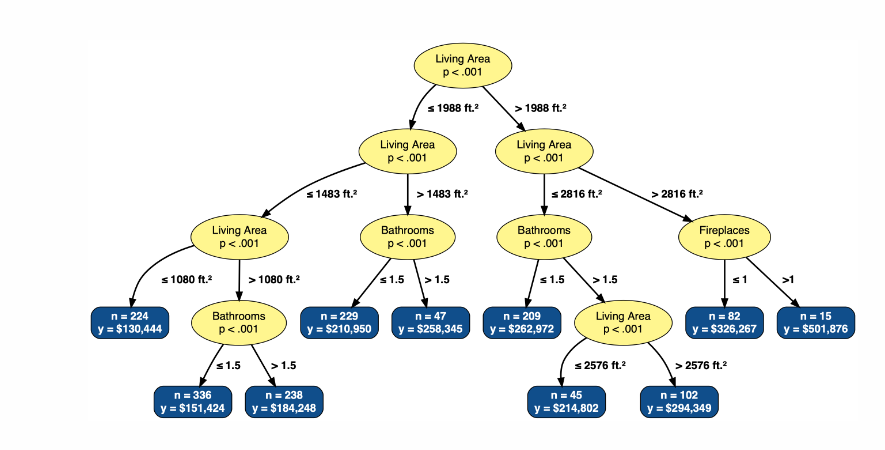

| question | pct_missing |
|---|---|
| he_said_she_said_1_3_3_text | 0.96 |
| he_said_she_said_2_3_3_text | 0.96 |
| he_said_she_said_3_3_3_text | 0.64 |
| movie_budgets_1_1 | 0.07 |
| disease_screening_2 | 0.07 |
| disease_screening_1 | 0.06 |
| movie_wrangling_6_6 | 0.04 |
| movie_wrangling_5_6 | 0.03 |
| movie_budgets_1_2 | 0.03 |
| disease_screening_4 | 0.03 |
| movie_wrangling_1_6 | 0.03 |
| movie_wrangling_2_6 | 0.03 |
| movie_wrangling_4_6 | 0.03 |
| disease_screening_3 | 0.02 |
| movie_wrangling_3_6 | 0.02 |
| application_screenin | 0.02 |
| banana_conclusions | 0.02 |
| covid_map_1_2 | 0.02 |
| covid_map_2_2 | 0.02 |
| attention_check_2_2 | 0.02 |
| realty_tree_2_2 | 0.02 |
| website_testing_2_3 | 0.02 |
| website_testing_3_3 | 0.02 |
| image_recognition1_1 | 0.02 |
| activity_journal_1_1 | 0.02 |
| time_spent | 0.02 |
| movie_budgets_1_3 | 0.01 |
| movie_budgets_1_4 | 0.01 |
| attention_check_1_2 | 0.01 |
| he_said_she_said_1_3 | 0.01 |
| he_said_she_said_2_3 | 0.01 |
| he_said_she_said_3_3 | 0.01 |
| build_a_plot | 0.01 |
| realty_tree_1_2 | 0.01 |
| website_testing_1_3 | 0.01 |
| data_confidentiali1_1 | 0.01 |
| storm_paths_explana | 0.01 |
| movie_budgets_2 | 0.01 |
| storm_paths | 0.00 |
ds assessment report
Question assignments
| Team member | Question assignment |
|---|---|
| Mine Çetinkaya-Rundel | |
| Elijah Meyer | |
| Maria Tackett | |
| Mine Dogucu | |
| Matt Beckman | |
| Andy Zieffler | |
| Chelsey Legacy |
Data analysis instructions
Below is a draft to be updated with the team.
Thematic analysis
code the different statements to identify similar characteristics among answers
identify patterns among codes to create emergent themes (named groups)
define themes created
Suggested to do this independently and compare results to help establish evidence of validity (Consensus coding).
Data
There are 207 participants that opted into our study. Of the 207 participants, 205 made it to the last question of the survey.
Missing observations
Below are the percentages of missing observations by question. Questions that have at least 0.8 percent missing are highlighted in red.
Note: he_said_she_said 1 & 2 are suppose to be missing.
Note: he_said_she_said 3 will be missing if students answered this question incorrectly.
Percent correct - multiple choice
Below is a table that shares the percentage of correct responses across students. Questions are highlighted in red to indicate a percentage less than 0.5.
| question | pct_correct |
|---|---|
| website_testing_1_3 | 0.93 |
| he_said_she_said_2_3 | 0.90 |
| he_said_she_said_1_3 | 0.85 |
| storm_paths | 0.84 |
| movie_budgets_1_3 | 0.82 |
| realty_tree_2_2 | 0.81 |
| movie_budgets_1_2 | 0.58 |
| website_testing_2_3 | 0.58 |
| movie_budgets_1_1 | 0.57 |
| build_a_plot | 0.50 |
| he_said_she_said_3_3 | 0.48 |
| movie_budgets_2 | 0.48 |
| website_testing_3_3 | 0.39 |
| data_confidentiali1_1 | 0.35 |
| realty_tree_1_2 | 0.27 |
| movie_budgets_1_4 | 0.13 |
| disease_screening_1 | 0.00 |
| disease_screening_2 | 0.00 |
| disease_screening_3 | 0.00 |
| disease_screening_4 | 0.00 |
Note: The question build_a_plot was graded using the solution: “County boundaries,Unemployment rate in each county”. If we include the solution County boundaries, Number of adults living in each county, Number of unemployed adults living in each county, the percent correct is 0.5789474.
Time spent
The average time it took to complete this survey was 721.08 minutes, with 102 students taking more than 60 minutes to complete the assessment, and 70 students taking more than 120 minutes to complete the assessment.
Min. 1st Qu. Median Mean 3rd Qu. Max.
7.267 35.383 56.567 721.076 280.167 9067.233 Student checks
4 students failed at least one of the attention checks in the survey. 1 students completed the assessment in 10 minutes or less. These data have been filtered out for this report.
Questions
Storm paths
The figure below shows a forecast after simulating 50 potential paths for a large storm. The two points (a) and (b) represent two cities. Which city is more likely to be hit by the storm?
Question: Which city is more likely to be hit by the storm?
| storm_paths | n | prop |
|---|---|---|
| City a | 171 | 0.83 |
| City b | 34 | 0.17 |
| storm_paths | n | prop |
|---|---|---|
| City a | 171 | 0.83 |
| City b | 34 | 0.17 |
Explain
Raw responses
There are 1 missing observations for this question. Complete responses can be seen below.
| storm_paths | storm_paths_explana |
|---|---|
| City a | The individual simulation that struck City B has little bearing on the actual probability that the event occurs. City A is located within an area with a much higher likelihood of the storm passing through based on the trend of the simulations. |
| City a | more of the potential paths are in the vicinity of a than they are of b |
| City a | City a is closer to more of the potential paths than city b, therefore it is more likely to be hit by the storm. |
| City a | Although there is a line running through city b, city a is surrounded by many lines and as these lines are simply predictions, it is more than likely one of these lines will hit city a. |
| City a | City A. Although City B has one potential forecast going straight through it, the odds of that happening are low. More paths hit near City A, and if it is a large storm would most likely hit the city assuming the storm isn't the size of the line. |
| City a | In the middle of more possible paths of the storm |
| City a | Since more potential paths approach city A, I anticipate the probability of it to be hit to be higher. Only one potential path approaches city b. |
| City a | it is in the middle |
| City a | More paths of the storm near point A |
| City a | there seem to be more paths surrounding a, so it is likely to be closer to a and thus hit a |
| City a | There are more data strings that indicate that City A is going to be hit by the storm. This is reminiscent of a weather map that indicates rain. There is only one path that directly intersects with City B. |
| City a | Several of the predicted paths for the storm are in the general area City A is in, while city B only has one possible path going directly through it. Also, City B does not have many other simulated paths that are going in the region around it. |
| City a | City a is located in the middle of the recent storm tracks so it is more likely to get struck by a storm than b which is outside of the storm tracks |
| City a | more of the pathways are around it |
| City a | There are more potential pathways that would hit city A. |
| City a | The point b is connected to one of the storm path's lines while point a is not. |
| City a | Though city B lies on a direct predicted path, these are just 50 arbitrary simulations. As we can see, more of the simulations come close to city A's location, meaning it is more likely in future simulations that a storm would hit city A. |
| City a | it is more on the projected path of the storm data |
| City a | I think A has a higher likelihood of being hit by the storm because it is surrounded by many more pathways that the storm could take. There is a possibility that A is in the eye of the storm. |
| City a | There is a higher chance of storms that could pass through A since there are more storms near region A |
| City a | There are considerably more forecasted lines closer to city a, while city b has only one line forecasting it happening.. |
| City a | These large storm paths are forecasts, and the storm is not guaranteed to exactly follow any of them. Although B directly falls on a storm path, it is only in close proximity to that one path. So if the storm doesn't take that path or it takes a slightly different path from that, it could miss city b. City A is in close proximity to many projected storm paths, so although it isn't directly on a path, it is more likely to be in the path of the actual storm that will likely be somewhere in the densest area of the projected paths. |
| City a | even though a potential path does not actually hit city a, it's in the center of all the action so it's more likely than city b which is rather isolated. |
| City a | There are more storm paths surrounding City a than City b which means that City a will be more likely hit by a storm considering that these are 50 potential paths, and most of the potential paths are surrounding City a than City b. |
| City a | The paths predicted by the different models have many more predicted paths interacting or coming near/on city A as opposed to B. |
| City a | More of the paths predicted cross nearby City A, while one really one or two of the possible storm paths would result in hitting City B. |
| City a | While 1 path goes directly through city b, several paths narrowly miss city a. Because storms often stray a bit off of their predicted paths and are pretty large, city a is more likely to be affected. |
| City a | Even though A is not directly on one of the lines, it is intertwined by more pathways. |
| City a | While City B lies directly on the path of a potential route, the odds of that one route actually happening are incredibly slim with the amount of potential paths that there are. No, City A does not fall directly on one of these potential paths. But it is right in the middle of several of them, and we can expect that City A will feel at least some of the storm should it go down one of those several paths. |
| City a | more lines are closer to a and go in the general direction of a compared to b which has far fewer in the predicted paths |
| City a | There are more lines that pass through or surround a and there are less lines that are near b |
| City a | most of the lines pass closely around a, while only a few lines comes close to b. the greater density in storm paths around point a make me think that its more likely for it to get hit. |
| City a | City A is more likely to be hit by the storm path. While city B has a single potential storm path running straight through it, this is the only one out of 50 simulations that comes close to city B. While city A does not have any predicted storm paths crossing directly over it, it is surrounded by multiple potential paths that come within its vicinity. Assuming there is some unpredictability in storm paths and discrepancy between predicted path and real path, it is reasonable to assume that one of the many paths around A may slightly move and hit the city. |
| City a | More of the paths go through city a than b. City A seems to be in the middle of the forecast cone |
| City a | City A is in the center of many of the predicted storm paths, whereas City B is only predicted to be hit by one path. The chances that the storm takes the only path that will hit City B is lower than the chances that City A is in the path. |
| City a | I think that City A is more likely to be hit because there are many more potential paths that the storm may take which are close to City A. Even though one path that the storm may take cuts right through City B, it is very unlikely that the storm will actually take this path. It is much more likely for the storm to take one of the many paths near City A than the one path through City B. |
| City a | City A is more likely to be hit by a storm because it is in closer proximity to many more storm paths than City B is |
| City a | The majority of the simulated paths cross over City A. |
| City a | More paths head towards city A. |
| City a | The reason I believe city a is more likely to be hit by storm is because more of the storm paths, out of the 50 calculated, are intended to go through or by city a. Only 1 is supposed to go through city b, while it is projected to go directly through it, unlike any of the storm paths near city a, there is less of a chance that the storm will pass city b. |
| City a | More of the paths of the storm come close to a than to b. |
| City a | There are more congregated paths near point a, and with more possible paths near it, there is a greater chance of it being hit while point b is mostly separated |
| City a | City a is more likely to be hit by the storm because it is near many possible lines. This represents many possible paths that near point a, while point b is further from a collection of simulated storm paths. |
| City a | There are more lines near point a than b |
| City a | City A because there is more potential paths near it in comparison to City B. |
| City a | City a is more likely to be in the vicinity of the storm as more paths are near a than b. |
| City a | point a is surrounded by more storms than point b is; point a is located near the center of all storms |
| City a | A is most likely to be hit by a storm because it is right in the middle of the graph that can be seen to represent a "storm" |
| City a | City a has more lines that pass relatively close to it, in comparison to city b that only has a couple of paths nearby. While city b has a path that lies directly on its location, I still believe by probability that city a is more likely because models always have some sort of error associated with them, so the accumulation of error with all of the paths near it make it more likely that the storm will follow a path that will hit city a in comparison to city b. |
| City a | City a is in the midst of numerous storm trajectories whereas b is more of an outlier. |
| City a | more lines go near it |
| City a | City a has more potential paths of storms simulated nearby while b does have a path hitting it. |
| City a | We can see that the area around a is more densely packed with predicted tornado paths as compared to b. |
| City a | City "a" is more likely to be hit by the storm because the majority of the storm pathway predictions are in the general direction of city "a" (even though none of the pathways directly hit it). |
| City a | When looking at the possible paths for this storm could take, there is a greater density of paths at point a. There is a greater likelihood that the storm will hit city a. |
| City a | City a is located in the most potential paths. |
| City a | The majority of the lines modeling the paths of the storms are in the direction of a, not b. |
| City a | City a is located in the vicinity of many more potential paths for a large storm, compared to City b, even though City b directly coincides with one potential path for a large storm. |
| City a | City a is more likely to be hit by the storm because many of the storm paths flow right towards and around point a, and they are very close to it. |
| City a | The potential paths are more clustered around point a. |
| City a | Because there are a higher concentration of predicted paths for a storm near point a, it is more likely to be hit by the storm. Whereas point b has fewer paths close to it, indicating a lower likelihood of it being hit by the storm. |
| City a | More paths are pointing towards the direction of City A than City B. |
| City a | City a is more likely to be hit by the storm because it is located closer to a larger number of the predicted paths for the large storm |
| City a | A is in the middle of a cluster of paths and is therefore neighbor too more paths which can possibly change their trajectory minimally and hit the city compared to b, which would require a massive shift in trajectory. |
| City a | There are many more paths for the storm to hit city a vs the one path for city b. |
| City a | City a because although it is not directly laying on a path, there seems to be more paths that surround it |
| City a | City a is more likely to be hit by the storm, because based on the stimulation, a greater number of paths are directed towards the general location of city a more than city b. |
| City a | City a is near a lot of predicted paths |
| City a | Since there are more simulated paths surrounding a, it seems more likely that a will be hit by the storm. |
| City a | I think city A has a higher probability of being hit by a storm because there are more storm paths around it than city b. Although the forecast goes directly through b, if it changes at all it is less likely to be hit. |
| City a | City A is in a denser part of the plot, in the proximity of more lines of the forecast, so I would predict it to be more likely to be hit by the storm. |
| City a | city a is more likely to get hit by a storm beacuse based on this figure, there is more possiblity that thre storm will be closer to city a. |
| City a | Although one storm path passes directly through city b, the vast majority of predicted storm paths are near city a. This means that since this model has a small sample size and is used as a predictor, it is more likely that if you ran this simulation thousands of times more paths would cross through city a, meaning overall it is more likely that city a will get hit. |
| City a | Although city A is not in the direct path of one of the simulated storm paths, its location is closer to more of these simulations than City B. City B does have a pathway in its direct line, but it is unlikely that the one specific simulation will occur. |
| City a | City a is more likely to be hit by the storm because more storm paths occur near it. |
| City a | City a is more likely to get hit by the storm because based on the prediction it has a higher probability. |
| City a | The predicted paths of the storm are more frequently centered around point A than B. |
| City a | Although b has one direct simulation which hits the city, city A lies in between multiple different storm paths. Therefore, it can be assumed with more simulations the city would likely be fit as well, and would have a higher chance at being hit overall. |
| City a | because more lines pass through the point a |
| City a | City a is more clearly in the mist or center of the storm. City b seem to be on the outskirts of the chaos |
| City a | Although only 1 of the many paths hits point b and none hit point a, a is in the middle of the predictions and has a higher chance of being hit. |
| City a | Although a potential path does not go through city a, there is a much higher concentration of paths in that area. On the other hand, there are only a few paths by city b, so the likelihood if it reaching there is not as high. The paths are only predictions and not where it will actually go, so it is important to look at the general direction it heads towards, and not take it super literally. |
| City a | There appears to be more data surrounding city a than city b. |
| City a | Although a is not on a direct path currently shown by the predictions, it is likely that these predictions may be a little off and almost any divergence from a number of options would land there. It seems like it is in the middle of the storm pathway and very likely to be hit compared to the few paths that may effect town b |
| City a | City a is closer to a larger amount of lines so there is a greater probability it will be hit by one. |
| City a | City A seems to be positioned in the center of the intersecting lines of the storm path, which indicates that it is more likely than City B to be caught in the storm. To me, City B seems positioned on the periphery of the storm path, and it seems to only intersect with a single potential storm path. |
| City a | Although there is not a path that leads exactly through point A, most of the 50 potential paths go in A's general direction, while only about 3 potential paths go anywhere near B. |
| City a | Point A is in the path of more storms |
| City a | Even though it looks like point b is more directly on the path of the storm it is located outside of where most of the paths of the storm are, point a is in the middle of many potential paths making it more likely that one of those will hit point a |
| City a | City a is nearer to a larger percentage of the predicted storm paths. |
| City a | City A is positioned closer to more of the paths, where as B is only close to one outlying path. |
| City a | It's on the path of a lot of storms while b is only one 1. |
| City a | City a is more likely to be hit by the storm due to the majority of the simulation potential path clustering around A. City B although on top of a simulation path, is not exactly going to get hit by the actual storm since most of the simulation storm pathways does not come remotely close to B. |
| City a | Hit by more lines |
| City a | The potential paths are more densely populated near city a, though not crossing over city a. |
| City a | Even though city B is directly on the line of a simulated path, most storms seem to be traveling in the path of city A rather than city B, so the simulations indicate that the storm would be more likely to hit city A. |
| City a | It is more likely for any of the storm paths near a to not exactly follow their predicted path and actually hit a than the one singular path predicted to hit b actually follow the predicted path. |
| City a | Many more of the lines for the potential storm's path pass through or very close to point a than point b, indicating that more of the simulations think it will be affected by the storm, implying a higher probability of being affected. Although one path goes directly through point b, and no paths hit directly on point a, we are more concerned with the general pattern of the storm determined by all of the simulations as opposed to just one simulation that shows a direct hit. |
| City a | While B falls directly on a projected storm path, A is surrounded by more possible storm paths, which indicates it is more likely for the storm to go towards A |
| City a | it is more within the cluster of storm paths |
| City a | I chose city a because it is in the middle of the general scramble of lines. |
| City a | Point a (representing City a) is closer to more of the simulated paths generated, whereas Point b (representing City b) is only on one of the simulated paths. Thus, the probability that City a gets hit by the storm is greater than the probability that City b gets hit by the storm. |
| City a | It's surrounded by more potential paths, and thus more likely than one that is directly on a singluar route |
| City a | More of the potential paths cross over the area of City a than City b. |
| City a | it is more aligned with the most path lines |
| City a | More of the potential paths for the storm are around point a. |
| City a | City A is more likely to be hit be the storm because it is in the center of multiple potential paths whereas point b is directly on one of the paths but not near many others. |
| City a | City A is in proximity of a greater number of storm paths. |
| City a | City a is more likely to be hit by a storm as it in the center of distribution of the visual. |
| City a | City a is more likely to be hit by the storm because it is in the center of the distribution. |
| City a | it is more in the center. |
| City a | it's closer to the center of the storm paths |
| City a | There are far more potential paths in the vicinity of city a than the vicinity of city b. |
| City a | A is more likely because it seems that the flow of the storm is directed more thoroughly towards a than b. |
| City a | City a seems to be in the center of the lines where the storm is, city b is more outside the storm. |
| City a | If one were to create a "line of best fit" for the map's possible paths, the line would most closely intersect with City A. |
| City a | It has more lines around it. |
| City a | Only city B appears to be in the direct path of one of these storm predictions, so initially I would have thought city B, but I thought it was important to consider that the storms are far larger than those actual lines, meaning I should base my answer off of which city has more lines around it, which was city A |
| City a | More of the lines predicting the path of the storm overlap the general area of city a, but there are less lines where city b is. |
| City a | Although City B is directly on path of a simulated storm, its position on the graph lies outside the main concentration of simulated storm paths, while city a lies directly within the area of the path for many simulated storms. This means that city a is more likely to be hit by a storm as it lies in the area of many simulated storm paths. |
| City a | City A is in the middle of many different predicted storm paths. While it is not directly on a predicted path, many paths go very close to City A and it is therefore very likely to be hit. Only one path hits City B, and it is out of the path of almost every other storm, so it is much less likely to be hit. |
| City a | There is a higher concentration of predicted storm paths closer to city a compared to city b. While we can not say for sure which potential storm path out of the 50 presented is more likely to be correct, there is a higher chance that the storm hits city a vs. city b. |
| City a | While a storm hits point b, the storm pata data trends heavily toward point A, making it more likely to hit town A |
| City a | There is a higher density of storm paths around a than b. |
| City a | There are many more potential paths for the storm that pass through city a than b, so city a is more likely to be hit by the storm. |
| City a | City a is more likely to be hit by the storm because there are much more paths surrounding city a than there are around city b. Also, the majority of the paths seem to be moving in the general direction of city a, whereas only a few veer off to the direction of city b. |
| City a | its in the middle of more paths |
| City a | A higher number of prediction models are nearer to A than to B. |
| City a | Although b is actually hit by one of the predicted paths and a is not, I believe that the city a will most likely be hit by the storm since it is in such close proximity to a much larger number of predicted paths of the storm, that since our prediction is not 100%, it is more likely to hit around that area near city a. |
| City a | City A is more likely to be hit by the storm due to the its close proximity with many potential paths for the storm, indicating its higher probability. |
| City a | City a is more likely to be hit by the storm because it is in the middle of multiple paths of the storm versus City b is only along one out of the 50 paths. |
| City a | City a, although not directly hit, will likely be hit had the forecast deviates from prediction even a tiny bit. |
| City a | More lines map to City a. |
| City a | a has more paths closer to it. b is an outlier |
| City a | City A is more likely to be hit because it is among more dense paths of the storm |
| City a | Because more lined are going to point a so I am guessing it is more likely to get hit by a storm. |
| City a | There are much more paths that are closer to point a than b. |
| City a | there are more lines that cross or surround a than b. |
| City a | More potential paths approach A and are more likely to hit A, while only one really approaches B. |
| City a | The storm would approach A since B is skewed to the right. |
| City a | The storm is projected to go in city a's direction completely. City B only has a slight chance to get some of the aftermath of the storm. |
| City a | Almost all of the potential paths seem to cross over city a far more than city b. |
| City a | City a seems to have a higher likelihood of being hit by the storm. The majority of the simulated paths pass through or very near City a, while fewer paths intersect with City b. This concentration of paths around City a suggests a higher probability of the storm affecting that location compared to City b |
| City a | Far more paths enter near the vicinity of City A, and since the storm is large, it only has to pass close by to A to hit it. |
| City a | City a is more likely to be hit by a storm because the 50 pathways show that there are multiple paths near the city, while for city b there is only one pathway. Therefore, even though city a does not directly lie on one particular path, the sheer amount of storm paths near the city increases its probability of being hit. |
| City a | more potential paths cross city a than they cross city b |
| City a | it is more in the direction of the storm path |
| City a | City A falls within more paths of the storm |
| City a | City a has a lot more storm paths surrounding it. |
| City a | It looks like it is in a more linear probability from the current storm |
| City a | there are ,ore simulated storm paths likely to hit city A than city B |
| City a | more lines around it. doubt the lines are that precise |
| City a | It's at the intersection of most paths |
| City a | The simulated paths for the large storm are more localized to point a than point b, indicating that it is more likely for the storm to concentrate around a's area than b's. However, a larger sample size could be used to confirm this. |
| City a | Although B has a storm line directly through it, the large storm seems that paths close to the cities will also affect them. As a result, more storm lines are close to the city A than B |
| City a | There are more lines leading to point a. |
| City a | Greater amount of potential paths that can get hit by the storm |
| City a | City 'a' is more likely to be hit by the storm. The density and convergence of the forecast paths around point 'a' are greater, suggesting a higher probability of the storm passing through that area compared to point 'b', which has fewer paths passing near it. |
| City a | Point a is surrounded by many points |
| City a | More path lines surround point A |
| City a | City a is more likely to be hit by the storm. 50 simulations is not a lot, especialy because things like the weather are unpredictable and constantly changing. City a located near a lot of potential storm paths whereas City b is on the outskirts, so City a is more likely to be hit. |
| City a | Although it's not in a simulated path, point a is more likely to be in a potential path. |
| City a | The majority of the paths of the storm go directly through city A while only one goes directly through City B and very few go even in the vicinity of it. |
| City a | City A intersects with more potential storm paths than City B. |
| City a | City a is in the path of the storm |
| City a | City B is more of an outlier compared to these predicted paths, whereas City A falls well within the paths of many different forecasts. |
| City a | More lines clustered near city a |
| City a | There are more possible paths surrounding city a than city b. Although city b happens to be on one of 50 potential paths of one simulation, most of the paths are directed towards city a. |
| City a | City.a is close to far more potential paths than city b is. Although these are 50 stimulated potential paths, they are not the only paths that can be taken. A path that goes through city a could be possible since it is so close to the stimulated ones. Path b is located on 1 of the stimulated paths, but it is far from the other ones, so there is a lower likelihood of the storm actually going that way or near the city. |
| City a | City A is located in a position that has many potential storm paths around it, making it in a higher risk location. City B, however, only is near.or in contact with 1-3 storm pathways, making it less likely. |
| City a | City A is close to where the majority of the 50 potential paths lie. the fact that b lies on one potential path does not necessarily make it more likely to get hit; in reality there are infinite paths but these are ways it *might* take, and it's more likely to be close to A |
| City b | There is one potential path that goes through city b, but there are not potential paths that go through city a. |
| City b | It's following a spiraling pattern that's likely to next steer in the path nearby B. Also observing the plane all three points lie along, b is 2x as close as a. |
| City b | There is a line that passes through b but no lines pass through a. |
| City b | one of the potential paths runs directly through point b. |
| City b | Although City A is in the middle of many paths, it is not actually observed to be hit by any of these potential paths. City B, however, in directly hit by a potential path. |
| City b | City b falls right along a potential path of the storm while city a is in between paths so it is not predicted to be hit by the storm. |
| City b | While city A appears to be in a more storm concentrated area, City B is on a line so there is a direct path to city B |
| City b | Despite A being closer to more potential paths, none of them go through it, therefore city B is more likely to be hit |
| City b | The line represents a path of storm. B is on the path. |
| City b | City b because there is a path that directly falls on it that is predicted while there is none for a. |
| City b | City b is more likely to be hit by a storm. This is because it lies directly on a predicted storm path, with very few other predicted storm paths nearby. On the other hand, City a, while not directly on a predicted storm path, is surrounded by many predicted storm paths. Since City b is within the direct path of the storm, the probability of it being hit by the storm is higher compared to City a. |
| City b | City b is more likely to be hit by the storm because one of the potential paths for the storm hits point b. |
| City b | City B is directly intersecting one of the storm paths which suggests a higher probability of being affected by the storm. Even though City A is surrounded by many storm paths, the lack of direct intersection in City A means it might not be as likely to be hit directly. |
| City b | City B lies on a potential storm path while City A does not. |
| City b | More potential paths that hit point b. |
| City b | City b was hit by 1 potential path while a was hit by 0 paths |
| City b | a is never predicted to be in the path of the storm |
| City b | City B is on one of the lines possibly illustrating the trajectory of storms in the past and therefore means that city is more prone to being hit by the storm. |
| City b | City B lies within a potential path for a storm while city A does not. |
| City b | Although B lies on a potential path for the storm, A lies in an area that has more paths in the vicinity. This graph does not give any details so a more accurate guess cannot be made. I do not know the scale of these paths or any geographical factors. Maybe A is a mountain where a storm cant reach. Maybe the scale of this graph is the Untied States making the gap where A lies very large. Therefore I pick B as it has a confirmed "potential path" |
| City b | an actual line goes through b whereas no lines go through a |
| City b | City b is most likely to be hit by the storm because out of 50 stimulations, the storm hits City B once, while it hits City A never, meaning while it's still unlikely, city B is more likely to be hit by the storm than city A |
| City b | b is more likely to be hit by the storm according to this forecast because there is a direct path that goes through city b, but none of the paths go through city a. |
| City b | It is on one of the 50 possible paths for the storm, while city a is not, so city b is probably more likely to be hit by the storm since it is on a predicted potential path. |
| City b | City b has the line going directly through it. While a is more in the middle of storm paths, the storm path isn't going directly through a. |
| City b | None of the outcomes appear to hit city a while b has one that directly hits it |
| City b | One potential storm path hits City B, while no potential storm paths hit city A. |
| City b | After 50 potential paths, city b is the one that gets directly hit by the storm. Although more are currently concentrated around city a, the statistics show that out of 50 potential storms, city b would get hit and city a would not. |
| City b | City B is on the path of the predicted storm after running 50 simulations, whereas A is not. |
| City b | City B is the most likely to be hit by the storm because it is in one of the predicted paths. Though A is near a lot of paths, it is not actually on any of them, which to me suggests the liklihood of getting hit is low. |
| City b | A isn't predicted to be hit by any models whereas b is |
| City b | City B is more likely to be hit by the storm since 1 of the 50 simulated storm paths hit city B, but 0 of them hit city A. |
| City b | B is on a direct path |
Movie budgets
A data scientist at IMDb has been given a dataset comprised of the revenues and budgets for 2,349 movies made between 1986 and 2016. Suppose they want to compare several distributional features of the budgets among four different genres—Horror, Drama, Action, and Animation. To do this, they create the following plots.
Question: Fill in the following table by placing a checkmark in the cells corresponding to the attributes of the data that can be determined by examining each of the plots.
Note: Combinations of answers that do not appear in the table were not selected by students.
Mean
| movie_budgets_1_1 | n | prop |
|---|---|---|
| Plot A | 118 | 0.61 |
| Plot A,Plot B | 11 | 0.06 |
| Plot A,Plot B,Plot C | 2 | 0.01 |
| Plot A,Plot B,Plot C,Plot D | 4 | 0.02 |
| Plot A,Plot B,Plot D | 2 | 0.01 |
| Plot A,Plot C | 4 | 0.02 |
| Plot A,Plot C,Plot D | 3 | 0.02 |
| Plot A,Plot D | 28 | 0.15 |
| Plot B | 8 | 0.04 |
| Plot B,Plot D | 3 | 0.02 |
| Plot C | 1 | 0.01 |
| Plot D | 9 | 0.05 |
| movie_budgets_1_1 | n | prop |
|---|---|---|
| Plot A | 118 | 0.58 |
| Plot A,Plot B | 11 | 0.05 |
| Plot A,Plot B,Plot C | 2 | 0.01 |
| Plot A,Plot B,Plot C,Plot D | 4 | 0.02 |
| Plot A,Plot B,Plot D | 2 | 0.01 |
| Plot A,Plot C | 4 | 0.02 |
| Plot A,Plot C,Plot D | 3 | 0.01 |
| Plot A,Plot D | 28 | 0.14 |
| Plot B | 8 | 0.04 |
| Plot B,Plot D | 3 | 0.01 |
| Plot C | 1 | 0.00 |
| Plot D | 9 | 0.04 |
| NA | 12 | 0.06 |
Median
| movie_budgets_1_2 | n | prop |
|---|---|---|
| Plot D | 120 | 0.60 |
| Plot B,Plot D | 23 | 0.11 |
| Plot B,Plot C,Plot D | 15 | 0.07 |
| Plot B | 12 | 0.06 |
| Plot C | 10 | 0.05 |
| Plot C,Plot D | 9 | 0.04 |
| Plot A,Plot B,Plot D | 4 | 0.02 |
| Plot A,Plot B,Plot C,Plot D | 2 | 0.01 |
| Plot A,Plot D | 2 | 0.01 |
| Plot B,Plot C | 2 | 0.01 |
| Plot A | 1 | 0.00 |
| Plot A,Plot C,Plot D | 1 | 0.00 |
| movie_budgets_1_2 | n | prop |
|---|---|---|
| Plot D | 120 | 0.59 |
| Plot B,Plot D | 23 | 0.11 |
| Plot B,Plot C,Plot D | 15 | 0.07 |
| Plot B | 12 | 0.06 |
| Plot C | 10 | 0.05 |
| Plot C,Plot D | 9 | 0.04 |
| Plot A,Plot B,Plot D | 4 | 0.02 |
| NA | 4 | 0.02 |
| Plot A,Plot B,Plot C,Plot D | 2 | 0.01 |
| Plot A,Plot D | 2 | 0.01 |
| Plot B,Plot C | 2 | 0.01 |
| Plot A | 1 | 0.00 |
| Plot A,Plot C,Plot D | 1 | 0.00 |
IQR
| movie_budgets_1_3 | n | prop |
|---|---|---|
| Plot D | 169 | 0.83 |
| Plot C,Plot D | 13 | 0.06 |
| Plot B,Plot C,Plot D | 4 | 0.02 |
| Plot B,Plot D | 5 | 0.02 |
| Plot C | 5 | 0.02 |
| Plot A,Plot C,Plot D | 2 | 0.01 |
| Plot A,Plot D | 2 | 0.01 |
| Plot B | 3 | 0.01 |
| Plot B,Plot C | 1 | 0.00 |
| movie_budgets_1_3 | n | prop |
|---|---|---|
| Plot D | 169 | 0.82 |
| Plot C,Plot D | 13 | 0.06 |
| Plot B,Plot C,Plot D | 4 | 0.02 |
| Plot B,Plot D | 5 | 0.02 |
| Plot C | 5 | 0.02 |
| Plot A,Plot C,Plot D | 2 | 0.01 |
| Plot A,Plot D | 2 | 0.01 |
| Plot B | 3 | 0.01 |
| Plot B,Plot C | 1 | 0.00 |
| NA | 1 | 0.00 |
Shape
| movie_budgets_1_4 | n | prop |
|---|---|---|
| Plot B | 66 | 0.32 |
| Plot B,Plot C,Plot D | 61 | 0.30 |
| Plot B,Plot D | 27 | 0.13 |
| Plot B,Plot C | 20 | 0.10 |
| Plot A,Plot B,Plot C,Plot D | 9 | 0.04 |
| Plot A | 4 | 0.02 |
| Plot A,Plot B,Plot D | 5 | 0.02 |
| Plot C | 4 | 0.02 |
| Plot A,Plot B | 3 | 0.01 |
| Plot A,Plot B,Plot C | 3 | 0.01 |
| Plot A,Plot C | 1 | 0.00 |
| Plot A,Plot C,Plot D | 1 | 0.00 |
| movie_budgets_1_4 | n | prop |
|---|---|---|
| Plot B | 66 | 0.32 |
| Plot B,Plot C,Plot D | 61 | 0.30 |
| Plot B,Plot D | 27 | 0.13 |
| Plot B,Plot C | 20 | 0.10 |
| Plot A,Plot B,Plot C,Plot D | 9 | 0.04 |
| Plot A | 4 | 0.02 |
| Plot A,Plot B,Plot D | 5 | 0.02 |
| Plot C | 4 | 0.02 |
| Plot A,Plot B | 3 | 0.01 |
| Plot A,Plot B,Plot C | 3 | 0.01 |
| Plot A,Plot C | 1 | 0.00 |
| Plot A,Plot C,Plot D | 1 | 0.00 |
| NA | 1 | 0.00 |
Movie bugets 2
Question: For each genre, the data scientist also fitted a regression line to model the relationship between movies’ budgets and their revenues. A scatterplot of this relationship, along with the fitted regression line, is shown for each of the four genres below. For which genre would the fitted regression model produce the highest \(R^2\) value?
| movie_budgets_2 | n | prop |
|---|---|---|
| Horror | 101 | 0.49 |
| Action | 61 | 0.30 |
| Animation | 32 | 0.16 |
| Drama | 11 | 0.05 |
| movie_budgets_2 | n | prop |
|---|---|---|
| Horror | 101 | 0.49 |
| Action | 61 | 0.30 |
| Animation | 32 | 0.16 |
| Drama | 11 | 0.05 |
Application Screening
Question: You are working on a team that is making a deterministic model to quickly screen through applications for a new position at the company. Based on employment laws, your model may not include variables such as age, race, and gender, which could be potentially discriminatory.
Your colleague suggests including a rule that eliminates candidates with more than 20 years of previous work experience, because they may have high salary expectations. Are there ethical implications of using this variable to select candidates?
Explain your answer.
Raw responses
There are 0 missing observations for this question. Complete responses can be seen below.
| application_screenin |
|---|
| Using "years of previous work experience" to exclude candidates with over 20 years of experience may raise concerns about age discrimination and fairness in hiring. This approach could disadvantage older individuals and limit diversity in the applicant pool. It's important for employers to focus on job-related qualifications and avoid practices that could lead to discrimination while hiring. |
| By eliminating candidates with more than 20 years of experience, they may be excluding people who are typically older, and thus would be discriminatory based on age. |
| By eliminating candidates with more than 20 years of previous work experience, you are discriminating by age because those who are older would have that kind of experience. |
| By eliminating candidates with more than 20 years of work experience, the model would rule out plenty of qualified candidates for the position based on an assumption rather than an objective fact. There are plenty of reasons that the assumption may be untrue - applicants who are minorities in this field may have much lower salary expectations than our colleague's idea of a "high salary," both because they have had a harder time moving up in the field and because they are underpaid when compared to others at the same level. Aside from the fact that training this model on an assumption is unethical, it will also perpetuate the same biased and inequitable systems that are causing these problems. |
| By using work experience as a variable to select candidates there are some ethical issues. A person is more likely to be older if they were to have 20 years of experience in one particular field. Therefore, one could say that the variables are discriminatory towards age due to the fact that only older people would be affected by this rule. |
| Candidates who may have 20 years of previous work experience may be applying to a new type of company or field for the first time. It is thus unfair to discriminate against these individuals because they may be more qualified than applicants with less work experience. |
| Candidates with more work experience should not be ethically eliminated just because they worked for longer times. They also will not necessarily have higher salary expectations. Theses are assumptions arbitrarily made. |
| Eliminating candidates with more than 20 years of experience is a covert way of discriminating against older people (ageism). This model has unethical consequences if it discriminates as quick scans may leave room for unintentional discrimination |
| Eliminating candidates with more than 20 years of experience may discriminate against older people. People who've worked for 20 years are always somewhat older and eliminating them may inflate the opinions of the younger employees. |
| I believe that the model would miss out on experience and leadership. |
| I believe that the suggestion to eliminate candidates with over 20 years of work experience raises ethical concerns. To elaborate, implementing such a rule could disproportionately affect older candidates who have accrued extensive work experience, which could lead to age discrimination; this violates both employment laws and principles of fairness. |
| I believe there are ethical implications of using this variable to select candidates. This can discriminate against people of older age, as it eliminates people with more work experience. This would lead to a lot of problems within the company as a whole. |
| I do think there are ethical implications with eliminating candidates with more than 20 years of previous work experience. For one, these will be more knowledgable than those with fewer years. Furthermore, having a diverse time within the company (including different ages) is important. The fact that one has high expectations for a salary is not a reason to eliminate candidates. |
| I personally think there are ethical implications of using this variable to select candidates. Candidates with more than 20 years of previous work experience are often older candidates. This model can implicate age and be potentially discriminatory. Additionally, not all candidates with many years of experience have high salary expectations, so it may not be accurate. Instead, they could use a rule eliminating candidates with a particularly high salary expectation listed on their application, since this is a more direct measure of what my colleague wants. |
| I think so because you would technically be penalizing potentially older candidates or people who just have more experience within the field in general. This screening method also implies that people with fewer than 20 years of work experience won't expect as much pay which is a bit tricky as that might make employers less inclined to pay candidates more. |
| I think some considerations that they should take into account would include that they are making the assumption the candidate may want a higher salary, when they may not. Additionally, the more experience someone has, the older they will tend to be. Thus, this does not abide by employment laws as they are still selecting the younger candidates by using this rule. Lastly, this criteria is rather arbitrary and will prove to further perpetuate unfair bias and discrimination within the organization. |
| I think there are because work experience, especially 20 years of it, is intrinsically tied to age. Making assumptions about a group's salary expectations based on age is naturally discriminatory. |
| I think there'd still inherently be age discrimination in this filter. By definition, someone with more than 20 years of previous work experience should be at least ~35 years old, and so you eliminate many members of that pool without eliminating any members of the younger-than-35 pool. There is still inherent ageism in this prompt, and so there are negative ethical implications for using it. |
| I would say yes. This variable may as well be directly correlated with age, which is a potentially discriminatory variable. A lot of people who may be filtered out by this, simply would be too young to have 20 years of previous work experience even if they are qualified for the position. |
| If the company believes a certain level of experience is necessary to complete the job effectively, then it is ethical to use that as a variable to select candidates. However, in this case selecting candidates with a certain number of years of experience is not about their ability to do the job effectively, but is about wanting to pay lower salaries. This is unethical and could lead to taking advantage of younger applicants while also discriminating against older applicants, a form of agism. |
| Indeed, employing "more than 20 years of previous work experience" as a selection criterion has ethical ramifications. Even if it could make sense to pass over candidates with a lot of experience in order to control wage expectations, doing so might unfairly disadvantage senior candidates who have a wealth of knowledge and experience to contribute. This approach could support ageism and promote the notion that older workers are more expensive or less flexible, which is contrary to the values of equity and equal opportunity. |
| It assumes that people with more than 20 years of work experience have high salary expectations, when this may very well not be the case. It eliminates people based on an assumption of their personal thoughts. Just because someone may have high salary expectations does not mean they are less qualified for the job, and they should still be considered for the position. |
| It implies a certain character for a mere number of work experience, which may not accurately depict the applicant's true holistic character. |
| It is vague whether or not the work experience the person's colleagues are talking about is in the specific field of the company they work for. However, it feels as though this variable is limiting to individuals and takes an assumption to be true for all individuals with 20 years of work experience and is therefore unethical |
| It's an implicit form of age-ism by eliminating those who have a longer work experience amount (thus are older). |
| No - it all depends with the goals of the company / team. |
| No, I do not believe so because the colleague is talking about work experience, which may not be directly related to age. A 40-year-old can have 20 years of experience, and a 35-year-old can also have 20 years of experience. |
| No, I think it is not ethical as certain age groups are being eliminated from the case study therefore not representing the entire population. |
| No, as it is just another variables in the process that should be openly given when applying. Years of experience is a completely valid question to ask and does not pertain to anything surrounding other concrete and proven discriminatory variables. |
| No, it is a fair reason to not include someone to screen through applications. This does not directly relate to age although it does target those who are older more frequently than someone who is young. There are cases in which someone with 20 years of experience is 45 years old but another 45 year old hire only has 5. Experience is a fair metric to judge someone |
| No, there are no ethical implications of using this variable, since it is not a discriminatory factor like race or gender would be. The company can choose not to hire candidates with over 20 years who may be overqualified and ask for higher salaries; that is their own prerogative, and since it is not any kind of discrimination. |
| One ethical implication of using this rule is that it inadvertently can discriminate against older people. This is because people with more than 20 years of experience will be considerably older than people who are just entering the field. |
| One ethical implication of using this variable to select candidates is the case of seniority. Dependent on the overall goal of the job position (whether or not the intentions of the job is to provide new experiences to those who lack it), discriminating based on experience raises ethical concerns over practices of age discrimination as well. I believe discriminating based on age and ability, rather than picking the best fit offers ethical concerns over priorities and age discrimination. |
| Overall, I think their are some ethical implications of using this variable to select candidates. It's hard to imply this throughout this model because they may have experience in this field |
| Potentially discriminatory towards older applicants who have had more time to have work experience. |
| Some ethical implications of using this variable to select candidates is that it could unintentionally discriminate against age. It is likely that older people have more years of work experience compared to younger people. This could affect the candidate pool that passes through the model and make the model have a bias towards younger candidates. |
| Someone with more than 20 years of previous work experience is probably 30+ years of age, so there is a potential for age discrimination since older workers are excluded. In addition, you are also missing out on qualified candidates in the hopes of saving money, which is not ethical. |
| The answer is Yes, there are ethical implications of using this variable. Even though the model does not explicitly use age as a variable, the use of the "years of experience" variable could be indirectly selecting against older candidates, since they are more likely to have over 20 years of experience. This could still raise ethical implicating of indirect discriminating based on age. |
| The ethical implications of this is that your company will discriminate based on age as older people are more likely to have 20 years of work experience. It also may discriminate against those who had to work a job to support their family for longer (for example someone who started working at age 12 to help out their family would be ineligible by age 32) |
| The ethical implications of using this variable is excluding a group with work experience which could indicate potential discriminatory towards age and expertise in the field. |
| The ethical implications of using this variable to select candidates are numerous. First, refusing to hire candidates with more than 20 years of previous work experience is a form of age discrimination that will overwhelmingly affect applicants of older ages. Secondly, the deterministic model can introduce algorithmic bias to the hiring process. The model will then make assumptions about older applicants' motivations and capacity to work, leading to discriminatory practices. These practices could also potentially violate anti-discriminatory laws. |
| The implications of using this variable to select candidates is unethical, as the people with over 20 years of experience are largely composed of older individuals. Thus, this policy is poorly disguised inclusion of age as a variable in employment laws. |
| There are because it is directly correlated with age which is outlawed to be used because it is unethical. |
| There are ethical and legal implications as this could inadvertently lead to age discrimination. By leaving out a specific age group from consideration, because more than 20 years of work experience will correlate positively with older age, will lead to an unfair consideration of younger candidates. |
| There are ethical concerns considering that a person with 20 years of pervious work experierence is older than 20 years old (potentially older than 35). Therefore, this rule would promote ageism and discriminating against older workers. |
| There are ethical implications because agism may be involved generalizing that older people demand more money. |
| There are ethical implications behind using this variable to select candidates because eliminating candidates with more than 20 years of work experience means that the model is not considering any of the candidates that are older in age. Even though the colleague wants to eliminate them due to them possibly demanding a high salary, this would be discriminatory because it's a variable that considers age and violates employment laws. |
| There are ethical implications for using this variable to select candidates because this screening may discriminate against older individuals who have just worked longer years without looking a valuable skills and and knowledge that they may contribute. |
| There are ethical implications of using this variable since some could argue that this experience potentially causes an age discrimination since older people tend to have more work experiences. Other ethical concerns are socioeconomic bias (some who need to take on work experience at an earlier point of their lives to support themselves and their families are disadvantaged) and decrease in diversity and inclusion. |
| There are ethical implications of using this variable to select candidates. By eliminating candidates with more than 20 years of previous work experience, the model would include variables of age and potentially gender (e.g., due to maternity leave). |
| There are ethical implications of using this variable to select candidates. It excludes a segment of a population that may be very well qualified for the job and have a strong need for the work. Having more than 20 years previous work experience is also indicative of being an older age, so using this variable has similar ethical considerations to using age. Furthermore, workers with 20+ years experience applying for this position may be willing to work for a lower salary, and it is unfair to eliminate them from the applicant pool without giving them a chance to explain their salary expectations. A better solution may be to have the applicants indicate salary expectations on the application. |
| There are ethical implications of using this variable to select candidates. It is not fair or accurate to assume that someone with more than 20 years of work experience would have a higher salary expectation. You don't know what their previous job was or how much they made. By using this variable, very qualified and deserving candidates could unfairly get eliminated. |
| There are ethical implications of using this variable to select candidates. This discriminates on the basis of age despite it not being explicitly stated because only older members of society would have more than 20 years of previous work experience. This is an unethical form of discrimination particularly when older people might bring nuanced perspectives into the workplace and are an important part of workplace diversity. The notion people with more work experience may have higher salary expectations could be true in certain circumstances but should not be treated as a rule for all people in this category. |
| There are ethical implications of using this variable to select candidates. While this model does not directly use age as a variable, this rule could penalize older participants, since more years of experience typically mean you are an older individual. The model could be biased against older individuals and favor younger individuals because of this rule. This would be a form of age discrimination that would be hard to detect but very much illegal. |
| There are ethical implications to consider when using the number of years of previous work experience as a criterion for eliminating candidates. Although eliminating candidates based on age in order to eliminate the expectation for high salaries may seem innocuous, it could disproportionately impact older candidates who have accumulated more years of experience, leading to discrimination on the basis of age. Furthermore, you could neglect qualified candidates who have acquired invaluable skills through diverse avenues. Thus, it's important to carefully consider the potential biases and implications of discrimination. |
| There are ethical implications, as someone with 20 years or more of experience will probably be older than most of the other candidates, and by excluding people with +20 years of experience, you could potentially be discriminating against older candidates. |
| There are implications of this. By implementing this rule, you are discriminating a group of people off an assumption, without considering the applicant in further detail. |
| There are indeed ethical implications in using a rule that eliminates candidates with more than 20 years of previous work experience. Firstly, such a rule could indirectly discriminate based on age, since there's a strong correlation between age and years of experience. Older candidates are more likely to have over 20 years of experience, so despite not directly using age as a factor, the rule could disproportionately affect older applicants, which could be viewed as a form of age discrimination. Moreover, the assumption that candidates with more experience will have higher salary expectations might be generally true but is not universally applicable. Some individuals might be seeking a career change, re-entering the workforce after a break, or moving to a region or industry with different compensation norms. Automatically excluding these individuals could mean missing out on potentially valuable employees who may bring a wealth of knowledge and experience. From an ethical standpoint, it's important to ensure that employment opportunities are accessible based on merit and relevant qualifications rather than assumptions about a demographic group |
| There are not strong ethical implications, there may be a correlation between age and having 20 years of experience, but ultimately work experience is not an uncontrollable factor, and a 40 year old could have 20 years of experience just like an 80 year old. |
| There are potential ethical implications of using this variable, as it disregards other factors that may have contributed to why a candidate may or may not have had 20 years of previous work experience. While there are may be a correlation between work experience and salary expectations, this may not necessarily be an exact causation. For example, candidates with less work experience may be in more need of a higher salary due to socioeconomic status, and may be expecting a high salary as well. |
| There are potential ethical implications with eliminating candidates with over 20 years of previous work experience, since this would bias the algorithm against older candidates. Older candidates would be more likely to have more work experience. Thus, this could lead to ageism, an extremely prominent issue in today's society. |
| There are some ethical implications of using this variable to select candidates, because years of previous work experience is correlated with age. Older employees don't necessarily have more years work experience, but individuals with many years of work experience are definitely older in age. Thus, eliminating candidates with many years of work experience simply because the firm doesn't want to pay its employees high salaries is unethical. |
| There are the same ethical implications as before, the parameter of 'more than 20 years of previous work' is essentially reworded/rebranded ageism that points towards ones age given the amount of experience they would have. |
| There is absolutely ethical implications of using this variable, as candidates with more than 20 year previous work experience are more likely to be older, and therefore discriminating based on work experience is discriminating based on age, which is against employment laws. |
| There is indeed ethical implications of using such a variable to select candidates because it introduces bias in the system, especially against those who have a greater work experience which could lead to discrimination against older workers based on their age (since those with greater experience are those who must be older to receive such experience). This practice raises concerns related to age discrimination, which is illegal under the employment laws. It violates the principle of fairness and equal opportunity in employment, as it unfairly disadvantages individuals based on a protected characteristic (age). Furthermore, excluding candidates based on years of work experience may not accurately assess their qualifications, skills, or potential contributions to the company. It overlooks the diversity of experiences and perspectives that older candidates may bring to the workplace, which can be valuable assets to the organization. Instead of relying on arbitrary criteria like years of work experience, it's important to focus on evaluating candidates based on their qualifications, skills, and abilities relevant to the job. Implementing fair and unbiased selection processes ensures equal opportunities for all candidates, promotes diversity and inclusion in the workplace, and aligns with ethical principles of non-discrimination and fairness. |
| There is the possibility of discriminating against age as those who have more work experience are typically older than those who are early in their career. Additionally, this variable might eliminate people who are actually much better for the job than others. |
| There may be ethical implications of using this variable to select candidates because it relates to age. Eliminating candidates with more than 20 years of previous work experience would discriminate against older candidates. |
| There may not be any strong ethical implications of using this variable because it is simply based on the company's needs and the fact that they may not be able to reach high salary expectations. However, it may not be right to assume that everyone with more than 20 years of previous work experience will automatically have a high salary expectation and therefore, they may miss out on highly qualified candidates who had many years of experience but no salary expectations because of this assumption. Also, by using a cutoff of 20 years, they may be indirectly discriminating against older candidates because older workers are more likely to have had more years of previous work experience. This would be both unethical and illegal as using age as a variable in employment is not allowed. |
| They can have different work experience in other areas and they could have high value as people regardless of their experiences. This is discriminatory against people will larger work experience. |
| This could be age discrimination as well as eliminating those that are qualified for this work so you wouldn't be helping someone nor getting your moneys worth. |
| This could lead to age discrimination, which is prohibited by employment laws in many jurisdictions. |
| This exclusion could have ethical implications because even though age may not be explicitly stated with those who have 20+ years of work experience, it is implicitly implied. Logically speaking, those who have 20+ years of previous work experience will generally have been at least 18 when they started that work experience making them all about 40 years of age at the time of the survey. Thus, it could be implied that the survey is ethically biased against people 40 years old and older. |
| This is 100% unethical and should not be included. This fails the rule of employment laws that people should not be discriminated on age, race, or gender by violating the rules of age, as people who have that much work experience are likely older. This is not ethical to discriminate against the older people. |
| This is discriminatory against people with long work experience, which contradicts the gist of the above regulation. |
| This is unethical. This policy's purpose is trying to circumvent discrimination, but by eliminating candidates with more than 20 years of work experience, this is discrimination by age. Anything that evaluates a candidate by a factor that does not influence work performance is discriminatory. |
| This may rule out many qualified applicants, which is not fair because those applicants deserve to have their applications considered based on merit, not based on their age. |
| This raises the possibility of age discrimination, and you may miss out on talented people who've had years of experience. Additionally, "High salary expectations" depends more on individual circumstances, and probably depends on other circumstances besides previous work experience. |
| This rule could indirectly affect older candidates, which could be seen as age discrimination. |
| This suggestion would eliminate a large number of elderly applicants for the position, which could be considered age discrimination. Because people with that amount of experience must have a long history in the field, it is likely that they would be much older than applicants with less experience. |
| This suggests a potentially ageist system that could discriminate against older applicants who have more work experience. |
| This variable could exclude applicants with higher ages incidentally because they typically will have more experience. |
| This will change the age of the candidates. |
| This would not be ethical, because it would be discriminating candidates based on their age. |
| This would potentially create age discrimination since people with more than 20 years of previous work would have to have lived at least 20 years plus however long it took to receive said education. |
| Using previous work experience as a criterion for candidate selection may discriminate against older individuals who have accumulated more years of experience and this could be considered ageism. The exclusion of candidates based on arbitrary criteria that could indirectly correlate with age can reinforce biases and limit diversity in the workplace, which could produce ethical discussions. |
| Using the number of years of previous work experience as a criterion for candidate selection raises ethical concerns related to fairness, discrimination, validity, socioeconomic bias, transparency, accountability, and impact on diversity and inclusion. While intended to address potential salary expectations, such a criterion may inadvertently discriminate against older candidates, overlook relevant skills, disadvantage individuals from lower socioeconomic backgrounds, and undermine transparency and diversity efforts in the hiring process. Careful consideration of alternative approaches is essential to ensure fairness, validity, and inclusivity in candidate selection. |
| Using this rule is similar to including age as a variable in the model. While someone of any age could have no years of previous work experience, someone with 20 years of previous work experience must be older (at least 38 assuming they started working as an adult). For this reason, there are ethical implications to using this variable. |
| Using this type of model could end up resulting in discrimination based on factors that are not directly included. Automatically excluding candidates based on experience alone is an overgeneralization. Indirectly including factors that could discriminate against candidates based on characteristics like age not only raises ethical concerns but could also limit the diversity and potential of the workforce. |
| Using this variable to select candidates may be discriminating towards those who are older. If someone has 20 years of previous work experience, they must be at least middle-aged, so eliminating this population is discriminatory. Also, those with more than 20 years of previous experience may be the best candidates for the role because of such experience. |
| Using years of previous work experience as a rule, the model indirectly discriminates against older candidates. This could violate the previously stated employment laws that prohibit discrimination based on age. |
| While it is not directly discriminatory based on protected characteristics like age, race, or gender, it could indirectly discriminate against older candidates who are more likely to have accumulated more work experience. This practice could potentially violate the spirit of employment laws designed to prevent age discrimination. So, in other words, this could discriminate against older candidates. |
| Yes - my mom likes to say, when you assume, you make an ass out of you and me. A variable should not be created to eliminate candidates with lots of experience because they assume there will be an issue with salary expectations. This person could be absolutely incredible and help this company become a huge success. This sounds like age discrimination. |
| Yes - we do not want to discriminate based on age, and a rule that eliminates candidates with more than 20 years of experience (which is a proxy for age) may disproportionally disadvantage older applicants. |
| Yes -- the rule would bias against both older candidates who naturally have more years working in the field. |
| Yes -- there are also legal ramifications. The above employment laws state that you cannot use variables such as age, race, gender for fear of prosecution under the 14th Amendment. Additionally, candidates with more than 20 years of work experience may not be entirely homogenous in simply wanting higher salaries. |
| Yes because eliminating people automatically outside of merit is unethical. You do not know what they are expecting in terms of salary |
| Yes because having 20+ years of previous work experience likely correlates with age, so it is also unintentionally discriminatory. |
| Yes because number of years worked implicitly depends on the age of the candidate. |
| Yes because this elimination assumes that a more experienced person has higher salary expectations which may not necessarily be the case. This assumption prevents fair treatment since the job applicant is not even given the chance to provide salary expectations. |
| Yes because typically individuals with more than 20 years of previous work experience are older i.e. 40-50 years old so eliminating candidates with this quality can be a form of age discrimination. |
| Yes there are ethical concerns. This could be considered agist because people with over 20 years of experience are likely to be old. While it is labeled as discriminating against experience, it is really discriminating against age. |
| Yes there are ethical implications because as stated earlier in the problem there are employment laws which prevent models from including variables like age. This rule clearly discriminates those who are older because of the increased work experiences. |
| Yes there are ethical implications because excluding people with 20+ years of work experience is still discriminatory as they are being excluded based on a factor that one should generally not be excluded for. |
| Yes there are ethical implications because we are making an assumption about someone's beliefs based on information we believe might be correlated without giving them a fair opportunity. |
| Yes there are ethical implications of using this variable because candidates with more than 20 years of experience could factor in age. This could create a unconscious bias in our data, because we are factoring out people with 20 years of previous work experience. |
| Yes there are ethical implications of using this variable because you are eliminating older candidates without giving them opportunity. This could be a work around to discard older applicants. |
| Yes there are ethical implications of using this variable to select candidates because you don't know exactly what kinds of experience these candidates have had so you may end up ruling people out because they are older because only older people will have 20 plus years of previous work experience. |
| Yes there are ethical implications to using this variable. While it's not explicitly using age as the variable, the amount of experience is closely linked to age. If someone has more than 20 years of work experience, there is a high chance they are on the older side, which means we would be indirectly discriminating against older candidates. |
| Yes there are several. A few I can think of: Although you are stating your model cannot include the variable age due to employment laws, it feels like the same if you use this variable which is highly correlated with age, and eliminating this would also eliminate the age diversity in the workplace. This new variable is based solely on an assumption that those who have worked 20 years will want inordinately high salaries-- this is not true of every single one of these people (they have not indicated as such) and so people would be eliminated from consideration based off of an internal assumption which is unfair. The biggest issue is that every candidate in a search is unique and nuanced and so blankety eliminating all candidates that meet a random category would lose the nuance of each individual one. |
| Yes there are some ethical implications of using this variable to select candidates. This could lead to age discrimination, where older candidates most likely have more years of previous work experience. Instead, they can make the salary expectations clear on the job posting, and stick by it when screening candidates. |
| Yes there are. This would inadvertently discriminate against older candidates who have gotten more experience work over their careers. Using previous work experience as rule could disproportionately affect older people, potentially leading to age discrimination. |
| Yes there is an ethical implication to this because it is a form of age bias, a person would have had worked for likely 20+ which would likely make them older than other candidates. This is also discriminatory against an entire group for a single descriptor, when they may add value to the workplace. |
| Yes, I believe that this variable in this this specific scenario would quality as unethical since employment laws states that age-related variables would qualify as discriminatory, which 20+ work experience elimination would equal discrimination against older candidates. Just reason would them about salary after the fact if that truly was the issue rather than this unfair ageism. |
| Yes, I definitely think that there are ethical implications of using this variable. In fact, although it is not directly one of the original variables that were not allowed to be included, having 20 years of past experience is a high indicator of someone's age, as a young adult would not have had the chance to have 20 years of experience already. Thus, you would be discriminating against someone's age. Additionally, it is unethical to not hire someone because they would expect more money even though they are the obvious qualified candidate with the most experience. |
| Yes, I think it is wrong to automatically disqualify those with more experience because of assumption you make about their salary expectations. I think everyone should get a shot at getting hired. Also, I think that this opinion implies that you are unwilling to pay employees adequately for their quality of work. |
| Yes, I think that the elimination of candidates with more than 20 years of previous work experience would be considered ageism. Just because someone has 20 years work experience does not mean that they will be overqualified for the job (meaning that they may not be extremely experienced even though they've worked for so long) and it also doesn't mean that they need the money of a well-paying job any less than a young person. If you higher them and the pay is too low, they can make the choice for themself if they want to take the position or not. |
| Yes, a person with 20+ years experience may not automatically want the higher salary expectation and they may be more qualified for the position. |
| Yes, an extremely present ethical implication of using this variable to select candidates that emerges is age discrimination. In doing this, using this variable does not represent a fair hiring process, as it disadvantages a certain group of prospective employees significantly. |
| Yes, because although that is a probable claim, not every individual with high amounts of experience will request high salaries. Essentially, this model will then discriminate against those with more experience. |
| Yes, because candidates with more than 20 years of experience are much more likely to be older. The use of this variable to determine candidates would be a form of ageism. |
| Yes, because candidates with more than 20 years previous work experience may not necessarily have high salary expectations and this discriminates against candidates based on age. |
| Yes, because in this case you are eliminating many elderly individuals, which is unethical. They also deserve an equal chance at getting hired. |
| Yes, because it can potentially create unintended age bias in the selection model. Many older people have generally more years of work experience, and the model may exclude them, even if it does not take age into account. |
| Yes, because people with over 20 years of work experience tend to be older candidates, and this is indirectly discriminating against people of older age. |
| Yes, because salary expectations may depend on the candidate and the colleague is making an assumption. |
| Yes, because that discriminates a very valuable opinion and perspective from the data analysis. |
| Yes, because the expectations you think a worker may have should not eliminate their chances to compete for a job that they are otherwise qualified for. |
| Yes, because the variable is based on an assumption that these people will have high salary expectations. These people may want to work for the company because they need a source of income, and their long experience is expected to help them appear as a more qualified candidate. Additionally, depending on the job, one could unintentionally discriminate against a particular age/race/gender by excluding people with more than 20 years of previous work experience (such as the older population). |
| Yes, because this removes many qualified candidates from the pool, and also is a potential facet of age discrimination. |
| Yes, because those with more than 20 years of previous work experience might be older people. |
| Yes, because work experience correlates with age, which we can not include. |
| Yes, because you are excluding an entire category of people based on their age |
| Yes, by eliminating candidates based on their work experience, your colleague would also indirectly be discriminating by age as older applicants are much more likely to have two decades of experience than younger applicants, therefore, causing them to be targeted by this rule. Furthermore, disregarding the merit of an applicant solely due to a potentially incorrect assumption and generalization has many ethical issues; it is not fair to judge a candidate's motivations based on assumption rather than their skills and qualifications. |
| Yes, discriminating based on a maybe isn't right. This will cause an inherit bias based on age as well. |
| Yes, eliminating candidates with more than 20 years of previous work experience is discriminating on the basis of age, as older people are more likely to have more than 20 years of work experience. |
| Yes, excluding people based on their age is unethical on a discriminatory basis because it does not give all candidates and equal chance of being evaluated for the position. |
| Yes, if we exclude candidates with more than 20 years of previous work experience we will only be selecting younger candidates. This is inherently biased, and we will not hire a diverse set of employees, which can lead to worse work outcomes for the company as diversity tends to enhance innovation. Therefore, the company is doing a disservice for its clients. Furthermore, there is a lack of equity. Older populations are being excluded from opportunities solely based on their age and experience, which is discriminatory and unethical. |
| Yes, it can perpetuate age discrimination. Using years of experience as a criterion assumes that candidates with more experience will demand higher salaries. Additionally, setting a cutoff of 20 years of previous work experience could disproportionately disadvantage older candidates. |
| Yes, it's essentialy age discrimination because it only targets people of a certain age. |
| Yes, since eliminating candidates with more than 20 years of previous work experience can lead to discrimination in age, gender, or race. |
| Yes, that could be considered unethical because you are eliminating applicants based on a single metric due to random assumption about them. |
| Yes, that immediately targets older people which presents possible issues with agism |
| Yes, that would be excluding candidates based on age since older candidates are likely to have more work experience. |
| Yes, the colleague is making an assumption about the salary preferences of individuals with 20+ years of experience. In reality, there may be qualified individuals who get passed up for the job opportunity because of this preconceived notion. |
| Yes, the ethical implications include an anti-seniority bias in the conclusion. If all those who work over 20 years are not included there may be a lack of representation for people with a high amount of work experience, but in low paying jobs. |
| Yes, the model will likely be ageist because only older applicants have more experience |
| Yes, there are certainly ethical implications here. Restricting the selection to people with less than 20 years of work experience may inadvertently be creating the same selection bias that the team originally tried to eliminate by excluding variables such as age, race, and gender. The most obvious variable here is age. People with less than 20 years of work experience are more than likely relatively young. Therefore, this mechanism is effectively discriminating by age which the team agreed not to do. Additionally, while I'm not sure of the exact statistics, it is quite possible that white men (for example) are more likely to maintain a job for a long period of time, which makes it more likely that white men qualify past the 20 year threshold. There are lots of confounding variables using this mechanism of selection, and the team is effectively falling into much of the same bias that employment laws regulate against. |
| Yes, there are definitely ethical implications in using this variable. Firstly, this inidrectly discriminates against older candidates, since more years of experience is often tied with an older candidate. This is considered ageism and is illegal. Additionally, diversity and inclusion (including diversity of thought, experience, and age) is incredibly important in the workplace. By excluding candidates with extensive work experience, you're potentially missing out on the valuable perspectives and knowledge they can bring to our company. Finally, we hope that the employment process at our place of work is at least somewhat of a meritocracy (in an ideal world) and by setting an arbitrary cut-off based on years of experience, the model fails to consider the actual skills, achievements, and potential of candidates |
| Yes, there are ethical implications as this will lead to age discrimination against older employees, unfair treatment of candidates who may possess valuable skills and experience but are unjustly eliminated from consideration solely based on their years of experience, and possibly undermining efforts to promote diversity and inclusion in the workplace. |
| Yes, there are ethical implications as this will most likely only apply to individuals of a certain age which would create a model that unintentionally discriminates against older people. |
| Yes, there are ethical implications because candidates with more than 20 years of work experience may still really need the job and may be willing to do it for similar salaries as candidates with fewer years of work experience. |
| Yes, there are ethical implications of this variable, since it assumes that someone with 20 years of work experience is well-off in their field and has high salary expectations, when in truth, this model may be somewhat ageist. We do not know what previous work experience they had, what field it was in and what average salary they are used to working with. |
| Yes, there are ethical implications of using the number of years of previous work experience as criteria for eliminating candidates in the hiring process. While it may seem like a straightforward and non-discriminatory criterion on the surface, there are potential ethical concerns to consider such as age discrimination, socioeconomic bias, and more. |
| Yes, there are ethical implications of using the variable of more than 20 years of previous work experience to select candidates. While it may seem like a pragmatic approach to managing salary expectations, it could unfairly discriminate against older individuals who have accumulated valuable skills and experience over their careers. It risks perpetuating ageism and undermining diversity and inclusion efforts within the company. |
| Yes, there are ethical implications of using this variable to select candidates as chances are, individuals with more than 20 years of previous work experience will be older. Thus, this rule can exclude older applicants. |
| Yes, there are ethical implications of using this variable to select candidates as this will impose an inherent age restriction on the viable candidate pool. Therefore, this will discriminate against an older pool of candidates, who may be equally if not more qualified for the position. |
| Yes, there are ethical implications of using this variable to select candidates because there is age discrimination going on as older people are now all of a sudden at a disadvantage in employment opportunities, and there is unfair exclusion as well. |
| Yes, there are ethical implications of using this variable to select candidates because this rule will largely eliminate older candidates, who would be much more likely than younger candidates to have more than 20 years of previous work experience. Thus, by including the rule, you would be effectively using a proxy for age in your model, making your model discriminatory. |
| Yes, there are ethical implications of using this variable to select candidates because you could be denying deserving, qualified people the opportunity to work and earn and salary and also these people will most likely be of an older population. |
| Yes, there are ethical implications of using this variable to select candidates, because they are considering age for a job, which leads to ageist bias in the algorithm. The assumption that they may have higher salary expectations is also not based in fact and does not have anything to do with their competency for the position in their job. |
| Yes, there are ethical implications of using this variable to select candidates. When considering age, the only people who have 20+ years of work experience will be older individuals, creating a bias towards younger applicants. While this may be a clever workaround to employment laws as age is technically not factored into this variable, it is an age-dependent variable which makes it unethical in that it is generally discriminatory towards older people. |
| Yes, there are ethical implications of using this variable. Many variables have a high degree of correlation. For instance, neighborhood of residence often tracks closely with race. It is important to determine what other factors might be impacted by the variable you are manipulating. For instance, if you exclude all people with more than 20 years of experience, you are unintentionally excluding many older candidates, making you ageist. |
| Yes, there are ethical implications of using this variable. There can be things such as Age Discrimination by excluding employees who have worked for more than 20 years, which can even come with lawsuits or legal pursuing of a company is not accepting those applicants. |
| Yes, there are ethical implications of using this variable. This variable is likely to be a proxy for age, so using this variable could result in candidate selections that are biased against older workers. |
| Yes, there are ethical implications to consider when using previous work experience as a criterion for candidate selection. While it may seem like a practical measure to filter out candidates with potentially high salary expectations, it could discriminate against older applicants who have accumulated more work experience over the years. |
| Yes, there are ethical implications to consider when using the variable of previous work experience as a criterion for selecting candidates. While it may seem logical to assume that candidates with extensive work experience might have higher salary expectations, using this could disproportionately impact older individuals who are more likely to have more years of work experience. This could discriminate against older candidates based on their age, which is a protected characteristic under employment laws. |
| Yes, there are ethical implications to using years of experience as a sole criterion to eliminate candidates in the pre-screening stage of the application process. Using only years of experience can indirectly disadvantage certain groups. For example, older workers might have extensive experience but be seeking a new challenge, not necessarily a higher salary. This could lead to age discrimination, which is unethical and illegal in many jurisdictions. Additionally, it may overlook highly qualified candidates who happen to have extensive experience but are willing to negotiate their salary expectations. |
| Yes, there are ethical implications when using a variable like "years of previous work experience" to find candidates, because it eliminates those with more than 20 years of experience. This may seem neutral and related qualifications, but it can indirectly introduce age discrimination, which is a significant ethical and legal concern. Age discrimination would arise, which is an ethical concern. |
| Yes, there are ethical implications, the first one that comes to mind is age discrimination. Most employees who have at least 20 years of work experience in a given field tend to be older. There is also something to be said about equal and fair pay. |
| Yes, there are ethical implications. If the model was not supposed to include variables such as age, then this elimination discriminates against people with longer working experience, meaning that they are older. The model becomes discriminatory by trying to avoid being discriminatory. |
| Yes, there are ethical implications. This could potentially be discriminatory against those who are older (Ageism) still interested in this job as they may, on average, have greater levels of work experience compared to other. It could potentially be viewed as a proxy way to include an age-exclusion variable which is illegal. |
| Yes, there are serious ethical implications. For one, given discriminatory hiring processes that have been engrained in the job market, it is very possible that qualified candidates did not have the opportunity to acquire 20 years of experience. For example, in previous course materials, it was revealed that men were disproportionately hired for tech jobs when compared to women candidates. Therefore, using this variable would be unfair because some do not have equal opportunity to acquire that experience. |
| Yes, there are. Not hiring someone with more than 20 years of work experience could translate to not hiring people past a certain age, which would be seen as unfair to older candidates. |
| Yes, this could be age discrimination in the hiring process. |
| Yes, this inherently involves discriminating by age. People with more than 20 years of work experience are likely to be from an older demographic of the population and ruling them out would probably end up being a litmus test for age. |
| Yes, this is blatant age discrimination that discriminates against older applicants with more experience. |
| Yes, this is direct ageism against those who are older in the population, which would reduce job opportunitities for older adults. |
| Yes, this is unfair exclusion and it targets those of older age. |
| Yes, this might unintentionally discriminate against older candidates and conduct age discrimination. Furthermore, eliminating candidates solely because of their years of experience overlooks other important factors such as skills or qualifications. It also makes the potentially incorrect assumption that candidates with more experience have higher salary expectations. |
| Yes, this variable has ethical implications because it may unintentionally discriminate against older candidates. |
| Yes, you are discriminating against older people, as people with 20+ years of experience would be older. Also, this biased towards younger people as it would be less likely that they have worked so many years. |
| Yes. By using this variable, you are discriminating against age, which is illegal. Also, you assume that all candidates with over 20 years of work experience have high salary expectations. You should also consider the fact that you should pay people what they are worth: intentionally hiring someone younger just for the sake of being able to pay them less is, in my opinion, highly unethical. |
| Yes. Excluding this variable can also be seen as discriminatory because it will discriminate against people who are older, since older people will tend to have more experience than younger professionals. "Higher salary expectations" can be determined and dealt with throughout the application/interview process and doesn't require excluding people with more experience. |
| Yes. If the company eliminates candidates with more than 20 years of work experience because they may have high salary expectations, they are essentially being breaking the law that states you may not include age. This would discriminate against older people and be unethical. |
| Yes. If you are using one variable to eliminate candidates, you are discriminating against people without looking at all of their information. Data scientists should not eliminate data based on one variable. It is not ethical to use data that you gathered against someone without examining all of the variables. |
| Yes. People who are older are more likely to have more years of work experience than those who are younger. In this case, older people will be more likely to have 20+ years of working experience, which means that this policy would indirectly discriminate against older candidates. |
| Yes. People with 20 years of previous experience are more likely to be older, and therefore the model could discriminate based on age. It also is making an assumption that people with more experience want a bigger salary, and then not hiring them without actually knowing this information would be unfair. |
| Yes. People with more work experience could include individuals who had to/chose to sustain a job as a teenager. You could also eliminate employees that have 20 years of experience in multiple fields, but are generally new to this one. This qualifier essentially could eliminate individuals who had more economic hardship - which is correlated to race because of systemic poverty in communities of color. |
| Yes. The AI algorithm might have a bias because the dataset used to run and train usually has males in the observation and fewer females. Or, if there is bias in race in the dataset used for algorithm practices. |
| Yes. This does not give a fair chance to those who have a lot of experience but do not expect a high salary expectation. Having more than 20 years of experience also means that they are probably older in age, which is ethically not fair to count out old people. |
| Yes. This is age discrimination and also assumes that individuals applying to this position will demand higher pay, when it's possible for individuals to want to take a salary cut for a job they really want. |
| Yes. This is discriminating against someone's age because someone who has had 20 years of previous work experience is most likely an older person. |
| Yes. This promotes a work environment of less experienced people making the quality of service for each customer worse. It is also unfair to those who have been in these positions for a long time. |
| Yes. This type of variable is ageist. It discriminates against people who are older under a false premise that they will require a higher salary. Age is another feature of identity that ought to be protected. |
| Yes. This variable implicitly measures age, as any candidate with more than 20 years of work experience is almost certainly at least 40 years old. |
| Yes. We don't know for sure that using this variable will only eliminate candidates with higher salary expectations. Using this variable could eliminate people who are older and have just been working longer by default. It could also eliminate people in lower socioeconomic classes who had to start working at a younger age |
| Yes. previous work experience may not correspond to high salary expectations, but instead to other demographic factors including parental income, education, home district etc. which can correlate to age, race and gender. Age is one of the most obvious variables that is included through eliminating candidates with more than 20 years of work experience. |
| it might not work exactly how you want to and have biases you don't realize |
| yes |
| yes because some people, in regards to different races and genders may not have had the capability in the past to have the same amount of work experience so it would potentially filter out a lot of qualified minority groups. |
| yes, there are ethical implications. eliminating those with more than 20 years of previous experience will eliminate many older candidates, and using younger age and lack of experience to negotiate paying less is predatory. |
| yes, these are ethical implications because it is extremely important ot ensure that the hiring process is totally fair and unbiased by focusing on the candidates qualifications and skill set rather than there background and anything that could create some discrimination of one another. |
| yes, you cannot assume that someone has high salary expectations just because they have over 20 years of experience. Also, that would be discriminating against people that have the clear talent and experience necessary for that job. |
| yes. years of experience correlate highly with age and as a result, a case could be made that this is unethical as it inadvertently discriminates against age, a protected class |
| yes; you're discriminating against older people, who are more likely to have 20 years of work experience. |
Banana conclusions
Question: Data scientists at FiveThirtyEight administered a food frequency questionnaire. With 54 complete responses they found that people who ate bananas tended to score higher on the SAT verbal section than the SAT math section (\(p-value =0.0073\)). An article reporting the results of this study has the headline, “Eat more bananas to score higher on the SAT verbal section”.
Explain why this title is misleading.
Raw responses
There are 0 missing observations for this question. Complete responses can be seen below.
| banana_conclusions |
|---|
| 54 responses are too small of a sample size to perfectly predict and understand the significance bananas have on a person's performance with the verbal section in the SAT. Furthermore, even though the p-value does show that eating banans is statically significant when applying to a person's SAT performance in the verbal section, it is still not a guarantee that a person will do well or score higher than before. Furthermore, there could be other factors, that decrease or increase one's SAT score on that section. |
| 54 responses is not a large enough sample size to come to a conclusion, much less a causal relationship. |
| 54 responses is not a sample size which is big enough to determine this claim. |
| A correlation was found between eating bananas and scoring higher on the verbal section, but a causation was not found. There are other factors that may play a role in how someone scores on the section. The title is insinuating a causation between the two variables. |
| A p-value of 0.0073 indicates a less than 1% likelihood that the observed correlation is due to random chance if there were no real effect. |
| A questionnaire does not necessarily determine causation. It instead looks at correlation of two variables and the relationship between the two. |
| Although the low p-value indicates statistical significance, it does not imply causation. Additionally, 54 responses is a very small sample size. |
| Although the p-value shows significance, this simply identifies correlation not causation. Therefore, this title is misleading because it is incorrectly claiming that eating bananas will cause you to score higher on the SAT verbal section, instead of just recognizing that there is a significant correlation between those two variables for the small data set used. |
| Because it implies a possible causal association between eating bananas and performing better on the SAT verbal portion, the title "Eat more bananas to score higher on the SAT verbal section" is misleading. The low p-value of 0.0073 indicates that the study merely revealed an association between eating bananas and doing better on the SAT verbal portion. Correlation does not indicate causation. |
| Because just because there is correlation, there is not causation. Bananas did not cause the higher sat scores, they are only correlated. |
| Because the study was not about the more bananas you eat, it's whether you eat bananas or not, so they should out the "more" in the title. |
| Because there might be a random correlation that exists between these two variables doesn't mean that in the context of SAT scores that bananas have any real effect. |
| Because they are using findings that are not really widely reproducible or proven well and making definitive claims |
| Correlation does not equal causation |
| Correlation does not equal causation. Although there was a strong correlation between the higher success on the verbal section and eating bananas, it does not mean that eating bananas will cause someone to be better at that section, just that they are more likely to given they eat more bananas. |
| Correlation does not equal causation. Thus, the article title is misleading because it infers causation, but the study used to find such statistics isn't a controlled experiment. In this case, a survey was must likely used to collect the statistic and it finds an association between the two variables which is completely different than causation. |
| Correlation does not imply causation. Just because there is a high correlation between banana-eaters and those who score better on the SAT verbal section, does not mean that eating bananas causes you to score better on the SAT verbal section. |
| Correlation does not imply causation. The study likely found a correlation between eating bananas and higher scores on the SAT verbal section, not a causal relationship. |
| Correlation does not mean causation, and this article title suggests that eating more bananas will get you a higher score on the SAT. Additionally, though the p-value indicates statistical significance, this has nothing to do with causation. |
| Correlation is not causation, there are so many other potential explanations for this relationship. Perhaps people who do well on the verbal section eat bananas to celebrate or there was a portion of the verbal section about bananas which banana eaters would be more familiar with. |
| Correlation is not causation. Although they found a correlation between those who ate bananas and those who scored higher on the SAT verbal section than math section, there may not be conclusive evidence to establish causation. A higher sample size than 54 responses would likely be needed. Or else, the results could be due to pure chance, or a confounding variable between banana availability and higher verbal than math SAT scores. |
| Correlation is not necessarily causation, so there is no proof still that bananas cause higher SAT scores with a retrospective questionnaire |
| Correlation isn't always causation. But the title makes it seem like it is. |
| Correlation vs. Causation. The title misleads you to believe that eating bananas causes one to get a higher score when in reality they are just correlated. There is likely another variable that contributes stronger to the dependent variable than bananas as evidenced by the p value. |
| Eating bananas does not directly cause a higher SAT verbal section score, although the p-value is significant. |
| First off, this is misleading because we are measuring a trend. If one eats bananas, they are not automatically destined to score better on the SAT. By including a p value, we measured a linear regression model that places a line of best fit, meaning the headline is not end all be all. Additionally, only 54 people were measured. As we know, we all react differently to food and outside environments due to our complex genes, so this is another reason why it isn't completely true and more studies need to be done to make this conclusion. |
| First, it states that bananas are the cure for the SAT verbal section, which they aren't. This test has a lot of other variables that could change these results. It's a small sample. This test does not say who this test is run on - it could be all the smartest kids in the grade ate bananas, and then the dumb kids were not allowed to eat the bananas to skew the results to match the desired outcome. |
| First, the title may be confusing a corelative finding in the study with causation. Second, even with the significant p-value, it still doesn't mean that eating bananas are the reason as there could be other variables at play. Also the title does not mention that its score higher on verbal compared to the math section (exclusion of key detail) |
| Firstly, this is a very small p-value, which means the relationship is not too strong. Additionally, this could be explained by other confounding factors, and is not necessarily a causal relationship |
| For one, the correlation found between the study says nothing of who scores higher in general, but rather that the banana eaters tended to score higher on the verbal section relative to THEIR OWN math section. It's also important to note that while a correlation may have been found, it does not sanction the title's suggestion that there is a causal link between the two variables. |
| I believe there are many parts of the study that could lead to incorrect and misleading conclusions, one of which is sample size and their title. For example, while a p-value less than 0.05 is considered statistically significant, the population surveyed could offer insight into the overall statistical correlation, it cannot lead you to make the affirm conclusion that "Eating More Bannanas will lead to a Higher Score." There could also be other variables, such as households who are able to eat a banana every day are also higher income and can access more resources. |
| It implies causation not the correlation that researchers found. |
| It is correlation not causation and the title makes it seem like bananas cause you to score better. |
| It is misleading because the study found a correlation between eating bananas and getting higher verbal scores than math scores, but the headline implies causation. There was also a pretty small sample size, so to make definitive claims, a larger data set is necessary. The study also ignores many other variables that could affect scores, like study habits and educational background. Finally, the study found a correlation between eating bananas and getting higher verbal scores than math scores, but it doesn't mean the verbal scores were good, just that they were higher than that individual's math scores. There could be a student who scored almost perfect on the verbal scores, but if they had a perfect math score, they wouldn't fall into this category. |
| It makes it seem like if you eat a banana you will automatically do better on the SAT |
| It operates on causation over correlation. |
| It's a case of correlation vs. causation. The title says that if a student eats bananas, they will score higher on the SAT verbal section, which is implying causation. There is a correlation between the two variables, but correlation doesn't necessarily imply causation. This article title fails to consider that because in reality, there are other factors that contribute to a higher SAT verbal section than math, so saying that eating bananas WILL result in a higher SAT verbal score is not entirely accurate. |
| Its a correlation not causation |
| Just because there is a correlation between the two does not mean causation. It could just be this sample or chance of some kind since it's not overwelmingly strong correlation. |
| Only 54 responses. |
| People who ate bananas only scored higher on the verbal section in comparison to the math section, which only considers their grades in comparison to each other. Eating bananas might cause you to have a higher verbal score than a math score, but not a higher verbal score in general. |
| Perhaps banana eating habits and SAT scores correlate in some way, but the data scientists cannot say that there is causation there. There are a lot of weird ways data can correlate, but that doesn't mean it's related. In order to see if bananas were causing higher scores, there would need to be a randomized controlled experiment performed. |
| Small sample size |
| The 54 responses does not necessarily mean the bananas caused the higher SAT score. It could also be causation. The study did not control for lots of other variables that contribute to an SAT score and the headline should not assume that the bananas were the difference maker. |
| The P value is not greater than 0.5 so the null hypothesis cannot be rejected. Therefore, this claim cannot be made with certainty or support. |
| The correlation between eating bananas and scoring higher on the SAT verbal section does not necessarily imply a causal relationship, making the headline misleading. |
| The data set is small and correlation does not equate to causation. |
| The difference between the verbal and math section scores are negligibly small. It is misleading to draw such a strong conclusion from such a minor difference. |
| The fact that people who eat bananas scored higher on verbal sections than math sections does not necessarily mean that eating bananas will increase your verbal score. It could be a number of reasons that this is the case: people who have more of an affinity for english sections tend to eat bananas more, eating bananas reduces your math section score, or people who eat bananas aren't eating something else that is holding back their verbal section score. You can't say definitively that people who ate bananas score higher from an observational study that is not even studying the exact question that is at hand. |
| The headline "Eat more bananas to score higher on the SAT verbal section" is misleading because it suggests a causal relationship between eating bananas and scoring higher on the SAT verbal section. However, the study only found a correlation between the two variables, not causation. Other factors, such as study habits or overall diet, could be influencing both banana consumption and SAT verbal scores, making it inappropriate to infer causality solely based on the observed correlation. |
| The headline "Eat more bananas to score higher on the SAT verbal section" is misleading because it suggests a cause-and-effect relationship based on a statistical correlation, which does not necessarily imply causation. The study only observed an association between banana consumption and higher SAT verbal scores, without proving that eating bananas directly improves verbal abilities. Additionally, the sample size of 54 respondents is relatively small for drawing broad conclusions about the general population. Lastly, the p-value of 0.0073, while statistically significant, does not address potential confounding factors that could influence both banana consumption and SAT scores, such as socioeconomic status or access to education. |
| The headline implies a causal relationship, but correlation does not equal causation. |
| The headline infers causation, when the actual results infer correlation. |
| The headline is misleading because correlation does not imply causation. While there may be a statistical association between eating bananas and scoring higher on the SAT verbal section, it doesn't necessarily mean that eating bananas directly causes better performance on the test. |
| The headline wrongly implies that eating bananas causes better SAT verbal scores, when the study only shows a correlation. |
| The main issue caused by this title is that the claim being made is based on a correlational relationship but is being advertised as a causal relationship, misleading readers. Furthermore, 54 responses is far too small and may not be representative to the broader population of people taking the SAT, further discrediting the title. |
| The model found a relationship between banana consumption and SAT verbal scoring AGAINST SAT math scoring. The results could also be interpreted as "Eat more bananas to score lower on the SAT math section" while keeping the verbal section score the same. |
| The p value is too small for the correlation to be statistically meaningful. |
| The p-value is a value of correlation and not causation. The headline is inferring causation from the study, which is an incorrect interpretation of the statistic. Furthermore, this study has few respondents, which limits the results of the study even further, as it cannot be applied to the wider population. |
| The p-value is extremely small (less than 1%), which says that there is an extremely small chance of finding this data again. This p-value would fail tests at the 95% and 99% confidence levels, which shows that there is not evidence to make this claim. |
| The principal issue with asserting the claim that eating more bananas to score higher on the SAT verbal section is mistaking correlation with causation. There may be a correlation between those that eat bananas and do well on the SAT, but this in no way suggests a causation in which bananas lead to doing well on the SAT. In this way, the title is misleading. |
| The relationship between bananas and verbal SAT score is statistically significant, but it does not imply causation. |
| The relationship between bananas and verbal SAT scores is statistically significant because the p-value is below 0.05 assuming they use a 95% confidence interval but it does not imply causation. |
| The research suggests a correlation between eating bananas and the SAT verbal section but it seems that the data conducted for this research is leaving out other important factors that are not taken into account (such as sleep etc.) |
| The sample size was only 54 people, which means that it cannot be representative of an entire population. The title is misleading because it makes it seem like anyone in the human race can eat a banana to score higher on the SAT, when in reality it is only a hypothesis that has only been tested on a small sample size. It is not good to make generalizations about a population without extensively testing them. |
| The sat verbal section is only compared to the math section not the previous score on the verbal section which means that they won't necessarily get a higher score on the verbal section. |
| The study found a significant number of students in the sample who ate bananas and tended to score higher on the SAT; however, the title of the article should indicate that this finding is just an average trend/expectation from the particular models/samples used in this study. The article cannot extrapolate the findings from those 54 students to a whole population and say that eating bananas is sure to make you score better on the SAT |
| The study is not expansive enough to prove banana consumption improves SAT verbal scores. Additionally, the title does not explain that the math score was not necessarily constant: it implies that someone with a worse verbal score could improve that score by eating bananas wo affecting the math section. The data says that in fact, those who ate bananas just did better on the verbal section compared to the math section - it does not quantitate whether those scores were good. (SOmeone could get a 400 on math and 401 on verbal in this data) |
| The study only had 54 responses, a tiny data set. Additionally, the study (as any study) only explores correlation, not causation. That is why the title is so misleading. |
| The study performed has a limited sample size and cannot assume causality, especially since there could be many other factors at play and there does not appear to be a control group. |
| The survey showed that people who ate bananas "tended to score higher," which indicates correlation. Thus, a causal relationship cannot be inferred from such research. |
| The title "Eat more bananas to score higher on the SAT verbal section" is misleading because it implies a causal relationship between eating bananas and scoring higher on the SAT verbal section. However, the study only found a correlation between eating bananas and higher scores on the SAT verbal section. Additionally, the study's findings may not be generalizable to the broader population, as they are based on a small sample size of 54 respondents. Therefore, the title oversimplifies the findings and could lead to misinterpretation or false expectations. |
| The title "Eat more bananas to score higher on the SAT verbal section" is misleading because it implies a direct cause-and-effect relationship between banana consumption and SAT verbal scores, whereas the study likely only identified a correlation without proving causation. |
| The title "Eat more bananas to score higher on the SAT verbal section" is misleading because it implies causation from a study that likely only showed correlation. The p-value indicates there is a statistically significant association between eating bananas and higher scores on the SAT verbal section. However, this doesn't mean that eating bananas causes one to score higher. There could be many other variables at play that weren't accounted for in the study. For instance, it's possible that people who eat bananas also engage in other healthy habits that contribute to their cognitive performance. Moreover, the study's design as described doesn't seem to control for other factors that could influence SAT scores, such as education level, reading habits, or socio-economic status. Without controlling for these and potentially other confounding variables, it's not possible to establish a causal link between banana consumption and SAT performance. |
| The title "Eat more bananas to score higher on the SAT verbal section" is misleading because it suggests a causal relationship between eating bananas and scoring higher on the SAT verbal section. However, correlation does not imply causation. The observed correlation between eating bananas and higher SAT verbal scores could be due to confounding variables or random chance. Additionally, the study's findings only show an association, not causation, and more rigorous research, such as controlled experiments, would be needed to establish any causal relationship between banana consumption and SAT scores. Therefore, the title oversimplifies the complex relationship between diet and academic performance. |
| The title assumes a causal relationship between eating bananas and scoring well on the SAT verbal section. It neglects confounding or other explanatory variables like the fact that those who eat bananas tend to have healthy habits overall, which promote better test scores. |
| The title essentially attributes the increase in SAT scores to the consumption of bananas which likely isn't true. It should instead imply a correlation rather than causation. |
| The title excludes "higher than the SAT math section". Just because they are tending to score higher on the verbal section than the math section does not in any way mean they are scoring higher on the SAT verbal section as a WHOLE (their math score could be as low as 0). This is the main reason as to why this title is extremely misleading. |
| The title implies a causal effect between eating bananas and scoring higher on the SAT verbal section, without taking into account other important factors that may play a role in one's performance. |
| The title implies a causal relationship when the study can only guarantee a correlation between banana consumption and SAT verbal scores. The study was not conducted in such a way that it can be claimed that eating bananas leads to a higher SAT verbal score, only that there was a non-causal correlation between the two. |
| The title implies a causal relationship, while the study simply shows correlation. Further, the results are between groups that eat and don't eat bananas and the title implies that an individual can eat more bananas to increase their score on the SAT verbal section. |
| The title implies a direct cause and effect relationship between eating bananas and scoring well on the SAT, while in reality, the study only shows a relationship between the two. Also, there could be other factors at play, as those who eat bananas could have different socioeconomic factors than those who frequently do not eat bananas. |
| The title implies that eating bananas will improve your sat score, which is not true. People tend to do better if they eat bananas but there are many other factors that might be the true reason for this. |
| The title implies that the bananas are causative to high SAT verbal section scores. In reality, this may just be a correlation. Further exploration of the data is needed to determine if the two variables are linked. |
| The title is misleading because correlation doesn't imply causation; eating bananas may not directly cause higher SAT verbal scores. Although the small p-value shows a statistically significant result, say at the 0.05 significance level, the practical significance is uncertain as the observed difference in scores may be minimal and unrelated to banana consumption alone. Lastly, the study's small sample size of 54 participants limits the generalizability of its findings. |
| The title is misleading because it implies a causal relationship between eating bananas and scoring higher on the SAT verbal section, which cannot be inferred from the correlation. Correlation does not imply causation, which is what is being implied by the title. The study's sample size is also pretty small, which may not be representative of the broader population. |
| The title is misleading because it implies a causal relationship between eating bananas and scoring higher on the SAT verbal section. While eating bananas may help with doing well on the SAT verbal section, it does not mean that it is the direct cause of doing well on the verbal section as there could be other factors that are influencing both banana consumption and the test scores. Also, although the p-value of 0.0073 suggests that the association between banana consumption and SAT verbal scores is statistically discernible, it does not exactly mean that the magnitude of the difference in scores is large enough to have any real impact on SAT performance. |
| The title is misleading because of two reasons the sample size is too small for the data to be generalized to a larger population. Also, the data scientist is not taking outside variables that could be factoring into whether people scored higher on the SAT's. |
| The title is misleading because the data does not have enough responses to form a definitively general conclusion that the title is implying. |
| The title is misleading because the p-value is very close to 0 which shows strong evidence against the null hypothesis (in this case that eating bananas makes you score higher on the SAT). There's also just so many other variables in play here such as number of hours studied, number of hours slept, etc. |
| The title is misleading because the p-value of the experiment shows no statistical significance. Eating more bananas is unlikely to have caused increased scores due to the p-value. |
| The title is misleading because the sample size is not large enough to be representative of the general population. |
| The title is misleading because the test showed that the students that ate bananas scored higher on the verbal section compared to the math section. It did not however show that students that ate bananas scored higher on the verbal section in general. |
| The title is misleading for a number of reasons. Primarily it implies causation based on a correlational study with a small sample size and does not account for potential confounding variables. While the p value is statistically significant it is hard to say wether this has practical significance with such a small sample size. |
| The title is trying to suggest the causal relationship when in fact the study could only find correlation. |
| The title mixes up correlation with causation. Just because eating bananas correlates with higher SAT scores, the bananas do not (necessarily) cause the higher SAT scores, as this article incorrectly implies. |
| The title of the article oversimplifies the study's findings and makes unwarranted causal claims based on a correlation observed in a small sample. |
| The title of this implies a causal relationship, when that is not the case. Just because you eat more bananas does not mean you will do better on the sat. However, it can be true that people who do better on the sat all happen to eat bananas by a chance. |
| The title suggests that eating bananas cause higher scores on the SAT verbal section when the two variables may only be correlated. Causation has not been proved which misrepresents the correlation being observed. There may be confounding variables and the sample size is small which makes general statements difficult to defend in the larger population. |
| The title suggests that there is a direct correlation between eating banana and scoring higher however there are factors that may not be accounted for that may explain the data. In other words correlation does not equal causation |
| There are many other contributing variables to SAT score and this is not causation as this is observational data and there was no experiment run. |
| There are most likely other variables at play that better explain the results of the study. Banana eating shouldn't affect someone's score on a test so the title is misleading. |
| There are multiple variables which could go into scoring on the SAT verbal section, and there is most likely no correlation between consuming more bananas and reporting a higher score on the verbal portion of the SAT. |
| There could be other explanations for why these variables could be correlated. This headline assumes causation, which is probably not true, |
| There could be underlying, confounding variables that lead to the observance of a correlation between eating bananas and a decent SAT score, so this article shouldn't have jumped to stating this direct of a conclusion within the title. |
| There is a difference between causation and correlation. In this case, there may be a correlation between bananas and higher verbal scores, but this does not imply that there is causation. |
| There is no causation, only correlation in the study. The number of responses is low. |
| There is no direct causation between the consumption of bananas and an increased score in the SAT verbal section - only a correlation. This could very much be a coincidence. The p value is further misleading, and the study does not account for confounding variables. |
| There is not enough study done with only 54 samples taken. This is not a true fact, but rather a small observation from some data collected. |
| There may be correlation between SAT verbal section scores and eating bananas but this does not give causation and shouldn't be turned into advice. |
| There's not enough data |
| They're not comparing the verbal section of people who ate vs didn't eat bananas, they're comparing performance on two sections of people who ate bananas. Based on this description a more fitting title would be "Eat more bananas to score higher on the SAT verbal section than the SAT math section" |
| This data does not show causation. And while it seems to be correlational, there might be a confounding variable or other variables that cause the trend (a third variable as the cause for both) E.g.: people in high SES status families. They eat healthy food including banana regularly; they also take SAT more seriously and have more resources to prepare for it |
| This finding implies correlation not causation. |
| This headline is implying that eating bananas caused people to score higher on the SAT verbal section, whereas the questionnaire results simply found a correlation between eating bananas and scoring higher on the SAT verbal section than the math section. Additionally, the title implies an association between eating bananas and scoring higher on the SAT verbal section, but the questionnaire findings only indicated that those who eat bananas scored higher on the verbal section compared to the math section, not that they scored higher on the verbal section overall. |
| This headline is misleading because it implies that eating more bananas directly causes students to score higher on the SAT. It makes no sense from a logical perspective that those who eat more bananas vs. those who do not score differently on the exam simply due to the fact that they've ate more bananas. Although data scientists at FiveThirtyEitght found a statistically significant association between consuming bananas and scoring higher on the SAT verbal section compared to the math section, it's crucial to recognize that correlation does not imply causation. Factors such as socio-economic status, lifestyle habits, and overall diet composition could also influence SAT scores. Therefore, a more accurate interpretation might be that there is an observed correlation between banana consumption and SAT verbal scores, but further research is needed to establish any causal relationship or dietary recommendations. |
| This implies causation as opposed to correlation when causation cannot be proven. |
| This implies that correlation doubles as causation -- bananas probably do not have a strong bearing on the SAT verbal section scores. Additionally, this data sample size is exceedingly small. |
| This is misleading because 538 is a political platform that projects how a political election will turn out. The data that is being collected is not that at all. |
| This is misleading because correlation does mean causation and this title implies causation. There could be many other confounding variables involved in this relationship such as people who are more academically focused eat more bananas, etc |
| This is misleading because it implies a causal relationship between eating bananas and scoring higher on the SAT verbal section, which may not be 100% supported by the data. In this case I would say to follow the age old rule, "correlation does not imply causation". There could be some many more factors that go into scoring better. |
| This is misleading because it prescribes causation rather than explaining correlation. The title implies that to score better on the SAT, one should eat bananas, but the results do not show this. They only provide correlation. |
| This is misleading because the article attempts to show the relation ship between eating bananas and SAT score as causal rather than correlational. |
| This is misleading because the results found that the people that ate bananas scored higher on the verbal section than the math section, not that they scored higher on the verbal section than people who didn't eat bananas. |
| This is misleading because the study conducted is correlational. There was no causation found between eating bananas and scoring better on the SAT verbal section. That would require an experiment, not just a survey. |
| This is misleading because you would assume the verbal section would be affected by someone eating more bananas. |
| This is misleading for a couple of reasons. First, 54 people is an incredibly small sample size through which it is very difficult to determine causality. Of course, the p-value accounts for this small sample size. But I would still be weary of a study using such little data. Secondly and more importantly, there more than likely is a confounding variable here. Perhaps people who consume bananas have some other characteristic about them that is truly influencing this result. It's difficult to know without knowing about the experimental design and what the researchers controlled for. But my guess is, given how silly the hypothesis seems, that there is some other mechanism than just eating bananas that is explaining this result. |
| This is only a questionnaire, you can't establish a causative relationship through an observational study even if you performed significance tests. |
| This only shows an association with eating bananas and high SAT scores, not casue & effect. |
| This p-value is not statistically significant enough to show a difference. They also have an incredibly small sample size. |
| This rules out different factors that may also affect the SAT score, and does not mention the relativity of this observation, in that people score higher in verbal THAN math, rather than just generally score high in verbal; also, it promotes correlation when the correlation between two variables is unknown or not very high. |
| This study found a potentially correlational value between eating bananas and scoring higher on that section of the SAT but correlation doesn't mean causation like the title implies. Also given that the n was small |
| This study shows a correlation between eating bananas and SAT verbal section score. Correlation is not causation, so to imply that bananas cause a higher SAT verbal section score, as the title does, is misleading. Just because there is an association between eating bananas and scoring well on the SAT math section does not mean bananas cause this. Also, the study found that participants eating bananas tend to score better on the verbal section than the math, but this does not specify if they score better overall or only in comparison to their math scores. |
| This title can be misleading because it suggests a causal relationship between eating bananas and scoring higher SAT scores. However, the study only observes a correlation, not a causation, as there might be other confounding or lurking variables that can affect the result. Also, a p value of 0.0073 shows that there is a 0.73% probability of observing that bananas have no effect at all. Moreover, the sample size is only 54 people, which is pretty small, and might not be generalizable. |
| This title implies causation, when the data only suggests a correlation between eating bananas and a higher SAT score. |
| This title implies causation. We cannot fully infer that bananas cause higher SAT scores, even if the p-value suggests a significant relationship. We can only establish correlation, until multiple studies on this are replicated and we completely account for any confounding variables. |
| This title implies that bananas tend to make you score better on the verbal section. However, the results indicated that bananas tend to make you score better on the verbal section as compared to the math section. |
| This title is a logical fallacy because this study was conducted through a questionnaire, not an experiment. We are unable to legitimately deduce a cause-and-effect relationship between two events or variables solely on the basis of an observed association or correlation between them, For example, there may be confounding variables which this study did not take into account. Thus, the p-value being less than 0.05 could be attributed to other factors. |
| This title is incredibly misleading because the p-value is incredibly small, so there is not a very high chance that the results of this study could be repeated to success on the SAT. |
| This title is midleading because correlation is not causation. The directionality could be the opposite - maybe people who score higher on the SAT verbal section are more likely to eat bananas. There is likely a 3rd variable at play that better explains this correlation. |
| This title is misleading as it imposes a statement of causation, while the statistical study only proved correlation. To prove causation, one would need to conduct a randomized, controlled, experiment. |
| This title is misleading because correlation does not equal causation and there was no scientific research done proving that eating more bananas causes individuals to score higher on the SAT verbal section. |
| This title is misleading because correlation does not equal causation. There is no reason to believe that the bananas are responsible for higher scores, especially when covariates have not been explored. |
| This title is misleading because correlation does not imply causation, so eating more bananas might not cause higher SAT scores. |
| This title is misleading because correlation does not mean causation. Just because the two variables are related does not mean that one causes the other. |
| This title is misleading because correlation does not mean causation. The questionnaire can only provide correlative data, it cannot prove any causation. The title essentially implied causation, that if you eat more bananas then you WILL score higher on the SAT verbal section, rather than the reality. |
| This title is misleading because it assumes causation when the data only shows correlation. It's important to note that just because people who ate bananas tended to score higher on the SAT verbal section, does not mean that bananas was the cause of it. It could be a total coincidence, but the title makes it seem like eating bananas was the reason for the score. |
| This title is misleading because it assumes correlation is causation, which is not always more true and requires more research around the topic. |
| This title is misleading because it develops a causal relationship out of something that is purely correlational and highly likely that it is coincidental. 54 responses is a relatively small sample size, so more data would be needed to even develop a correlational relationship. In addition, eating bananas and SAT scores are two very unrelated things, so one cannot say that the cause of scoring high on an SAT verbal section is eating a food. There are many different factors that contribute to testing scores. |
| This title is misleading because it implies a causal relationship between eating bananas and scoring higher on the SAT verbal section, when the questionairre only revealed a correlation. Correlation does not equal causation, and there could be may other confounding variables in this scenario. |
| This title is misleading because it implies a causal relationship between eating bananas and scoring higher on the SAT verbal section. As we learned in class, correlation does not imply causation, and the study only found a correlation between eating bananas and SAT verbal scores, but it does not establish a direct cause-and-effect relationship. The title could lead to misinterpretation by furthering a simplistic solution to improving SAT scores. |
| This title is misleading because it implies causation (eating bananas CAUSES a higher SAT verbal section score). However, the study only can determine causation, as it was an observational study. Only an experiment can determine causation. For example, the researchers could randomly group students into control and treatment groups, assigning the treatment group to eat bananas and the control group to not. Then, the SAT results of these two groups could be compared to understand whether eating bananas has a causal influence on SAT scores. However, because the current study is observational, it can only establish correlation (there is a relationship between banana eating and SAT scores). This could be caused by many outside variables. For example, maybe students who eat more bananas generally lead healthier lives, which actually causes higher SAT scores. Another factor to consider when interpreting the results of this study is that it only included 54 participants. Larger sample sizes tend to be better, so such a small sample size limits the conclusions we can draw from it. |
| This title is misleading because it implies causation, and even with a statistically significant p-value, one cannot claim causation. |
| This title is misleading because it implies causation: if you eat more bananas, you will score higher on the SAT verbal section. However, that is not what this study determined. This study determined a correlation between the two variables, and only with 54 completed responses. That does not mean if you eat more bananas you will score higher on the SAT verbal section. |
| This title is misleading because it implies that eating bananas is what caused people to score higher on the SAT verbal section. In actuality, there are a multitude of different factors that lead to scoring high on the SAT verbal section such as studying. People who study well may just eat more bananas. Also, they only tested 54 people, which isn't a good representation of the population who took the SAT. |
| This title is misleading because it implies that since there is a correlation between eating bananas and a higher SAT score, the article title shows that this is causation. Correlation does not imply causation. There are a wide variety of other factors that could influence SAT performance on any given day, and those might make more sense than banana consumption. |
| This title is misleading because it indicates a causal relationship between eating bananas and higher SAT scores. The study only explains a correlation between the two, which does not imply causation. |
| This title is misleading because it is stating that a person who eats the most bananas will score the highest on the SAT when in reality the article means to say that people who have eaten bananas are more likely to score higher than those who did not eat any bananas. |
| This title is misleading because it is suggesting by consuming more bananas you will score higher on the SAT verbal section. However, the data is showing that people who eat more bananas score higher on the SAT verbal section in relation to the math section, not in general. |
| This title is misleading because it links a causal relationship between eating bananas and SAT verbal section scores without considering the notion that correlation does not always indicate causation. |
| This title is misleading because it mistakes correlation for causation. Just because individuals who at bananas tended to have higher SAT scores on the verbal section does NOT mean that eating bananas is what caused this increase in score. |
| This title is misleading because it seemingly establishes a direct relationship between eating bananas and scoring higher on the SAT even though there is a correlation between the two, not causation. |
| This title is misleading because it states a causal interaction between eating more bananas and scoring higher on the SAT verbal section; however, the responses showed a correlation that people who ate bananas tended to achieve higher scores on the SAT verbal section than the SAT math section. In addition, the title should state that the responses showed a relative score increase in the SAT verbal section compared to the SAT math section. Lastly, this title is misleading because it can lead to false expectations among students who follow this dietary recommendation that did not prove that eating bananas causes a higher score on the SAT verbal section than the SAT math section. |
| This title is misleading because it suggest causation, but the study design only allows for conclusion of correlation, not causation. Since FiveThirtyEight used a questionnaire, have a small sample size, and did not use randomization, their results are not generalizable and do not imply causation. In other words, although the result may suggest a correlation between the variables among the people in the study, it does nothing to prove that eating bananas causes higher SAT verbal section scores, or to prove anything for people outside the study. Finally, it is misleading to say that eating more bananas enables one to score higher on the SAT verbal section, because in the study the only determined that the participants who ate bananas scored higher on the verbal section relative to the math section. |
| This title is misleading because it suggests that the study measured causation rather than correlation. |
| This title is misleading because it suggests that you will do better on the SAT verbal section if you eat more bananas without having a sufficient amount of research to back that there is actually a real correlation between these two things. |
| This title is misleading because the article is claiming that there is a causal relationship between eating bananas and scoring higher on the SAT verbal section. However, these two variables likely have nothing to do with each other, but have a small correlation within this population of 54 people. Additionally, the data shows that those who eat bananas do better on verbal than math, but the title does not claim this so the reader can be misled into doing worse on the math due to their banana consumption (assuming a causal relationship of which there is likely none). |
| This title is misleading because the correlation is more coincidental than an actual causation. |
| This title is misleading because the data found that people who eat bananas scored higher on the verbal section than the math, not better on the SAT overall than people who did not eat bananas. The title is also misleading because correlation does not determine causation. Therefore, while there may be a link, we do not know if eating bananas made the participants perform better on the verbal section. |
| This title is misleading because the study found a correlation rather than a causation. Further, the correlation is extremely loose and the sample size very small, meaning it's not dependably applicable to the general population. |
| This title is misleading because the study only shows correlation between two variables. However, the study does not conclude that these variables are causal in any way. |
| This title is misleading because there is a correlation between eating more bananas and doing better on the verbal section versus the math section on the SAT. The correlation has nothing to do with scoring higher on the SAT verbal section, just that your verbal section is more likely higher than math. What if verbal score is low and math score is even lower, one may have eaten more bananas but their scores are still low. |
| This title is misleading because there is a correlation but it seems like eating more bananas causes a higher SAT score |
| This title is misleading because there is an established correlation, however a scientific experiment has not been conducted to determine causation. |
| This title is misleading because there is no correlation between the two variables and it implies causation, that does not exist. |
| This title is misleading because we are not running an experiment to receive these results. We are only administering a questionnaire therefore we cannot make any assumption regarding causation, only correlation. The headline states a causation relationship which is inaccurate and false under our questionnaire. A causation relationship can only be made after running a proper experiment with controlled and experimental variables. |
| This title is misleading because while the correlation between people who eat bananas and those who do well on the SAT is strong (based on the low p-value), that does not directly mean causation. It could be that these students are eating enough breakfast in the morning to allow more brain function, are able to afford produce and in turn afford SAT tutors, or another situation that indirectly has to do with bananas. The title implies bananas themselves allow higher SAT scores, which is most likely not true. |
| This title is misleading because, while there is a correlation between eating bananas and scoring high on the SAT verbal section, there is no evidence of a causal relationship. |
| This title is misleading for a few reasons. First, the sample size is incredibly small. 54 people is not a large enough sample size to make such a strong generalization. Additionally, p-value measures correlation, not causation. This title is implying that eating bananas causes a higher verbal score, not that there is a correlation. |
| This title is misleading since it implies some kind of causation between bananas and high SAT scores when in reality the FiveThirtyEight study could only draw a correlation. There could very well be a confounding variable that affects both, making it seem like there might be a causative relationship when there is in fact not. |
| This title is misleading since the p-value associated with the study is below .05, which means that there is little statistical significance associated with the results. Therefore even if there is a correlation that people who eat bananas tend to score higher on the SAT exam, there could be some confounding variable that also leads to these results and the relationship is more likely due to random chance. Thus, eating more bananas will not necessarily cause test takers to score higher on the SAT verbal section. It also just means that these respondents will not necessarily perform better on verbal, it just means that they tend to perform better on verbal when compared to math. Furthermore, the population size is very small, so it is hard to generalize the results. |
| This title is suggesting a correlation and potential causation between eating more bananas and generally scoring higher on the SAT verbal section, when the correlation is actually between eating more bananas and scoring higher on the verbal section than the math section, and there is no further evidence for a causation. |
| This title is very misleading because it omits a very important part of the study. The study tries to find correlation between eating bananas and SAT scores on both, math and verbal section. They found that people who ate them scored better on verbal than math. The title suggests that eating bananas will make you score higher on the verbal section, but the math section was not mentioned at all in the headline. |
| This title mistakes correlation for causation. While there is a correlation between a higher SAT verbal section score and more banana consumption, this does not mean that eating more bananas caused a higher score on the test. |
| This violates the key principle of correlation does not equal causation. While the FiveThirtyEight study may depict a correlation-- eating more bananas is associated with scoring higher on the SAT verbal than math, no part of the study (as stated) indicates any evidence that the eating of bananas was the reason for the increase in verbal to math score. The individuals who ate bananas and scored higher on the verbal may have scored higher for many reasons, and there is nothing that indicates it was because of the bananas. However, the article suggests that bananas were the cause of the SAT score increase (encouraging the bananas, which implies that they will help), which is in violation of the logic I have explained above. Also, the study compares the verbal section to the math section, while the title states that the bananas just increase verbal score on its own. |
| Title is misleading because there may be a confounding variable that makes the results seem statistically significant. For example, wealthier folks have more access to fresh fruits, and also score higher on the SAT verbal than math. Correlation is not causation. |
| We do not know how this sample population was found and with only 54 responses, that is not enough to extrapolate to all. Maybe rich people had more access to fruits over other people and thereby also able to use more study resources. Correlation does not equal causation. |
| While the data hints at correlation, it does not equal causation. We cannot assume that just because people who ate bananas tended to score higher, that eating bananas caused them to score higher. |
| While the p-value suggests enough evidence to reject the null hypothesis, this doesn't determine the relationship between banana consumption and SAT score. It simply means that there is not "no correlation," but it does not say anything about causation. |
| While the study did find a statistically significant association between eating bananas and scoring higher on the SAT verbal section, correlation does not mean causation. There could be other factors at play that contribute to this association, and simply eating more bananas might not directly lead to improved verbal SAT scores. |
| While there is a correlative aspect, there is no proven causal relationship as the title suggests |
| While there might be a correlation, this does not prove causation in that people eating bananas scored higher on the verbal section. |
| While this p-value is significant, the sample size is too small to be realistically feasible and can also be mediated by another unnamed/unidientified variable. The biggest issue is the lack of power to the study. |
| Without random assignment, this is only an observational study. There is no possible correlation that could be deduced from this study, only a general correlation. |
| because there most likely is not a correlation, or a high one if there is. (p-value is under 1) |
| implies causation |
| it implies a cause and effect relationship which the data doesn't support |
| it is misleading because we have not determined a causal relationship. There may be other factors correlated with higher banana consumption that may lead to a higher SAT verbal score. |
| its correlation not causation |
| since the value is less than 0.05 there is a statistically significant difference however they did not specify that it wasn't the quantity of bananas consumed that impacted the score or that it was specifically the SAT MATH verbal section. |
| the correlation is not very stong so it could very much be unmeasured variables and does not suggest that simply eating more bananas would lead to a better sat score |
| the p value in this case indicates a low probability of the eating bananas leading to a higher score on the SAT verbal section. The p value indicates that the null hypothesis is true suggesting bananas are ineffective. The title does not take into account the p-value and is therefore misleading |
| this is misleading because for one there is no defined causation, they have only discovered that there is a slight correlation but it does not confirm this to be completely true. |
| this is misleading because it does not show that the banana eaters scored lower on math and higher on verbal, just that they scored higher on verbal. higher than what? their own low math score. |
| this is misleading because there is no viable or conclusive correlation between the banana or SAT scores. |
Covid map
Question: The visualization below displays the 14-day rolling average of new COVID-19 cases January 1 - August 31, 2021 in the United States. Each plot represents a state or Washington, D.C., and is labeled using the state’s abbreviation (e.g., MA = Massachusetts). The shaded area under each curve represents the increase in new cases since the state’s minimum point in 2021. This is a recreation of a similar plot that originally appeared in the New York Times.

What do we learn from this plot about COVID-19 cases in the US?
Raw responses
There are 0 missing observations for this question. Complete responses can be seen below.
| covid_map_1_2 |
|---|
| After hitting a minimum number of cases, there seemed to be pretty immediate uptick in many states, especially in the South and especially in what seems to be summer 2021 ? |
| Around the nation, covid rates declines in most states in the beginning of the year, and then began to rise again in the summer. No state has has stagnant covid infection rates. |
| Based on the plot, it looks like the cases spiked in the south more than any other region. |
| COVID cases across the United States follow similar trends in each state. Most states share similar trends in their graphs |
| COVID cases declined fairly consistently through the northeast. In the south, cases spiked towards August 2021. Across the rest of the country, cases were low but jumped slightly towards August 2021, but not quite as much as the south. |
| COVID cases in Southern states tended to rise towards the end of the recorded time (around August 2021), while COVID cases in the Northeast tended to decrease around then. |
| COVID cases rose quickly in the south and west, while they stayed relatively constant in the North central and northeast. |
| COVID cases spiked in the South close to August 2021. They also spiked in Alaska. Cases, however, did not really spike during this period in the Northeast. |
| COVID cases were on the rise. |
| COVID-19 cases appear to be on the rise towards the end of the time period. |
| COVID-19 cases experienced an increase in the Southern region of the United States while the Northeast experienced lower levels of cases. The West and North Central followed more similar patterns of moderate levels of COVID-19. |
| COVID-19 cases in states that belong to the same region of the US have similar trends in 14-day rollings averages of COVID-19 cases. Furthermore, states furthest south had the greatest increase (peak) in new cases since the state's minimum point in 2021. |
| COVID-19 cases in the US were highly regionalized. If we look at just states of the same color (region), they tend to follow a similar general pattern, particularly states that border each other. For example, in the Northeast, cases were very high in January, but continued to level off throughout the year (with a slight bump in the middle of the year), which was a trend seen in NY, CT, MA, NJ, PA, and RI. The curves of these 6 states almost entirely mimic each other. Similarly, in pretty much every southern stat, cases started high in January, leveled off completely, and then spiked in the summer towards the end of the summer, before coming down a little bit. Overall, bordering states tend to have almost identical patterns, and the entire region as a whole tends to follow a pattern. |
| COVID-19 cases increased the largest after the minimum point in the South and increased the smallest in northeastern states. |
| COVID-19 cases spiked late in the south and west, whereas they remained rather controlled and with a downward trend in the Northeast. |
| COVID-19 cases were on the rise in the North Central region of the US within this 14-day average. |
| COVID-19 spiked in the summer |
| Cases are ticking upwards in the deep south and slightly in the west. |
| Comparing the curves of different states allows for the identification of states that may have been more successful in controlling the spread of COVID-19 versus those that struggled more. |
| Covid cases dipped and rose across this time period, though in different areas this dip and increase differ. |
| Covid cases in the northeast have decreased in the 14-day average whereas the spiked at the end of the 14 day period. The north central region stayed pretty constant as far as I can tell. The graph is hard to read though. |
| Covid cases increased most dramatically in the south towards the end of summer in 2021. |
| Covid-19 cases differ by region |
| Covid-19 cases increased a lot in the south and west states from January- August 2021 |
| Covid-19 cases increased in southern states over the 14-day span while they decreased in northern states. |
| Each state tended to have an uptick in COVID-19 cases towards the end of the 14 day period. There seems to be a larger shaded margin in the South than other regions. There seems to be a smaller shaded region in the North Central than other regions. |
| Every state has had a rise in COVID cases after their minimum cases point. |
| For the most part the cases started high and slowly went down in each state. However, places like the West, South and some North Central states saw an up tick closer to Aug. 2021. |
| For the most part they have similar hills and valleys, but some are much sharper than others. Most were the highest they had been at the time in August 2021, while some were just as high in that January as well. |
| From January to Aug 2021, the 14-day rolling averages of new COVID cases per 100,000 people tended to initially decrease in most areas, then stay somewhat stable, but then increase a lot closer to August 2021. These increases in 14-day averages near the end of the time period appear especially large in states of the South and smallest in states of the Northeast. The increases in cases near Aug 2021 are intermediate in the North Central and West states relative to the South and Northeast. |
| From this plot we can see the trends of the 14-day average of new Covid-19 cases across regions and states. We are able to see states with sharp increases (like Louisiana towards the end of the time period), states that have a downwards trend (like Rhose island and many other states in the northeast), and states that stayed mostly the same (like Veermont). However there are also some problems with this visualization like the lack of axis labels. |
| From this plot we learn that northeast states tend to have a lower value of shaded area which corresponds to a low increase in new cases since the state's minimum point in 2021. Additionally, the 14 day average of COVID-19 cases in most states tend to be higher towards Aug 2021 than Jan 2021. |
| From this plot, we can learn about the regional and state-level trends of the 14-day average of new COVID-19 cases per 100,000 people between January to August in 2021. Most of the states in the South, West, and North Central shows a spike of cases towards the end of period, around July and August. However, states in the Northeast are not as affected by the cases and maintain a steady decreasing trend throughout the visualized period (January 1 to August 31). On average, the South experienced the most pronounced sudden increase in cases towards the end. |
| From this plot, we can learn that COVID-19 cases have varied across different states in the U.S. from January to August 2021. The shaded areas represent the relative increases from each state's minimum case count during this period, with some states showing significant increases while others remain relatively flat. The color coding also suggests regional trends, indicating that certain regions may have experienced similar trajectories in case numbers. |
| From this plot, we can learn that the number of COVID cases in the US varied throughout the time period depending on the region the state was located in. Generally speaking, the cases worsened in the latter months of the study in the Southern states and the Western states, but in the Northern Central and Northeast, the numbers were a lot more contained and steady. |
| From this plot, we can learn which states are having the most increase or decrease in COVID-19 cases. Also a general look at the plot can help determine whether COVID-19 cases in the US are going up or down. It seems like most states are decreasing in COVID-19 cases but are not at a minimum-- they have mostly all increased COVID-19 cases since their minimum point in 2021. States in the South specifically seem to have recent increases in COVID-19 cases. |
| From this plot, we can see that larger increases in COVID-19 cases in the later months occurred more often in the southern states such as LA, MS, and FL. Also, for most of the states, we see a downward trend in COVID-19 cases during the start of 2021 and then a slight increase closer to August. However, states in the Northeast tended to follow a downward trend all throughout January-August with a slight bump in between the two months. |
| From this plot, we can see that most southern states experienced an increase in COVID cases near the end of this time period (roughly in July/August of 2021). Most northeast states experienced fairly low and generally slightly decreasing over time COVID case rates during this time period. Most west and north central states experienced fairly low case rates and then a slight increase towards the end of the time period. |
| From this plot, we can see that southern states have spiked in new cases since their 2021 low points, given their prominent shaded regions. States in the northeast tend to be trending down with only minor spikes since their lows. The North Central and West regions appear to be more of a mixed bag, with some states spiking more than others. As a whole, this plot tells us about general trends in cases across each state, as well as the size of their most recent spike since a low point. |
| From this plot, we learn that different regions in the United States had very different COVID case trends during the study period. For example, the South tended to see high spikes in cases around this time period, while those effects were much more muted in the Northeast. |
| From this plot, we learn that regions in the South experienced a large increase in COVID cases later on, as the right halves of the graphs show high densities / areas. For states in the Northeast, the plots show that the increase in number of COVID cases decreased over time. Lastly, the North Central and Western states have similar trends: first a decrease and then an increase in the number of COVID cases after 2021. |
| From this plot, we learn that the southern states had the greatest increases in new cases since the state's minimum point in 2021. We also learn that the 14 day average of new covid cases of many of the US states spiked around June/July/August. |
| From this plot, we learned that states in the South Region have on average seen a greater increase in Covid-19 cases since the state's minimum point in 2021 in comparison to any other region (especially in the last few days) whereas states in the west have only seen a slight increase. States in the northeast have on average seen lower Covid-19 cases and states in the North Central have seen approximately the same in Covid-19 cases. |
| Generally, COVID-19 cases increased in America towards the end of the period from January to August, suggesting that COVID was becoming more common during this time. This effect is greatest in the Southern states, since they show the greatest increases from their minimum points. Additionally, this effect seems to be minimal in the Northeastern states. |
| Honestly, I find this plot extremely confusing and difficult to decipher. That said, I believe that the shading of this plot shows that states in the South experienced a greater degree of increase in new cases since the state's minimum point in 2021 compared to states in the other listed regions. States in the Northeast appear to have experienced the the smallest increase in new cases since the respective state's minimum point in 2021 compared to the other regions listed. |
| I did not learn much as this graph is very hard to interpret due to its size and format. If closely inspected, the ncrease in new cases of COVID-19 per state can be found. |
| I learned nothing from this. |
| If the numbrer of cases has been increasing or decreasing in the time January - August 2021 |
| In Southern states, there was a larger increase in COVID-19 cases since the state's minimum point in 2021. |
| In all regions in the country covid cases decreased startng from January. However, in Western and Southern States, the covid19 case numbers started increasing again towards the end of the 6 month period. |
| In almost all states, there has been a rise in COVID-19 cases |
| In general, Southern states saw the greatest increase in new cases since their minimum points as the they have more shaded area under their curves. |
| In many states across the country, there was a spike i average COVID-19 cases towards the end of the survey cycle (late July). It also proposes that regions tend to have similar infection rates, which would make sense because infection is proximity based. |
| In the Northeast, many states have generally maintained a low growth of Covid-19 cases. However, in the South, many states experienced a rapid growth of Covid-10 cases in July and August of 2021. Therefore, the rate of Covid-19 growth differs from region to region. |
| In the Northeast, the rate of new cases generally decreased between January and August 2021. In the South, cases decreased at the start of the year and then generally had a sharp increase towards August. Cases in the North Central remained relatively low and stable, along with cases in the West (though the west has a minor increase towards August) |
| In the South especially, COVID cases went up towards the end of the period measured. |
| In the south there has been a recent spike. In general there has been but south has experienced it hard |
| In the south, there tends to be higher increases of new COVID-19 cases than in the north, by a rather significant amount. The Northeast has the fewest amount of new cases and as a whole appears to be on a downward trend. The West and North Central appear to have similar new cases of COVID, with the West having slightly more new cases (specifically in Alaska). There are a multitude of reasons for this, whether that be a lack of following CDC guidelines are a lack of vaccines in certain regions. |
| In the west and north central regions, covid-19 cases have gone up recently. In the South, they have gone up a lot recently. In the Northeast, they have been slowly going down with no recent increase. |
| It appears that the NE had the lowest spike of cases, whereas the south had the most rapid near the ending of August. |
| It is a bimodal distribution across most states with peaks at the beginning and the end of the recording period. Southern states tended to have the highest case counts. |
| It looks like 14 day averages increased, however it is difficult to see fiven the size of the plot. For all the states and regions, it seems like the trend is similar where cases start high at the beggining of the 14 day period, lower, hit a peak and increase again, however this is less noticeable for the northeast. |
| It seems that there is a noticeable increase in COVID-19 cases towards August 2021 in the South while we see a decrease in COVID-19 cases in the Northeast. The West varies but we generally see ore COVID-19 cases towards August and North Central has a generally decreasing trend. |
| Many of the states have experienced an increase in cases towards the end of the 14 days. Cases seem to be trending downwards in the North East but upwards in the South. Minnesota has a peak early in its 14 day period. |
| Many states in the South saw peaks in COVID-19 cases in the Summer months. Northeast and North Central states showed trends of lower COVID-19 cases throughout the period. |
| Many states in the US had a spike in COVID-19 cases at the end of the measured period (August 2021). The areas the experienced the highest surges in cases were in the Southeast region (proportionally) |
| Many states saw an increase in Covid cases since the spike in 2021. Notably, southern states saw a larger increase in Covid cases whole Northern states barely saw an increase. |
| Most notably, we see that a majority of states in the south have had a spike in COVID-19 cases in the rear end of the 14-day average recordings. We also learn that nearly every state in the US, regardless of region, went down in the first few days of the average survey, with some small variety in severity depending on state. |
| Most of the US was experiencing an increase in COVID cases in the summer of 2021, but this was most pronounced in the South. In general, states in the Northeast tended to fare best in the Summer of 2021. Most states across regions show a similar trend in cases (some decrease at the start of the plot, either a leveling off or a slight "bump", and then another increase at the end). |
| Most of the increase in COVID-19 cases in the US from Jan-Aug 2021 can be explained by states in the South and some states in the West. Most states in the Northeast and North Central remained relatively constant, some even decreasing in COVID-19 cases. |
| Most states begin with a higher average that decreases over time, but towards the end of the time frame, spikes can be seen in primarily Southern states. It seems that an initially spread rate was universal in the United States, but a later and drastic increase is primarily a southern phenomenon. |
| Moving from East to West, we see the Northwest slowly decline cases over time. The southeast worked in the opposite way where cases increased in the end. The North Central part of the US experienced relatively steady rates. Finally, the West coast saw similar rates to the central states. Overall, Northern states have done better than Southern states. |
| Much more prominent in the south. |
| Northeast typically controls the resurgence better, while the south has seen significant resurgences. |
| Not a lot. |
| Not much other than the general trend of decreasing then increasign again a little bit. |
| Nothing |
| Overall we see a steady decrease in cases and no increases for a while in all states from about January 1- July. In August or towards the end of the plot, in the southern part of the country the increases in the state's minimums start to get higher and higher (people going back to school and work). |
| Overall, COVID-19 cases were increasing during this point in 2021. States such as Florida, Georgia, Kentucky, and Lousiana had a recent spike in the number of cases. Generally, cases were decreasing or remained constant for most states, then rebounded and began increasing rapidly. |
| Since the minimum point of US Covid cases in 2021, each state has, on average, reported an increased number of Covid cases. The north appears to be managing the outbreak better than every other region in the US, because the area under the curve is reduced. |
| Southern states experienced the greatest increases in covid cases since the year's minimum at the end of the january-august 2021 period. |
| Southern states had the largest averages of new COVID-19 cases per 100,000. In addition, Northeast states had the lowest average of new COVID-19 cases per 100,00 people. |
| Southern states had the largest increase in their 14-day rolling average of new COVID-19 cases in August 2021 than any other region in the US. |
| Southern states have the highest increases in new cases. |
| States in each region had similar trends in COVID-19 cases. For instance, the South had generally more increases after the minimum point than other regions. We can also see around what time of the year states hit their minimum point and compare them to each other, which are similar for states in the same region as well. |
| States in similar locations in the US typically had similar 13-day average of new COVID-19 cases per 100,000 people relationships. |
| States in the South generally have a higher 14-day rolling average of COVID-19 cases. |
| States in the South had a large peak in cases near the end of the time period. Cases in states in the Northeast, however, decreases during the same time period. |
| States in the South had the highest increase in new cases. |
| States in the West and South tend to have increased cases towards the end of the period, signified by large areas underneath the curve. Whereas, states in the North Central and NorthEast tend to have be relatively stable with no huge increases or decreases in cases throughout 2021. |
| States in the same region appear to have similar patterns of average number of COVID-19 cases over time. States in the Northeast appear to have had more cases closer to January, which decreased over time. States in South appear to have had a high number of cases in January, which decreased, then significantly increased over time. States in the North Central region of the United States appear to have had higher cases in January, although the change in cases does not appear to be as drastic over time. States in the West also follow a similar pattern, except for California, Nevada, Utah, and Arizona, which all had a significantly higher number of cases in January. Across the United States, there does appear to be an increase in cases at around the same time, likely a few months before August 2021. |
| States in the same region had very similar trends in Covid-19 cases. Almost all states saw an icnrease in cases towards summer 2021. |
| States in the south and west appear to be on the rise near the end of the data collection. Most states in the north central and northeast regions are relatively stable. |
| States in the south had a significant increase in cases nearing August. The northeast did not have a significant increase in cases, but rather typically decreased in cases over the months. A lot of Northeastern and Central states had an increase of cases about the middle of the time frame. The west increased in cases by the end of the study, but not as dramatically as the South. It is somewhat difficult to read this graph given that there are no axis and numbers but rather they decided style over substance and made it in the shape of the USA. |
| States in the south have more recently seen an influx in new cases while the northeast has not seen that same influx. We cannot say that the northeast has less new cases than the south because we don't know the starting minimum point of each state. |
| States in the south, on average, had the largest increase in cases after their minimum point in 2021. |
| That COVID cases tended to rise as August approached prior to being at a low and stable level. |
| That cases in the south are the highest. |
| That certain regions follow certain trends like for example when you look at the southern region more than half of those states has a very large spike near August; while this about the south is true, the northeast has had continuously lower cases of COVID-19 leading into August 2021. Overall, we learn that different areas have differences in case progression due to differences in policies among regions. |
| That states in the NorthEast of the United States experienced the initial wave of COVID before declining as the months drew closer to August. Meanwhile, states in the South experienced a strong resurgence of COVID near the end of the observation period. This resurgence was also felt in the North Central and West states, but wasn't as strong as the resurgence in the south. |
| The 14 day average distribution of COVID-19 cases in the US from Jan to Aug 2021. |
| The 14 day rolling average had increased in the last couple weeks of the data collection in the south mostly. |
| The South displayed consistently elevated curves, signaling more substantial outbreaks over this timeframe. In contrast, the Northeast's lower trajectories suggest it encountered fewer significant surges in cases during the same period. This differentiation highlights the regional impact of the pandemic and may reflect differences in public health policies, community response, and other socio-environmental factors influencing disease transmission. |
| The South had greater increase in cases in this time from the jumps near the end of the graph in the southern states. |
| The South has had the most COVID cases since the minimum point, and the Northeast has had the least cases since the minimum point. |
| The curves in the plot show that states in the south had the greatest increase in Covid-19 cases at the end of the survey (closer to August 31st). States in the Northeast seem to have steady if not decreased rates of covid cases. The North Central States and Western states show a slight decrease at the end of the survey. Overall, from this plot we can learn how 14-day averages change over the span of the survey period. |
| The distribution of the 14-day average of the number of new COVID-19 cases per 100,000 people in 2021 varies from one region to another, and also inter-state. For instance, the states in the North East region show a similar pattern of a general decrease through the period, with a slight peak and then a drop mid-way through the period under observation. The states in the South region show a general increase and then a drop in the number of new cases except for Maryland (MD) and Washington (DC) which show slower progression. For the states in the West and North Central, a general increase is observed for most of the states, but it is slower compared to the cases recorded in the South region. |
| The following plot shows us the 14-day average of new COVID-19 cases per 100,000 people per state indicated by the abbreviation of the state and region. We learn that southern states have higher COVID-19 cases than northern states. |
| The graphs all share a similar trend, towards the end of the January - August period you see an increase in the amount of minimum COVID-19 cases. |
| The highest increase in new covid cases since the minimum point in 2021 is for states in the South, except for a few outliers such as DC, MD, VA and DE. Meanwhile, the lowest increase is in Northeast states. However, it is a little misleading, since we do not know the minimum points for each state. In general, we learn that the states in the South are reporting the highest number of new cases, and is most susceptible to COVID spread at the moment, while Nothern states are less likely to report a spread. |
| The increased cases, but it is very difficult to read visually |
| The majority of the South (see LA, AR, MS, FL, SC, etc.) has seen a drastic rise since their lowest point, while the Northeast has held on to their lowest rates since they bottomed out. |
| The northeast hasn't had significant increases in COVID cases since 2021, but the south has had significant increases in COVID cases since 2021 |
| The northeast region 14 day average of new cases has been decreasing, the South region's new cases are spiking, and cases in West/North Central are also increasing after a previous decrease. |
| The number of new cases generally increase around August 2021 across the US, and especially in the South. |
| The plot allows us to see an overall staunch increase in COVID-19 cases since each individual state's minimum point in 2021. We can see southern states achieved the highest increases in new COVID-19 cases (with the exclusion of VA, DC, DE and MD), which in turn allows one to predict that COVID-19 preventative measures in Southern states were perhaps weaker than those in North Central and North Eastern states where there were smaller - if any - increases. One can also note key outliers, such as Minnesota's random jump in Spring of 2021 or Hawaii's minimal number of cases in early 2021 and speculate upon the causes of those. Overall, there are many things to be learned from the plot. |
| The plot exhibits variability in trends across states, along with important patterns with the cases peaking on the right hand side of each distribution. |
| The plot shows that southern states had more rapid increases in COVID-19 cases than the other regions. The northeast actually had a decreasing trend over the time period. |
| The plot shows that stats in the south are increasing the number of new cases in larger rates than the Northeast, West, and North Central. We also see that the Northeast has the least amount of increase in covid cases based on the visaulziation. |
| The south had a higher increase in cases relative to their original amount of cases. |
| The south had a lot of cases. The pandemic evolved differently in different parts of the country, possibly due to variations in vaccination rates, political beliefs, public health measures, population density, and other factors. |
| The south has a spike in new covid-19 cases whereas the regions have less. |
| The south has more rising cases comparing to other regions. |
| The south region of the US recently had an increase in COVID-19 cases. |
| The southern states seemed to have a more drastic increase near the end of the graph; however, the graphs are too small to signify any visually distinct pattern. |
| The states in the South seem to experience a greater increase in COVID cases since their minimum point compared to states in the Northeast. Moreover, state patterns in new cases seem to differ state by state, and there is no overarching general pattern that we can really assign to by region. |
| The trend in the rate of change in new COVID-19 cases from January 1 - August 31, 2021 appears to vary geographically. For instance, the southern states appear to generally have the greatest increase since the minimum point. The northeastern states appear to generally have the smallest increase in cases since the minimum point, and exhibit the most downward trending case numbers on average. The West and North Central states have relative similar trends of being flat or decreasing in the early months of 2021 and then having a semi-large increase after the minimum point. |
| There are a lot of south states. |
| There are large increases in new cases in Southern states. |
| There are significantly more new COVId-19 cases in the southern region states, such as LA and FL, than in any other area of the country. |
| There has been an increase in Covid-19 cases in the south |
| There is a more significant increase in cases of COVID in the south and the west. |
| There is a similar increase towards the end of this timeframe (by August 2021, could be due to the nationwide lift in the lockdown and return to in-person schooling lol). Also these peaks are noticeably higher in Southern states, boo. |
| There is a stark increase recently in many of the states as it relates to the number of COVID-19 cases. In many states, there is a spike in the number of COVID-19 cases on the most recent section of the graph, and the area increases under many of the graphs on the very right side. |
| There is similar peaks and drops within each plot, indicating that the covid had a nation wide effect during certain time periods. |
| There seems to be a rise in the increase new cases since the state's minimum point in 2021 pretty much everywhere, but an especially high increase in the South. |
| There was a higher increase in cases within the southern states compared to the other regions. There were not as many in the Northeast and the North Central. There was a slight increase in cases in the west. |
| There was a recent uptick in the number of COVID-19 cases in the US. |
| There was a spike in COVID cases specifically in the Southern region, though a little in some North Central and Western states since the minimum of 2021. |
| There was a spike in Covid-19 cases toward the end of this study, likely around the month of July in 2021. |
| There was an increase in cases for most states in the south, west, and north central region after their minimum point in 2021. |
| There was higher amount of covid cases towards August |
| They generally decreased initially and steadily, before spiking right before August of 2021 |
| They increased significantly overall but some areas had more increases than others. |
| This data plot shows significant variability in COVID-19 trends across states, as well as key temporal paterns, with Covid-19 cases peaking on the right end of the distribution for the majority of states. |
| This graph shows a spike in COVID-19 cases in the South. Lots of blue graphs have a spike in the density plot towards the end of the time frame. This spike is not present in other colors/regions. |
| This plot allows us to see the increase of Covid cases in different US states from January to August. |
| This plot does not show us much about COVID-19 cases but stats in the southeast tended to have more of an increase in cases. |
| This plot gives an idea of the trends in COVID cases by state for the first 6 months of 2021. |
| This plot indicates that states in the South had the greatest increase in new cases since the state's minimum point in 2021. |
| This plot is extremely ineffective because it is difficult to see the individual visualizations for each state. |
| This plot shows a comparative overview of the 14-day average of new COVID-19 cases per across U.S. states, color-coded by region, from January to August 2021. |
| This plot shows how COVID cases for each state compare to their minimum point. You can tell how the number of covid cases is changing in each state. You can also see if there are any trends in covid case numbers across geographic regions as well. |
| This plot shows the general trend of COVID-19 cases by state. It shows peaks and valleys to show spikes or falls in cases. It is organized by region so you can somewhat compare regional trends, but not very easily. |
| This plot shows the stark increase in COVID-19 cases in Southern states compared to the others. |
| This tells us that in the south there are often more cases on the 14 day averages per 100,000 people |
| This this time there seemed to be a surge in Southern states compared to other regions of the us. |
| Towards the end of 2021, every state experienced an increase in covid-19 cases. |
| Variations in trends, when different areas peaked in caseload and potential geographic patterns. |
| Very little -- this chart depicts the COVID cases based on region. It indicates that Southern states appear to have more new COVID cases (LA, KY, MS, GA), whereas the West has less COVID cases, perhaps because of stricter shutdown policies. |
| We can learn from this visualization how cases have trended over time in different parts of the country. We are also provided a relative regional comparison across states, and the how these differences could reflect COVID-19 containment practices - providing an overall picture on the pandemic as a whole in the United States. |
| We can learn that covid cases tended to rise for a majority of states in the South after the states hit their minimum point in 2021. Cases tended to remain steady in the North Central region and cases in the Northeast tended to decrease in 2021 after each state hit their low point. However, across the united states, cases rose as the summer approached. |
| We can see from this plot that southern countries tend to have had an increase in new Covid-19 cases since their minimum in 2021. |
| We can see that across many states in this plot, there is a gradual decline in covid-19 cases, then a significant increase near later months. From this, we can say that on average, Covid-19 cases began to peak around August, and many US states experienced their highest average rate of cases during August 2021. |
| We can see that across most states there was a spike in COVID-19 cases towards the end of the survey period (August 2021). This nationwide spike was more extreme in South states, and appears to have been the least extreme in the NorthEastern region. |
| We can see that the Northeast is the only region with significant decline in the number of cases, while most other regions and stats are increasing or staying mostly flat. |
| We can see the trends of COVID-19 cases in different states across the United States from January 1 to August 31, 2021. The 14-day rolling average helps to smooth out fluctuations and highlight overall patterns. States with steeper curves indicate a faster increase in new cases, while states with flatter curves suggest slower growth. The shaded areas under each curve show the magnitude of the increase in cases since the state's lowest point in 2021, providing a visual representation of the resurgence of COVID-19 infections in each state. This plot allows for a comparison of COVID-19 trends among different states and highlights the variability in the pandemic's impact across the country. |
| We can see where the states are in the US, which is pretty useful in terms of seeing which regions had the most cases/spikes around the same time. It looks like the Southern region of the US saw a very large increase in cases, namely in Florida, Louisiana, and Mississippi. |
| We could look at the height and shape of each state's curve to determine their relative number of cases and the dynamics of case numbers over time. |
| We do not learn much because the graphs are so small, though we do see some of the graphs in the same areas following similar trends, like the south all getting higher covid cases. |
| We do not learn much, at least at first glance. After some more in-depth examining, it appears that the South had a higher spike in Covid cases at the end of this 14 day period that other regions across its states. |
| We find that there are regional patterns in the data. For instance, most states in the South demonstrate an uptick in cases later in the period tracked. |
| We honestly do not learn a lot from this graph because of the way that it is formated with such a small font. It does appear that states in the south have more of a peak of COVID-19 cases. |
| We learn about the state-specific distribution of COVID-19 cases, color-coded by region of the US. We can compare the relative rises in COVID-19 cases over the 14-day period across states. Similar to a density plot, the curve for each state shows the skewness and shape of the distribution and relative differences in the number of COVID-19 cases. For example, we can see that the number of COVID-19 cases in Southern states are greater than those in other regions. On average, the number of cases tends to rise near the end of the 14-day period in many states. |
| We learn general trends of covid 19 cases in each state in the US. |
| We learn that COVID-19 cases in the US largely increased all over the US in 2021. However, there are areas such as the south that have more drastic increases over the year. Other states' COVID-19 case levels (those in the Northeast) had a slight decrease over 2021. |
| We learn that since the peak of covid in 2021, most decreased directly after, but are beginning to rise again. |
| We learn that southern states had more of an increase in cases per 100,000 people near the end of the time range measured than more northern/northeastern states. We do not learn much about overall number of COVID-19 cases in the U.S., but relative comparisons between states. |
| We learn that states in the South generally had higher area under the curve, aka a higher increase in new cases since the state's minimum point in 2021. |
| We learn that the South experienced a higher increase in new cases since the state's minimum point in 2021 since the shaded regions are larger in the South than any other region. The other regions have minimal increases in Covid-19 cases, with the Northeast seemingly having the least increases. |
| We learn that the biggest increase in COVID-19 cases across most states occurred near the end of the time interval, and that this increase was largest in states located in the South. Exceptions to the ending increase are the states located in the Northeast, where there is either a relatively constant number of cases or a slow decline. |
| We learn that the region of the US which had the greatest amount of new cases since the state's minimum points in 2021 were mostly all located in the South. |
| We learn that the southern US states had more increase from the minimum in Covid cases per 100,000 people within the 14 day period |
| We learn that there are a high amount of cases in the south region 100,000 people |
| We learn that there is generally the lowest increase in new cases since the state's minimum point among northeastern states, and generally a higher increase among the southern states. |
| We learn that, on average and on a national scale, there were more occurrences of covid-19 as the date approached august 2021. However, this increase is certainly more pronounce in the blue (southern) states. States in New England hardly increased in covid-19 occurrences, if at all. |
| We learned that COVID-19 cases tended to spike around the end of the time period, near August. This makes sense due to the start of school and many schools, especially in the South, started to open up again in 2021. |
| We learned that many of the southern states had an increase n new cases since the state's minimum point in 2021 |
| We learned that the increase in covid cases since the states minimum tends to be higher in the South, during the 14-day average period, than most of the states in the other regions. The Northeast appears to have, on average, the lowest increase in covid cases. |
| We see that most state see a surge in new COVID-19 cases during the summer months, with the exception of northern states who see surges in the winter. |
| We see that, typically, southern states had the highest uptick in new cases since the state's minimum point. Additionally, we see that northeastern states tended to decrease in cases. |
| What a weekly spike in covid looks like across the country |
| Where each region was in the united states because its difficult to see each graph |
| in the Northeast the new cases are decreasing relative to their highest point and in the south new cases are increasing |
| southern states saw the highest spike at the end of the year in covid cases. The northeast saw the most constant values over the course of the year and a minimal spike at the end. |
| the south had the greatest average number of cases towards the end of the study |
| the trends by state of how many covid cases there were |
| the trends related to their spread of very regional |
| there has been the most signifiant increase in cases in the south and the least in the north east. north central and western regions seem to have similar trends. |
| this is a hard plot to view, but it seems that northeast states seemingly dipped off and plateaued, and all other regions rose. |
| this is hard to say because there are so many conflicting models |
| we learn that in the south, the cases were the highest because they have the most increase in the graphs, as well as represent the most in the country. |
| we learn that many states have recently hit a spike, while others have stayed mostly steady. We can see the difference, roughly, by region-- many states in the south have hit a spike |
| where covid cases are highest depending on the state |
| where the cases spiked the most or least |
Covid map 2
Question: The visualization below displays the 14-day rolling average of new COVID-19 cases January 1 - August 31, 2021 in the United States. Each plot represents a state or Washington, D.C., and is labeled using the state’s abbreviation (e.g., MA = Massachusetts). The shaded area under each curve represents the increase in new cases since the state’s minimum point in 2021. This is a recreation of a similar plot that originally appeared in the New York Times.
Compare KY (Kentucky) in the South region to CA (California) in the West region.Based on this plot, can we conclude there was a difference in overall number of COVID cases in KY and CA in August 2021? Explain.
Raw responses
There are 0 missing observations for this question. Complete responses can be seen below.
| covid_map_2_2 |
|---|
| Although the two plots have similar shapes, we can see that KY ended with a greater spike. If we are specifically talking about August of 2021, we could say that there were a greater AVERAGE number of new COVID-19 cases. However here, it is important to note that the overall number of cases and the average number of cases are a very different statistic. |
| Assuming all of these states are plotted on the same scale, it appears that KY had a much higher spike since its 2021 low point relative to CA. With that said, we cannot tell from the plot alone how many cases in total that each state has. We know the size of the spike, but given the stark differences in population for these two states, I would bet that California's total case numbers rival Kentucky's if not surpass it. |
| At first glance, yes- KY had a higher spike at the end. However, the minimum points are different based on state, and CA has more people than KY, so their minimum would have been higher. So, no. |
| Based on just this, we can't tell if there was a difference in overall number of COVID cases in KY and CA. We can tell that compared to the 2021 spike KY saw more of an increase in cases; however, since there is no magnitude or numbers on the graphs there is no definitive way to tell what the increase is compared to (aka how many COVID cases KY and CA had in August 2021.) |
| Based on the plot, it appears that there isn't a significant difference in the overall number of COVID-19 cases across the represented states during the specified time period. |
| Based on the plot, we can observe different trajectories for COVID-19 cases in KY (Kentucky) and CA (California), but it does not provide specific numbers to directly compare the overall number of cases between the two states. The plot shows the trend and the increase from each state's minimum point within the timeframe, not the total case count. To conclusively compare the overall number of cases in Kentucky and California in August 2021, we would need additional data that provides actual case numbers, not just the relative changes displayed here. |
| Based on the two graphs, Kentucky had a larger amount of overall cases due to its graph having it much larger peak leading into August 2021. California had an increase near the same month, but it is significantly smaller. |
| Based on these density plots, we can not make conclusions since they are fairly similar too small to estimate cumulative values based on density alone. |
| Based on this plot we can see a small difference in overall number of COVID cases in KY and CA in August since Kentucky's curve is bigger at the end than California. |
| Based on this plot, we can conclude that there was a difference in overall number of COVID cases in KY and CA. The spike in KY of COVID cases will raise the over all number of cases in the state. Whereas, CA didn't have the same spike of cases, keeping the number lower than KY. |
| Based on this plot, we can conclude that there was a difference in overall number of COVID cases, as the KY curve experienced a much greater increase than the CA curve. |
| Based on this plot, we can not conclude there was a difference in the overall number of COVID cases in KY and CA, as we can not see the scales of the graph nor the total number of cases, just the general trend in the increase in cases from the lowest point. |
| Based on this plot, we can only observe differences in trends of Covid-19 cases over the 14-day period, but are unable to determine overall number of cases in August 2021. |
| Based on this plot, we don't see a population number or a scale corresponding to the overall number of COVID cases in KY and CA. This graph just shows a density change, but not an area number. |
| Both California and Kentucky have similar trends in their COVID cases as they decreased in the beginning of the time period, leveled off for a few months, and then began to increase again towards the previous levels. |
| Both KY and CA are seeing an increase in cases near the end of the data collection. Because the units are in cases per 100,00 people, we can only make conclusions on the rate of covid cases. Based on the figure, CA has a lower proportion of cases in comparison to KY, however, we can not make any conclusions about overall numbers without knowing the state's population. |
| Both KY and CA experience decreasing numbers of COVID cases at the beginning of the 14 day period for their state's minimum point since 2021. Both states display an increase in cases towards the end of the 14 day period, however KY experiences a greater increase from its minimum point than CA does. |
| Both Kentucky and California had an initially higher number of cases in January 2021, and gradually lowered until the minimum point. Both states increased in covid cases after the minimum point, with the increase being greater in Kentucky. We cannot give a definitive conclusion of the overall number of cases, but was likely higher in Kentucky after August 2021 |
| California and Kentucky both saw a decrease in cases and then a sudden rise in cases approaching August; however, California saw a less steep increase than Kentucky. If you zoom in, you can see that Kentucky had about double the amount of cases as California. However, this does not account for the actual population of the states. Kentucky had more cases per 100,000 people, but California has way more people in its population. We cannot know if there was a difference overall in number between the states. |
| California and Kentucky both see a decrease in COVID cases between January 1- July. However in August, Kentucky starts to increase from the state's minimum in a larger amount compared to California who had a slight increase. You can conclude that there is a overall difference in cases for KY and CA because of the how large that curve got in increases. |
| California and Kentucky roughly had a similar shape in terms of new covid cases between January and August 2021. However, it appears that Kentucky had a sharper increase than California towards August. Because of this, we can conclude that there was a difference in the overall number of COVID cases between the two states. |
| California had a lesser increase in COVID by 100,000 as compared to Kentucky. However, Kentucky is a smaller state and so, overall, California, with a much higher population, likely has more total cases. This is not determined by the graph. |
| California seems to have less overall number of COVID cases than KY, as KY's line up after the minimum case point is much steeper and gets higher. |
| Cases in Kentucky were more frequently seen than in California. It is a little bit difficult to see because of how the data is displayed. |
| From the plot, the shading under the curve for KY appears more extensive and darker compared to CA, suggesting that Kentucky experienced a more significant increase in new COVID-19 cases since its minimum point in 2021 compared to California. However, since the shading represents the increase in new cases relative to each state's minimum point in 2021, not the absolute number of cases, I cannot conclude a difference in the overall number of COVID cases between KY and CA in August 2021 based solely on this plot. |
| Given that the data represents the amount of NEW cases following each state's minimum point in 2021, we cannot conclude there was a difference in overall number of COVID cases in KY vs CA in Aug 2021, but rather that there was a greater difference in KY for new cases since its minimum point than in CA. |
| Hard to determine from this visualization |
| I mean it looks like there is more area under the curve in KY than CA, but there is no value supporting it |
| If both graphs are to the same scale, then you can assume that there was a difference in overall cases because KY had a significantly greater increase in cases in august 2021 than california. |
| If the scale is the same, then we can assume that there was more new covid cases on average at the end of the period (august 2021) measured in kentucky than california, but we do not know how many exisiting cases there were, so we cannot make conclusions about the overall case numbers. |
| In August 2021, there were more COVID cases in KY than in CA because we saw a higher peak at the end of KY's distribution compared to CA's distribution. |
| In CA there was a decline in cases as suggested by the same of the plot while KY has as a slight increase. CA is a bigger state with a greater population and may have more regulations or resources to help in the prevention of Covid |
| In Kentucky we can see an initial decrease in cases and then it is relatively stagnant and then there is an increase. California also has an initial increase, stagnant period, and then an increase but the increase seems less extreme. This, however, does not allow us to conclude the difference in the overall number of COVID cases. We are given the trend per 100,000 people so it would be different based on the population of the state. |
| In Kentucky, there seemed to be a large increase in cases since their minimum point in 2021, with only a slight increase in California. However, we cannot conclude there was a difference in overall number of COVID cases because the graph is proportional to the minimum amount for each state. The minimum amount could be very different for Kentucky and California. The graph only shows an increase compared to the minimum but not an increase in the number of cases themselves. |
| In comparison with California, Kentucky had a larger increase in new cases since the state's minimum point in 2021. Based on the plot, we cannot conclude there was a difference in overall number of COVID cases in KY and CA in August 2021. This is because these plots are based on samples. |
| It appears that KY has a noticeable difference in the outcome of COVID cases |
| It appears that there was a larger increase in the 14-day rolling average of new COVID cases in Kentucky compared to California around August 2021. However, this is per 100,000 people, so we can not confirm a difference in overall number of COVID cases between the two states. It is possible that KY and CA have a huge difference in overall populations, meaning that despite the different level of change in COVID case numbers, they could technically have the same overall number of COVID cases. We can not conclude there is a difference in overall number of COVID cases between the two states in Aug 2021. |
| It is very hard to conclude that since there is no x or y axis labels. The x-axis are the months (hard to analysis because of the lack of tick marks) and the y-axis could be the proportions or the number of those who caught COVID in a given state. Furthermore, this is a 14 day rolling AVERAGE of NEW cases which isn't the most accurate for the overall number of those who have COVID-19. Lastly, a lot of COVID-19 cases aren't recorded which means the data is a bit skewed from the true values. |
| KY experienced a much larger increase (from its minimum point in 2021) than California did. However, because the population in California is much greater than Kentucky, we don't know if the actual numbers of covid were greater than in California. We can just tell from the graph that Kentucky had a larger increase in cases in 2021 compared to their state minimum than California did compared to their state minimum. |
| KY had a larger spike towards the end of the 14 day period. They both spiked but KY's appears to be slightly higher. Other than that they appear very similar. |
| KY had a much larger increase near the end. |
| KY has a sharper and greater increase in covid cases during the 14-day period than CA does. We cannot conclude there was a difference in overall number of COVID cases in KY and KA in August of 2021 solely based off of this graph, because this graph just shows the increase in cases since the states minimum, during a 14-day average. The graph does not tell us what the states minimum was, or by what rate the cases are increasing by. |
| Kentucky and California have similar shapes in their trend of data. In August 2021, the shaded area is larger for Kentucky and California meaning that relative to each of their minimum points, Kentucky experienced a greater increase in new cases. |
| Kentucky experienced a higher number of COVID cases because the data curves upwards while it does not in California. |
| Kentucky had a higher spike, but we cannot conclude that there was a difference in overall numbers. This is because the graphs show changes based off of their initial populations, which are different for both states. |
| Kentucky seems to have a much larger increase in COVID-19 cases in 2021 as compared to California. However, this is misleading because there are no labels or scales, so it has to be inferred that the graphs are specific to the state. Thus, California likely has more overall cases than Kentucky (even at the end of 2021), but Kentucky had a larger spike relative to its previous case levels. |
| Kentucky since its peak in 2021 has had more cases than California has (with respect to each state). Based on the plot we cannot conclude there was a difference in overall number of cases because the graphs are not showing numbers. |
| No because it is measuring increase |
| No because its per 100,000 |
| No because that is not what the plot shows. It only shows amount of increase in new cases. |
| No because the axes of each graph are not scaled and it is possible that they might have different scales. Though it appears that there are more COVID cases in KY than in CA, we cannot be certain unless we know that all the graphs are scaled the same. Also, the graphs are per 100,000 people and it shows the rate of COVID-19 cases rather than the actual number. The populations of each state are different, so there is not enough information to answer the question. |
| No since the increase is relative to the states population rather than its density |
| No this shows relative data to the previous 8 months and has no units to confirm the numeric relation between cases in KY and CA |
| No we can't because there are no numbers associated with these graphs so we can't tell what the associated values are so it is hard to make a conclusion even though it looks like there were more cases in KY then California at the end of the graph which I would assume is August based on the range. |
| No we can't compare the two states because the density plot/graph shows that the increase of covid cases from their minimum were different between the two states. This says nothing about there number of cases |
| No we cannot because the graphs are too small and not numbered! |
| No we cannot because the visualizations do not have case count on y axis in a visible manner for us to be able to say. We can discuss the proportional volume of cases, but not the actual number. |
| No we cannot because this chart shows the average new Covid cases. It does not show the overall totals. We can see that Ky starts have more new cases than CA in Aug 2021, but that doesn't mean that KY had more Overall. And, just by shear numbers, CA would probably have more cases because they have a way larger population. |
| No we cannot because without seeing the numbers on the plot we don't know the total cases in each of the states. |
| No we cannot conclude that because the plots dont look drastically different, and we cannot conclude statistically significant Differeences in values unless we have the numerical data to analyze. |
| No we cannot conclude that there was a difference in overall number of covid cases in KY and CA in august 2021 because the plot only displays the 14-day averages and while they may have had 2 different 14 day averages, the overall total could be the same for the entire month of August 2021. |
| No we cannot conclude this because the graph/ curve includes data from january-august 2021 from the state's minimum point in 2021. So, both states could start from different minimum points. |
| No we cannot, the visualization is not conclusive enough to make an inference whether there is a difference in the overall number. However, one could suppose since the population of California is much higher than Kentucky, there would more likely be a higher number of overall cases reported. |
| No we cant conclude that there was a difference overall because these graphs represent changes from the states starting point which may be different for different states. Despite KY having a sharper increase, we cannot conclude for sure that this is a higher absolute numver of cases. |
| No we don't know the scale |
| No you cannot conclude a difference in overall number of COVID cases. California and Kentucky have different population sizes to changes in COVID cases per 100,000 people will not show how many people have COVID in each state. |
| No, because it is by 100,000 people. CA has a much higher population than KY, so although KY's spike is higher than CA, CA may still have more cases. |
| No, because the minimum point would vary between the states as is not standardized among every state that is shown in this visualization. It is likely that Kentucky and California have different minimum points due to the large difference between their populations. |
| No, because the plot goes not give us any numbers. |
| No, because the plot only displays the rolling average of covid-19 cases over 14 days for each state, not the overall number of covid cases. |
| No, because the plots do not show changes in overall numbers of cases in a time period, they show the change in 14 day rolling average of new cases. This does not give us any information about the already existing number of cases in August 2021 (that may have rolled over from July, for example). Additionally, there are no axis labels, so we cannot make conclusions about overall numbers of cases in general. |
| No, because the shaded area under the curve represents an increase since that state's minimum point, and we are not given enough information to know how the minimum point for KY compared to that of CA. |
| No, because there are no numbers on the y axis and we don't know the scale of the plots. |
| No, because they could be on different x-axis scales. Therefore, a larger uptick in KY might be a proportionally smaller uptick in CA. |
| No, because this is a per-capita study. To determine the difference in the overall number of cases, you 1) need more specific labels on these graphs and 2) need to find the populations of these states to extrapolate the overall number of COVID cases for each. |
| No, because this is only a 14 day average of a select number of months in a select year. This is not at all generalizable to the overall number of COVID cases. |
| No, because this plot only shows the increase in the number of cases, not the overall number of cases. California has a much larger population size than Kentucky, so a 1-to-1 comparison of the overall number of COVID cases in KY and CA in August 2021 is not possible. |
| No, because this shows an average of cases and change without specific numbers, so it would be difficult to directly compare exact numbers overall between KY and CA. |
| No, because we don't know the y-axis scale. While we can assume the answer is yes because it would follow common sense,. it is always dangerous to make assumptions about a graph since they can sometimes intentionally mislead people. |
| No, hard to interpret the graph. Difference in areas small. |
| No, it is difficult to conclude if there was a difference in overall number of COVID cases in KY and CA in August 2021 since not only does the graph show information for only two weeks but also only shows trends of cases rather than the number of cases themselves. The trends do not demonstrate an absolute number of cases. |
| No, the graph only tells us the fluctuation of the two week rolling average, but nothing about the total number of COVID cases in each state. Therefore, without more information, a conclusion about the difference in overall number of COVID cases in KY and CA cannot be made. |
| No, the graphs are too small to inform us of exact numbers, and although the pattern is somewhat visible, the overall number of Covid cases are not shown. |
| No, the plot only shows averages based on that state's average numbers, so it would not have the same y axis across states. |
| No, there is insufficient detail in this visualization to conclude detailed numbers and numerical observations but we can see the overall trends in Covid-19 cases. |
| No, this data concerns averages and not total cases |
| No, this is a visualization of the COVID cases based on the bottom line (as in, the graph is compared to the minimum point). Therefore, Kentucky might have had a much lower bottom line, so their increase from there relative to CA might still have them with less total cases (or not). |
| No, too small and no definite number labels |
| No, we can not conclude anything about the difference in overall number of COVID-19 cases between the two states. The plots do not tell numbers of COVID cases, they just show an increase or decrease without units. |
| No, we can not conclude there was a difference in the overall number of COVID cases in KY and CA in August 2021 because the plot does not show which areas of the graphs represent COVID cases for each month. It appears there was a difference in overall number of COVID cases after each state's minimum point, but it is not clear whether it was for August 2021. |
| No, we cannot base this off of the grapsh alone and would have to conduct a t test. |
| No, we cannot conclude that there is a difference in the number of overall COVID cases between KY and CA in August 2021 because the graphs just show the net change per 100,000 people, however KY and CA have very different population amounts. |
| No, we cannot conclude that there was a difference in overall number of COVID cases because the plot only shows information about the number of new cases, not the total number of cases. |
| No, we cannot conclude that there was a difference in overall number of COVID cases in KY and CA in August 2021 because this plot shows COVID cases per 100,000 people. Even though Kentucky had a higher Covid-19 case rate per 100,000 people in August 2021, the difference in population between the two states prevents us from directly comparing their overall COVID cases using this plot alone. |
| No, we cannot conclude that there was a difference in overall number of COVID cases in KY and CA in August 2021, because the values are being compared to the minimum point in 2021. Additionally, with the density plot, only changes in the volumes of observations are recorded, not exact numbers. |
| No, we cannot conclude there was a difference in overall number of COVID cases in KY and CA in August 2021, only that KY had more cases relative to its lowest than CA (relative to its lowest). |
| No, we cannot. Although we can see that Kentucky rose a lot very quickly near the right of the graph while CA rose at a shallower rate, we have no way of determining the overall cases in either state. |
| No, we cannot. The shaded region represents the increase in the number of cases from each individual state's minimum point. This means that a state with a greater increase in the number of cases over the 14-day period may still have a lower total number of cases than a state that didn't have as significant of an increase. |
| No, we cannot. There is no scale on the graphs, just a general trend. |
| No, we cannot. Though there is more of an increase in KY than CA, one important variable that is not taken into is the state's population and where they start on Jan. 1. |
| No, we do not know the starting minimum point of each state. We only know proportionally how many new cases there are in relation to previous cases in the same state. |
| No, you cannot conclude there was a difference in overall number of COVID cases in KY and CA in August 2021 because the scope of the visualized data is only 14 days. |
| No, you cannot conclude this. This is because this data is taken "per 100,000 people," meaning that you cannot make conclusions about Kentucky vs. California due to their differing populations. |
| No. California most likely had more overall cases of COVID-19 because more people live in California compared to Kentucky. Kentucky proportionally had more cases than California because this data is measured in cases per 100,000 people. |
| No. Each curve is relative to that state's relative case minimum in 2021. This baseline could have been different between Kentucky and California. Since there isn't a universal standard being set for this baseline, the number of raw cases in each state is not reflected in these plots. |
| No. The graph shows COVID-19 cases per 100,000 people so you cannot make conclusions about overall numbers. |
| No. The plot only shows the increase in new cases, not the total number of cases in each state. |
| No. There are increases in both states, but they are relative to their own original amount of cases, so we cannot conclude the differences definitively. |
| No. This only reflects the increase in new cases, which is the rate/ change in cases rather than a sum/total cases |
| No. This plot depicts the average number of covid cases per 100,000 people; it's showing what proportion of the population tested positive for covid, on average. Because it doesn't give us any information about the overall population of each state, we can't make any conclusion about the overall number of covid cases. |
| No. Trends can tell you the overall projection of the past months, but one doesn't know the size of the state relative to the other. Numerical data would be needed to make this conclusion. |
| Not necessarily because the shaded area only indicates the increase from each state's minimum point. Even though Kentucky features a greater increase in August 2021 than California, we don't know the minimum point for cases in either state. |
| Not necessarily, we cannot see a key to see the amount of covid cases |
| Not necessarily. While it is certainly true that KY seems to represent a higher point in cases since its minimum cases than CA, without a scale and x/y-axis labels we have no idea what the total difference in COVID cases was between the two countries. It could be that California had a higher minimum value of cases consistent throughout the months, which Kentucky was able to catch up to in its last few months with increased COVID cases. |
| Since this is not a graph of the amount of cases, but rather the difference in new cases since the states' minimum in 2021; though it appears kentucky has a much higher amount of cases at the end of the year, it is really just that it had a higher growth rate |
| The graphs are small and hard to tell specific differences. These are also the 14 day average increase which also clouds the difference. |
| The graphs of Kentucky and California are pretty similar, besides the end of it. At the end, Kentucky seems to have had a rise in cases, whereas California had a much lower one. Therefore, we can conclude that Kentucky seemed to have a larger number of COVID cases than California in August of 2021. |
| The only difference which can be noted from the two given only the information available from viewing the graphs is the difference in peaks and spikes throughout the month for the two states, not overall number of covid cases. |
| The plot alone does not provide enough information to conclusively determine the overall numbers or a direct comparison for August 2021 due to the lack of clear numerical values. |
| The visual enables us to compare the two states on the same scale by representing both states' COVID-19 cases using the metric of cases per 100,000 people. This allows for a standardized comparison between KY and CA, despite potential differences in population size between the two states. So, it appears that there was a notable difference in the overall number of COVID-19 cases in August 2021. In KY, the curve shows a steeper increase in new cases, as evidenced by the larger shaded area under the curve compared to CA. This suggests that KY experienced a more significant surge in COVID-19 cases during that time period compared to CA. |
| There appeared to be a difference in overall number of COVID cases since the rise in KY is larger than CA. It is likely there was a difference in overall number of cases in August between those two states. |
| There appears to be a slightly larger amount of shading in Kentucky which indicates that there was a higher amount of COVID cases since the minimum point in 2021. A larger graph would prove helpful in comparing CA and KY, to expand the points and perform a closer analysis without the context of other states. |
| There reached a higher increase in new cases from the minimum point in 2021 in Kentucky than in California. This doesn't mean that there were less cases in California, just that the difference between the minimum and the increase was smaller. |
| There seems to be a higher peak for KY vs CA. Since the shaded area under each curve represents the increase in new cases since the state's minimum point in 2021, we can say that the magnitude of the shading is larger for KY than CA. |
| There was a much bigger spike in KY than CA. |
| There was less covid cases in CA compared to Kentucky in August 2021. We can see this difference in the higher peak presented in kentucky's data. |
| They both show a spike in cases. How large this spike is, is unknown. |
| They both started at relatively the same place, but Kentucky is more shaded, meaning the increase in new cases since the state's minimum point in 2021, meaning there was more of an increase in new cases in Kentucky than in California. |
| This plot does not display a clear number or conclusion, but does show that Kentucky had a larger burst towards the end of the 14 days |
| This ranges from January to August in 2021 not just August 2021, so estimating for just August would not be accurate. |
| To conclude definitively about the difference in overall number of COVID-19 cases in KY and CA during the specified time, the actual numbers would need to be visible or provided. A visual estimation can be misleading without knowing the exact scales and values. The visualization provides a comparative trend analysis but may not provide enough detail for absolute conclusions. |
| We are unable to conclude there was a difference in the overall number of COVID cases since we do not know the scale at which these graphs are made, and if all of the graphs for each state have the same scale as each other. This means that we are unable to conclude the number of COVID cases in the month of August in each respective state; thus, we cannot compare them definitively. |
| We can conclude that there was a difference in overall number of COVID cases between KY and CA in August of 2021 because there is a difference in the shaded area under the curve. KY has a much higher shaded area near the time of August than California has. |
| We can conclude that there was a difference in overall number of COVID cases in KY and CA in August 2021 because the 14 day average per 100,000 people at the end of the plot for KY seems to be higher than that of CA. Since the analysis was done per 100,000 people, it allows for a fairer comparison of number of outbreaks, regardless of each state's population size. |
| We can infer that there were more cases in Kentucky than in California. This is because there is a larger hill/increase in the graph under Kentucky. Meaning that there was a higher likely to get covid in Kentucky than in California. |
| We can not conclude there was a difference in the overall number of COVID cases because we don't know the existing amount of COVID cases in August 2021. We don't have that info within the graphs. |
| We can only see trends in COVID 19 cases but we are unable to see overall number of cases. |
| We can see that KY has a higher number of new covid cases since it's minimum point than CA at the moment, but we cannot conclude the difference i overall number between them, since they do not have the same metric; KY could have had a lower minimum point than CA, and although it has a higher number of new cases since its minimum, it could still potentially mean it has a lower overall number than CA. All this tells us is that a state has more new cases than it used to. |
| We can see that in KY, the slope is increasing higher than the CA slope, so we can assume that the overall number of cases is higher. |
| We can't conclude that because the plots are quite small. We also don't have any sort of x-axis to show us where August exactly is on the plot. We could potentially guess that there was a difference because KY's peak appears higher than CA's peak. However, due to the limitations of the plot, this is not conclusive. |
| We can't conclude the differnece in overall number of covid cases as the graph shows increase in case's from each states minimum point so to compare these we would have to look at proportoins as each state has different populations. |
| We can't make any conclusions about the overall number of COVID cases because these plots are made in comparison to the state's minimum point. Thus, we can only conclude rates of increase. |
| We cannot - the plot does not give us case counts for each state, only the trend of cases increasing/decreasing. |
| We cannot because CA has a higher population, so even if the spike appears lower in CA, there may be more cases but it seems lower because there are higher multiples of 100,000 people in CA than KY. |
| We cannot because the data is per 100,000 people, not total cases |
| We cannot because this graph only shows the number of new cases per 100,000 people. Since California has a much higher population than Kentucky, it might have as many or even more cases overall despite having a lower rate per person. |
| We cannot because we are not shown the number of COVID cases in each of these states - we only see the changes of whether there was a decrease/increase relative to each of the states. |
| We cannot conclude a difference in the overall number cases. Even though it is evident Kentucky saw a higher peak in cases than California in August 2021, California may have a bigger population than Kentucky. Meaning, California might have seen more covid-19 cases, but since this average rate is calculated per 100,000 people, their peak may appear lower. |
| We cannot conclude anything about overall number of cases. Although it seems KY had more per 100,000 people, it does not indicate anything about the overall numbers because it is a proportion. |
| We cannot conclude anything about the overall number of cases because this visualization tells us none of that. We can only really compare the how many new cases since the state's minimum point in 2021 |
| We cannot conclude how many overall cases each state had from this visualization. Instead, we only know the rate at which new cases were diagnosed, which does not point at any historical data. |
| We cannot conclude if there is a statistical difference between the number of overall COVID cases because there are no tick marks on the axes to make number comparisons. We would also need more robust statistical tests to determine statistical differences. |
| We cannot conclude if there was a difference in total COVID cases because it is unclear if the y-axes of the graph are relative or not. |
| We cannot conclude on the overall cases since there are no axises on the plots, hence we could only determine the change in number of cases but not the absolute amount. |
| We cannot conclude that there is a difference in the overall number of COVID cases in KY and CA in August 21. Although KY appears to have a greater increase in COVID cases towards August 2021, this is in relation to the state's minimum point. If the minimum number of COVID cases in KY in 2021 was very low but the minimum number of COVID cases in CA was very high, even a large growth in COVID cases in KY may not aggregate to the levels of COVID cases in CA. In other scenarios, the number of COVID cases in KY may be greater than in CA, but we cannot be completely sure. Thus, we cannot draw any conclusions about the difference between the number of cases in these two states at this time. |
| We cannot conclude that there was a difference in overall COVID cases from KY and CA because the y-axis representing the number of COVID Cases is not labeled. There were very likely more cases in the state of California when compared to Kentucky, just because the state has a much higher population, but we can not say for sure based on the graph. |
| We cannot conclude that there was a difference in overall number of COVID cases in August 2021 for these two states as there is no graph scale to identify their lowest points respectively. All we can deduce is that from this minimum point, KY experienced a greater increase in new cases compared to CA. |
| We cannot conclude that there was a difference in overall number of COVID cases in KY and CA in August 2021 as the plots showcase the increase of COVID cases based on the state's minimum point in 2021, and do not include axis with numbers. Therefore, although we can see that KY had a higher increase in cases that CA, CA has a much higher population than KY, meaning we cannot conclude with certainty that there was a different in overall number. |
| We cannot conclude that there was a difference in overall number of cases since the plot does not include any numerical data. Rather, it shows the trends in new cases per day in each state, an average of the past 14 days. |
| We cannot conclude that there was a difference in overall numbers in COVID cases, as we can only see trends not the exact number of cases. |
| We cannot conclude the difference in overall number of COVID cases between these two states because the graphs are based on the states' minimum COVID case points in 2021, which is a value we do not know. |
| We cannot conclude there is a difference in overall number of COVID cases in KY and CA in August of 2021 because even though at the ends of each graph, KY is higher than CA, that says nothing about the overall number of COVID cases because these graphs compare the number of COVID cases to the state's minimum point in 2021, which would be different for each of these states (so the baseline's of these graphs are different). |
| We cannot conclude there was a difference in overall number of COVID cases in KY and CA in August 2021 because we do not see relative x and y axis units and values for Kentucky and California therefore there is no way for us to compare relative to one another. |
| We cannot conclude there was a difference in overall number of COVID cases in KY and CA in August 2021. We can only conclude that KY had a higher increase in new COVID-19 cases. However, if CA already had a greater number of COVID-19 cases than KY, it is possible that by August 2021 the number of COVID-19 cases overall for these two states were about the same. |
| We cannot conclude this as 1) there is no scale with the graphs and 2) the graph measures new covid cases per 100000 people not absolute numbers |
| We cannot conclusively conclude this because each state would presumably start at a different point because all of the plots start at the respective state's minimum case point. |
| We cannot definitively conclude this. This graph shows the 14 day rolling average of cases at various points in time, but we do not have the total raw case numbers that we can compare between these two states; every mark is relative to the 14 prior days, and we don't have data aggregated over the whole period. Moreover, since these two graphs do not share the same x-axis, it is difficult to come up with a read on a comparison of the general trend between the two graphs. Lastly, this graph normalizes the case counts to be per 100,000 people, essentially accounting for disparities in population. But when looking at total overall number of COVID cases, as the question asks, population is not normalized, and so this graph does not assist with that question. For instance, California has way more people than Kentucky, and so when we create a graph that normalizes for population, the comparison will look much more even than if we did the raw numbers without normalizing. |
| We cannot determine a comparison of overall number of COVID cases, because amounts are given relative to 100,000 people. Kentucky has a smaller population than California. |
| We cannot make that conclusion, as each state's curve and area under the curve are based on that specific state's increase in new cases since the specific state's minimum. The statistics are all relative to the specific state, they say nothing about the overall number of covid cases. |
| We cannot quite conclude that. The plot shows a rolling average of new cases during a period of 8 months, so we cannot extrapolate that to know the overall number of cases that each state had in August 2021. |
| We cannot say for certain that there was a difference in overall cases. |
| We cannot say there is a difference in overall number of cases because the net change in where the stat started off and where it ended in August is relatively the same height on the y axis or below. |
| We could not, because the population base is different, so the rebound that is significant in absolute value in CA may seem rather insignificant in proportion. |
| We don't know the difference in the number of overall COVID cases in KY and CA. The plot only indicates there was a greater increase in KY COVID cases than there was in CA COVID cases since 2021. |
| We have no idea the scale any of the graphs are at, and they are likely on different scales depending on population. If we knew they were the same scale we could compare but without that all we know is how the state did over time relative to itself |
| Without specific numbers on the y-axis, we can not conclude that there was a difference in the overall number of COVID cases between KY and CA just from these plots. The overall number of cases would also depend on the total population size of each state. This study and this plot only examined and presented the average rates per 100,000 people. |
| Yes there is a higher increase at the end of the graphs. |
| Yes we can because in KY the increase in the slope is much larger than CA. |
| Yes, based on the plot, you can determine more people in Kentucky contracted covid than California. The slope of KY is higher than CA. |
| Yes, because KY clearly has a higher increase in Covid cases towards the end of the 14-day period than CA does, while they had similar Covid rates until then. |
| Yes, higher peak along KYs graph template with the same spaced intervals as CA |
| Yes, since the latter part of the graph KY has a notably larger spike. |
| Yes, there was a difference in overall number of COVID cases in Kentucky(KY) and California (CA) in August 2021. From the graph, the number of COVID cases in KY is observed to increase at a faster rate compared to the cases recorded in CA over the same period. |
| Yes, we can because the plots do not look exactly the same meaning there are some disparities between the two. |
| Yes, we can conclude an estimated difference in the overall number due to how the lines trend. Since both the states start respectively at the same start point, we can see that in August (the most recent month and farthest to the left in the graph) Kentucky's cases increased back to baseline, while California increased slightly; under baseline. This concludes that there is a lower number of cases in California in August compared to Kentucky in the same time frame. |
| Yes, we can conclude that Kentucky had a larger number of COVID-19 cases in August 2021 as that is the cutoff date of our data meaning it's the final value of the x-axis, for which Kentucky has a greater y-value. |
| Yes, we can conclude that there was a difference in overalll number of COVID cases in Kentucky and California in August 2021 because the average number of cases in August 2021 is higher in Kentucky than it is in California. |
| Yes, we can conclude that there were more COVID cases in Kentucky than California in August 2021, because their two graphs have a standardized scale and visibly different curves. We cannot conclude anything about the actual numerical quantities of COVID cases. |
| Yes, we can conclude there was a difference in the overall number of COVID cases in KY and CA because the shaded area of CA is smaller than the shaded area in KY. This means that CA has a smaller increase in new cases since the state's minimum point in 2021. In addition, the slope of CA is not as sharp as the slope of KY, which means that KY had a higher rate of new cases in comparison to CA. |
| Yes, we can tell Kentucky ended on more in August 2021 |
| Yes, you can somewhat conclude that Kentucky had a higher increase in cases compared to California. However, there are no specific numbers or proportions labeled, so it is difficult to be specific. |
| Yes, you can visibly see the differences in height of the graphs. |
| Yes. Because the graphs draw from averages per 100,000 people, the state population would not skew the size of the density plots. Thus, a higher peak can be interpreted as a higher number of cases in that state. |
| Yes. KY has a steeper curve at the end of the survey, which is August. CA shows a slight increase, but has much less of a steep curve when compared to KY. This means that in KY there are more overall COVID cases than in CA in August of 2021. |
| Yes. The height and area of the curves for KY and CA in August 2021 are different |
| You can't conclude that there was a difference in overall number of COVID cases. Each graph is based on the state's minimum, and we do not know the minimum case values for each state. Thus, we don't know what the baseline of these graphs. For example, CA could have a much higher minimum than KY, which could lead it to having more cases even though KY's graph is taller. |
| You cannot conclude anything because the graph is proportional. |
| it shows, by the graph, that California had less cases because the spike in august isn't as high but when your are doing it proportionally with population, California has a higher population so the data could be misleading. |
| no we cannot, we can only see the trend, and not the actual number, so we cannot make definitive quantitative statements |
| no, the graphs are per 100,000 people, not based on total cases |
| no- it starts at the states minimum point - probably more in CA |
| nope because the graphs provide data per 100,000 people to take out that difference |
| they are very similiar besides KY increasing more dramatically than CA at the end |
| we can't determine this. The plot is based on number per 100k people, and we are not given the populations of each state. |
| yes the shape of the graphs are different |
Medical screening
Medical screening tests are not 100% accurate. It’s possible to have a disease but not test positive or not have a disease but test positive for it. The following three visualizations display the outcomes of a medical screening test with a sensitivity (true positive rate) of 78.2% and specificity (true negative rate) of 79.6% in a population where 10% of the individuals have the disease.
We are also interested in the false positive (individuals classified as with a disease, who don’t actually have it) and false negative (individuals classified as without a disease, but who do actually have it) rates.

Question: Fill in the following table by placing a checkmark in the cells corresponding to the attributes of the data that can be determined by examining each of the plots.
Note: Combinations of answers that do not appear in the table were not selected by students
Sensitivity
| disease_screening_1 | n | prop |
|---|---|---|
| Plot A,Plot B | 55 | 0.28 |
| Plot B | 39 | 0.20 |
| Plot A | 27 | 0.14 |
| Plot A,Plot B,Plot C | 27 | 0.14 |
| Plot B,Plot C | 19 | 0.10 |
| Plot C | 17 | 0.09 |
| Plot A,Plot C | 11 | 0.06 |
| disease_screening_1 | n | prop |
|---|---|---|
| Plot A | 26 | 0.13 |
| Plot A,Plot B | 55 | 0.27 |
| Plot A,Plot B,Plot C | 26 | 0.13 |
| Plot A,Plot C | 11 | 0.05 |
| Plot B | 39 | 0.19 |
| Plot B,Plot C | 19 | 0.09 |
| Plot C | 17 | 0.08 |
| NA | 10 | 0.05 |
Specificity
| disease_screening_2 | n | prop |
|---|---|---|
| Plot A,Plot B | 56 | 0.29 |
| Plot B | 39 | 0.20 |
| Plot A | 32 | 0.16 |
| Plot A,Plot B,Plot C | 24 | 0.12 |
| Plot B,Plot C | 18 | 0.09 |
| Plot A,Plot C | 15 | 0.08 |
| Plot C | 10 | 0.05 |
| disease_screening_2 | n | prop |
|---|---|---|
| Plot A,Plot B | 56 | 0.27 |
| Plot B | 39 | 0.19 |
| Plot A | 32 | 0.16 |
| Plot A,Plot B,Plot C | 24 | 0.12 |
| Plot B,Plot C | 18 | 0.09 |
| Plot A,Plot C | 15 | 0.07 |
| Plot C | 10 | 0.05 |
| NA | 11 | 0.05 |
False positive rate
| disease_screening_3 | n | prop |
|---|---|---|
| Plot A,Plot B | 64 | 0.32 |
| Plot B | 57 | 0.28 |
| Plot A,Plot B,Plot C | 26 | 0.13 |
| Plot C | 21 | 0.10 |
| Plot B,Plot C | 19 | 0.09 |
| Plot A | 12 | 0.06 |
| Plot A,Plot C | 4 | 0.02 |
| disease_screening_3 | n | prop |
|---|---|---|
| Plot A,Plot B | 64 | 0.31 |
| Plot B | 57 | 0.28 |
| Plot A,Plot B,Plot C | 26 | 0.13 |
| Plot C | 21 | 0.10 |
| Plot B,Plot C | 19 | 0.09 |
| Plot A | 12 | 0.06 |
| Plot A,Plot C | 4 | 0.02 |
| NA | 2 | 0.01 |
False negative rate
| disease_screening_4 | n | prop |
|---|---|---|
| Plot A,Plot B | 60 | 0.30 |
| Plot B | 56 | 0.28 |
| Plot A,Plot B,Plot C | 26 | 0.13 |
| Plot C | 25 | 0.12 |
| Plot B,Plot C | 18 | 0.09 |
| Plot A | 13 | 0.06 |
| Plot A,Plot C | 4 | 0.02 |
| disease_screening_4 | n | prop |
|---|---|---|
| Plot A,Plot B | 60 | 0.29 |
| Plot B | 56 | 0.27 |
| Plot A,Plot B,Plot C | 26 | 0.13 |
| Plot C | 25 | 0.12 |
| Plot B,Plot C | 18 | 0.09 |
| Plot A | 13 | 0.06 |
| Plot A,Plot C | 4 | 0.02 |
| NA | 3 | 0.01 |
He said she said
Question For each of the following items, indicate whether the statement is TRUE, FALSE, or whether you would need additional information to determine this. If you need additional information to make that determination, indicate what else you would need.

Men in Austen’s novels are more likely to have ‘dared’, ‘expected’, and ‘ran’ than women.
| he_said_she_said_1_3 | n | prop |
|---|---|---|
| FALSE | 178 | 0.87 |
| Need additional information to determine this: | 15 | 0.07 |
| TRUE | 12 | 0.06 |
| he_said_she_said_1_3 | n | prop |
|---|---|---|
| FALSE | 178 | 0.87 |
| Need additional information to determine this: | 15 | 0.07 |
| TRUE | 12 | 0.06 |
Need additional information to determine this (text)
| he_said_she_said_1_3_3_text |
|---|
| This only takes the he and she pronouns into account when there are other ways of referring to men and women in literature which are not accounted for in this dataset. |
| This only accounts for 'he' and 'she' pronouns but doesn't account for groups of men or women. 'they' could refer to a group of men, but this doesn't take that into account. |
| Need to determine which women, how often, in how many situations |
| are these listed in order or are they selected by the creater of the graph? (feel like it is missing words like is, has, etc) |
| I would need to hear the context of the situation. |
| Context is key for this, the statement would ostensibly be false based on the data but it is an oversimplification |
| Need data on relative apperance for 'dared', 'expected', and 'ran' |
| Need to know who the word is referring to |
| I need to see what the men in the Austen novels have actually done rather than just looking at what words show up after "he", since these verbs like daring or running could show up elsewhere without these exact words being used. |
He said she said 2
Question For each of the following items, indicate whether the statement is TRUE, FALSE, or whether you would need additional information to determine this. If you need additional information to make that determination, indicate what else you would need.
Women in Austen’s novels are more likely to have ‘remembered’, ‘felt’, and ‘cried’ than men.
| he_said_she_said_2_3 | n | prop |
|---|---|---|
| TRUE | 187 | 0.91 |
| Need additional information to determine this: | 13 | 0.06 |
| FALSE | 5 | 0.02 |
| he_said_she_said_2_3 | n | prop |
|---|---|---|
| TRUE | 187 | 0.91 |
| Need additional information to determine this: | 13 | 0.06 |
| FALSE | 5 | 0.02 |
Need additional information to determine this (text)
| he_said_she_said_2_3_3_text |
|---|
| This only takes the he and she pronouns into account when there are other ways of referring to men and women in literature which are not accounted for in this dataset. |
| This only accounts for 'he' and 'she' pronouns but doesn't account for groups of men or women. 'they' could refer to a group of men, but this doesn't take that into account that there are other ways to addressing men and women. |
| Need to determine which women and how often |
| same answer as previous question |
| I would need to know if the girl was talking about herself or someone else |
| Would need information on 'men' |
| Context is key for this, the statement would ostensibly be true based on the data but it is an oversimplification |
| There is no distinguishing between men and women who answered. |
| Again, I would need to see when women in Austen's books actually did these things rather than just how many times these words appeared after "she." They could have remembered or cried without these words appearing after "she", so I need to see all instances where the women did that. |
He said she said 3
Question For each of the following items, indicate whether the statement is TRUE, FALSE, or whether you would need additional information to determine this. If you need additional information to make that determination, indicate what else you would need.
Women in Austen’s novels are more likely to have ‘remembered’ than ‘feared’.
| he_said_she_said_3_3 | n | prop |
|---|---|---|
| Need additional information to determine this: | 101 | 0.49 |
| TRUE | 95 | 0.46 |
| FALSE | 9 | 0.04 |
| he_said_she_said_3_3 | n | prop |
|---|---|---|
| Need additional information to determine this: | 101 | 0.49 |
| TRUE | 95 | 0.46 |
| FALSE | 9 | 0.04 |
Need additional information to determine this (text)
| he_said_she_said_3_3_3_text |
|---|
| We don't know totals here, only relative compared to the frequency between genders |
| more likely than men, but the data does not compare women to women. |
| Need the relative appearance of "remembered" after "she" to "feared" after "she" |
| If she is remembered are paired 8 times and 1 time for he, it will be 8x more common for women than men. If fear is used 90 times next to she and 30 times next to he, feared is used more than remembered with women. We need number of observation rather than times |
| Need the amount of times they "remember" and the amount of times they "fear" in total. |
| we only see the amount compared to men |
| You would need to compare the relative rates of appearance between women, not between gender |
| How much men had since the data above isn't counting but rather comparing between men and women we need numerics up in hereee |
| The chart shows relative appearance compared to "he", not compared within gender. We would need to know the relative appearances of remembered and feared in the woman category. |
| We only have the proportion of men to women for each word. In theory the "remembered" proportion could be much higher than the "feared" proportion, but the actual number of women who feared could still be higher. Each of these proportions is a separate occurance. |
| The words are just compared to men, not compared woman to woman. |
| I would need to know the number of times women "remembered" and the number of times women "feared" to make this determination. This graph's units are relative to the opposite gender, so comparing within the same gender is not possible. |
| since this is relative to he and she we would need actual counts to determine if remembered or feared appeared more with she |
| We don't how the different words compare to each other for "she" specifically--we only know their frequency of appearance compared to "he" |
| This only takes the he and she pronouns into account when there are other ways of referring to men and women in literature which are not accounted for in this dataset. |
| This only accounts for 'he' and 'she' pronouns but doesn't account for groups of men or women. 'they' could refer to a group of men, but this doesn't take that into account. |
| we would need to know the number how many times each phrase appeared. This plot only gives the relative proportions hho wmany times a word was seen with the word "she" compared to "he". |
| These are relative comparisons to men. The raw counts of how many times "she remembered" and "she feared" appeared is necessary to answer this. |
| The x-axis is in terms of a multiple of appearances with "he". We woudl need to know how often these words pair with "he" to be able to say that one is more likely than the other. |
| We need more information as the graph is displaying the relative appearance after she compared to he, not comparing the word appearances themselves |
| The amount of times each word following "she" appears. |
| need information that shows the number of times each word appeared with women to compare within. |
| Need to know the counts |
| we only know how often the woemn did this in comparison to men not overall so we would need different data on how often women remembered and feared to answer this |
| Just because the words showed up more does not mean they are more likely to have remembered, as it is not specific what the context of "remembered" is |
| This information cannot be determined from this visualization |
| We need the number/proportion of instances they happen instead of how much more than a man having the verb |
| Because the bar lengths are showing the relative appearance after 'she' compared to 'he', it could be the case that there were around ten occurrences of 'remembered' occurring after 'she' compared to 'remembered' only occurring once after 'he', while 'feared' occurred 21 times after 'she' compared to seven times after 'he'. |
| We do not know exactly how many times each word comes up in the novel, and it is likely they came up a different number of times, so the number of times each word came up is something we would need to compare the two amongst women. |
| number of times each appeared |
| The graph is discussing relative appearance to its appearance with the opposite gender, not with other words within the same gender. We would need to see the raw counts of each word within each gender in order to determine if the word "remembered" showed up more than "feared" with women. |
| it is possible that either of these words appeared with a negation, such as "remembered incorrectly" or "had no feared," which changes their meaning and we cannot compare if women necessarily "remembered" more often than "feared" |
| The visualization only shows relative to men. |
| number of words, frequency |
| currently is relative to men; need absolute numbers |
| The graph only shows relative appearance to the appearance of the words after he, it is not able to determine if it is used more with women |
| This is only comparing the relative appearance after "she" or "he", not the amount of appearances in the novel. |
| Need incidence of "she remembered" and "she feared", because the graph displays relative appearance, not the count. |
| are th epoints relative to eachother or just in comparison to 'he' |
| This plot shows us the relative appearance compared between the two genders. To determine this, we would need to see the amount of times remembered appeared after "she" and how many times "feared" appeared after she |
| We'd need to know how many times "remembered" appeared after "she" compared to "feared". |
| Actual amounts of times they did these things (this is only proportional to men, not actual raw amounts) |
| This plot describes the frequency of a word's relative appearance after "she" compared to "he", not the word's actual frequency. I would request more data on the frequency of each word's use. |
| All we know is how much more likely these words are to appear after "she" than "he", we know nothing about the actual counts. |
| We would need the overall frequency of "she remembered" and "she feared" pairings in the novel, rather than just their relative frequency compared to their pairings with 'he'. |
| Unsure |
| A plot showing just occurrences of words for female characters, because this shows the degree to which a word is more she than he, not more prominent for just women |
| This graph only gives us information about the relative rates of appearance of individual word, for that word relative from one gender to another. That is, we know how much each individual word appeared for one gender relative to the other gender, for that same word. However, we know nothing about the relative rates between words. While rate of women remembering more than men was higher than the rate of fearing more than men, we don't know anything about the ratio of women remembering to women fearing. 10:1 is a better ratio than 30:10. |
| The X axis measures the relative appearance of the words after 'she' compared to 'he' not in comparison to each other. Therefore we cannot conclude that women in Austen's novels are more likely to have 'remembered' than 'feared', we can only conclude that 'remembered' is more likely to be prefaced by 'she' over 'he' than 'feared' is to be prefaced by 'she' over 'he'. |
| We need the actual count of "remembered' or "feared", this is only the relative appearance between the pronouns |
| We would need to know how many times men "remembered" and "feared." Then, we could multiply these values by the rates given to determine whether women in Austen's novels are in fact more likely to have "remembered" than "feared." In summary, we need more information due to the way the x-axis is set up. |
| compared to men, not against relative words |
| This only compares words between she and he. This does not compare between words of the same gender |
| The graph compares verbs to their male/female subjects. Not to other verbs. |
| The graph only measures the relative appearance after 'she' compared to 'he', but cannot be used to compare the words within the 'she' or 'he' categories. |
| The graph shows in relation to the use of a word by the opposite sex, not in relation to other words. |
| The overall frequency of both words to compare within women |
| Need additional information on how often the words 'remembered' or 'feared' come after 'she' |
| Frequencies of words for each gender |
| I would need to know how often remembered is used compared to feared |
| need data for verb "feared" |
| Would need the count of appearances |
| Comparison between women |
| Because the data is compared to men |
| the number of occurrence for each category |
| It compares relative appearance to men, not exact numbers |
| We need to know the number of "feared" after she compared to the number of "remembered", instead of comparing she to he. |
| Need the counts of the words, not the relative appearances of them compared to men |
| You would need the numbers of appearances of 'remembered' and 'feared' for women. |
| The number of times remembered appeared compared to feared with "she" |
| There is no distinguishing between men and women. |
| need numbers of remembered and feared |
| The results of the graph are only in comparison to men so we would need to know the count following "her" to truly know this. |
| Again, I need to see all instances where women in Austen's novel have remembered things or feared things without just looking at what words follow "she." Austen may describe a woman being in fear or remembering something in other words throughout the book, such as by saying she was "scared" or "recalled" something. |
| this is comparing whether women said it more than men, would need to know frequency of words that women have said to know if they're more likely to say remembered than they are to say feared |
Build a plot
The following is an intensity map of the unemployment rate among adults in the counties in the United States (based on data from 2019).

Question: Indicate which of the following data you need to recreate this map: (Select all that apply.)
Note Answers or combinations of answers that do not appear in the plot were not selected by students.
| build_a_plot | n | prop |
|---|---|---|
| County boundaries,Unemployment rate in each county | 105 | 0.51 |
| County boundaries,Unemployment rate in each county,Number of adults living in each county,Number of unemployed adults living in each county | 29 | 0.14 |
| County boundaries,Unemployment rate in each county,Number of adults living in each county,Number of unemployed adults living in each county,Total population of the county | 18 | 0.09 |
| County boundaries,Number of adults living in each county,Number of unemployed adults living in each county | 16 | 0.08 |
| Unemployment rate in each county | 6 | 0.03 |
| County boundaries,Unemployment rate in each county,Number of unemployed adults living in each county | 4 | 0.02 |
| Unemployment rate in each county,Number of adults living in each county,Number of unemployed adults living in each county | 5 | 0.02 |
| County boundaries,Unemployment rate in each county,Number of adults living in each county | 3 | 0.01 |
| County boundaries,Unemployment rate in each county,Number of unemployed adults living in each county,Total population of the county | 3 | 0.01 |
| County boundaries,Unemployment rate in each county,Total population of the county | 3 | 0.01 |
| Number of adults living in each county,Number of unemployed adults living in each county | 3 | 0.01 |
| Number of unemployed adults living in each county,Total population of the county | 2 | 0.01 |
| Unemployment rate in each county,Number of adults living in each county,Number of unemployed adults living in each county,Total population of the county | 3 | 0.01 |
| Unemployment rate in each county,Number of unemployed adults living in each county,Total population of the county | 2 | 0.01 |
| County boundaries,Number of adults living in each county | 1 | 0.00 |
| Number of adults living in each county,Number of unemployed adults living in each county,Total population of the county | 1 | 0.00 |
| Unemployment rate in each county,Total population of the county | 1 | 0.00 |
| build_a_plot | n | prop |
|---|---|---|
| County boundaries,Unemployment rate in each county | 105 | 0.51 |
| County boundaries,Unemployment rate in each county,Number of adults living in each county,Number of unemployed adults living in each county | 29 | 0.14 |
| County boundaries,Unemployment rate in each county,Number of adults living in each county,Number of unemployed adults living in each county,Total population of the county | 18 | 0.09 |
| County boundaries,Number of adults living in each county,Number of unemployed adults living in each county | 16 | 0.08 |
| Unemployment rate in each county | 6 | 0.03 |
| County boundaries,Unemployment rate in each county,Number of unemployed adults living in each county | 4 | 0.02 |
| Unemployment rate in each county,Number of adults living in each county,Number of unemployed adults living in each county | 5 | 0.02 |
| County boundaries,Unemployment rate in each county,Number of adults living in each county | 3 | 0.01 |
| County boundaries,Unemployment rate in each county,Number of unemployed adults living in each county,Total population of the county | 3 | 0.01 |
| County boundaries,Unemployment rate in each county,Total population of the county | 3 | 0.01 |
| Number of adults living in each county,Number of unemployed adults living in each county | 3 | 0.01 |
| Number of unemployed adults living in each county,Total population of the county | 2 | 0.01 |
| Unemployment rate in each county,Number of adults living in each county,Number of unemployed adults living in each county,Total population of the county | 3 | 0.01 |
| Unemployment rate in each county,Number of unemployed adults living in each county,Total population of the county | 2 | 0.01 |
| County boundaries,Number of adults living in each county | 1 | 0.00 |
| Number of adults living in each county,Number of unemployed adults living in each county,Total population of the county | 1 | 0.00 |
| Unemployment rate in each county,Total population of the county | 1 | 0.00 |
Realty tree
A realtor has trained a regression tree to predict the price of a house from features such as number of bedrooms, number of bathrooms, number of fireplaces, and size of the living area.

Question: What price would the tree predict for a house with \(3200 ft.^2\) of living area, 1.5 bathrooms, and 1 fireplace?
| realty_tree_1_2 | n | prop |
|---|---|---|
| $326,267 | 131 | 0.64 |
| Can't be determined from the information given. | 56 | 0.27 |
| $501,876 | 12 | 0.06 |
| $262,972 | 6 | 0.03 |
| realty_tree_1_2 | n | prop |
|---|---|---|
| $326,267 | 129 | 0.64 |
| Can't be determined from the information given. | 56 | 0.28 |
| $501,876 | 12 | 0.06 |
| $262,972 | 6 | 0.03 |
Realty tree 2
A realtor has trained a regression tree to predict the price of a house from features such as number of bedrooms, number of bathrooms, number of fireplaces, and size of the living area.
Question: What price would the tree predict for a house with 1200 ft.\(^2\) of living area and 1.5 bathrooms?
| realty_tree_2_2 | n | prop |
|---|---|---|
| $151,424 | 169 | 0.82 |
| $210,950 | 19 | 0.09 |
| $184,248 | 12 | 0.06 |
| Can't be determined from the information given. | 5 | 0.02 |
| realty_tree_2_2 | n | prop |
|---|---|---|
| $151,424 | 169 | 0.82 |
| $184,248 | 12 | 0.06 |
| $210,950 | 19 | 0.09 |
| Can't be determined from the information given. | 5 | 0.02 |
Website testing
An e-commerce company is working on their website design and is interested in knowing whether having the website mainly in blue or red would lead to better business outcomes. One outcome they are measuring is the number of returning users to the website. They design two versions of the website one in blue and the other in red. A random half of the visitors see the website in blue and the other half see it in red. The plot shows the number of returning users per day for the two different versions of the website.

Indicate whether each of the following conclusions are valid:
Question: Over time the company is getting more returning users regardless of the version of the website.
| website_testing_1_3 | n | prop |
|---|---|---|
| Valid | 193 | 0.94 |
| Cannot determine from this plot | 6 | 0.03 |
| Invalid | 6 | 0.03 |
| website_testing_1_3 | n | prop |
|---|---|---|
| Valid | 193 | 0.94 |
| Cannot determine from this plot | 6 | 0.03 |
| Invalid | 6 | 0.03 |
Website training 2
An e-commerce company is working on their website design and is interested in knowing whether having the website mainly in blue or red would lead to better business outcomes. One outcome they are measuring is the number of returning users to the website. They design two versions of the website one in blue and the other in red. A random half of the visitors see the website in blue and the other half see it in red. The plot shows the number of returning users per day for the two different versions of the website.
Indicate whether each of the following conclusions are valid:
Question: On the 31st day, the blue version of the website is expected to have higher number of returning users.
| website_testing_2_3 | n | prop |
|---|---|---|
| Cannot determine from this plot | 122 | 0.60 |
| Invalid | 56 | 0.27 |
| Valid | 27 | 0.13 |
| website_testing_2_3 | n | prop |
|---|---|---|
| Cannot determine from this plot | 122 | 0.60 |
| Invalid | 56 | 0.27 |
| Valid | 27 | 0.13 |
Website testing 3
An e-commerce company is working on their website design and is interested in knowing whether having the website mainly in blue or red would lead to better business outcomes. One outcome they are measuring is the number of returning users to the website. They design two versions of the website one in blue and the other in red. A random half of the visitors see the website in blue and the other half see it in red. The plot shows the number of returning users per day for the two different versions of the website.
Indicate whether each of the following conclusions are valid:
Question: On the 60th day, the blue version of the website is expected to have higher number of returning users.
| website_testing_3_3 | n | prop |
|---|---|---|
| Valid | 115 | 0.56 |
| Cannot determine from this plot | 82 | 0.40 |
| Invalid | 8 | 0.04 |
| website_testing_3_3 | n | prop |
|---|---|---|
| Valid | 115 | 0.56 |
| Cannot determine from this plot | 82 | 0.40 |
| Invalid | 8 | 0.04 |
Image recognition
A data science student wants to create an image recognition algorithm to identify whether a university professor belongs to a department in the sciences or not. To do this, she collects data by scraping several university photo archives of university faculty. She labels faculty in the photos as “Sciences” or “Not sciences”. The images below depict a small representative sample of her data.
Question: The data science student plans to use these photos of current university faculty to predict whether they are scientists. What concerns might you have about the predictions from this algorithm?
Explain:
Raw responses
There are 0 missing observations for this question. Complete responses can be seen below.
| image_recognition1_1 |
|---|
| 1) All the photos are of old-time faculty and may not be representative of modern data, 2) all photos in sciences are older White-presenting men in lab coats while all photos in non-science contain either women, minorities, or a non-lab environment - this can lead to potential sexism/racism in the results (using as diagnostic criteria to get incorrect answers). Additionally, it could incorrectly use the prescence of a lab coat as a diagnostic criteria |
| 1. these photos are very old, and there is a small sample size that does not accurately represent the population. 2. given the look, date, and location of these images, it is likely that white men will be overwhelmingly associated with "sciences" while women and minorities wont. I dont believe these photos accurately represent modern society |
| A concern I have is that a lot of the people, especially in the science pictures, are men. This may create a bias in the algorithm that predicts that men are more likely to be scientists than women. Another concern is that the sciences shown are all sciences that mostly take place in a lab, which limits the type of scientists that the algorithm will identify. |
| All of the images are very old and in black and white so it may be difficult to extrapolate them to current faculty. In addition a model trained on old photographs may not do a good job at predicting current, modern faculties. The model may be very likely to pick up on background information such as lab coats, microscopes, maps, etc.-- however these may not extrapolate to modern fields (scientists who do not use items that were associated with scientists in the past, and non-scientists that do). There are also ethical concerns with basing a model on the likelihood of one being a scientist of appearance, race, and gender, as it essentially is trying to determine what a scientist "should" look like, even though one can be a scientist regardless of their demographic considerations. In addition, there are not that many images here, and so if a model that is supposed to predict the entire duke faculty's status is built off of these few images, an image that has a lot going on (big lab coats, many people huddled around, etc.) may have an inorbitantly large influence on the output. |
| All of the photos from the sciences group are of white people, mostly men, in lab coats or working in labs. The not science photos, however, are more diverse and show possible scientists not in a lab or lab coat, which not all scientists always are. |
| All of these photos are in black and white, which would leave the AI unable to distinguish between contemporary photographs of scientists that are generally in color. There is also a lack of accounting for a change in trends in the science field, such as changed clothing trends, increased diversity and new lab tools. |
| All of these photos seem very old which has ethical implications if she uses it as her data. Most likely in the time that these photos were taken, there were fewer minorities in the sciences (this is also visible in the photos above). For this reason, it will most likely predict that these minorities are not scientists. |
| All the scientists represented in the pictures are white men. Thus, an algorithm will inherently have a bias towards predicting that white men are scientists. People who do not fit this characteristic will be more often predicted as not scientists. |
| An issue could be diversity; the people in the sciences pictures are mostly old white men with no coloured people and a few women, while the non sciences pictures have a black man and women, which could lead the algorithm to become unknowingly racist and misogynistic, predicting that coloured people or women don't belong in the sciences. |
| As many image recognition algorithms identify based on the data set it was "trained" with, the data set or university provided by the students shows scientists that are primarily white and male. This means that most male, white professors that are identified by the algorithm will be considered scientists, while female and colored professors won't be. |
| As the images of university faculty in the science departments mostly involve physics or chemistry lab materials in the background with white lab coats, the algorithm might be relying on these background information to predict and the predictions might not be as accurate when these features are removed. It might also reinforce such stereotypes on scientists. Moreover, some university faculties could change departments or have interdisciplinary roles in both sciences and not sciences departments. This is not captured this binary labeled algorithm. Also, the images are all old black and white images with much an much older historical context, and so the algorithm might not work on current university faculties, since the historical context has changed. |
| As you can see in the "sciences" sample, there are only white individuals. No other races are represented in this sample, while in the "not sciences" sample, there is one black man. This may create a racially-biased image recognition model because it will likely predict all black individuals to be "not sciences" which is not accurate. There are also no people of other races, resulting in poor classification given images with people of other races. In addition, this model may also be gender-biased. Out of all the individuals in the "sciences" category, there are 12 men and 7 women. Out of all the individuals in the "not sciences" category, there seems to be more of an equal number. These training data fed with unequal numbers of race and gender will result in a biased algorithm. |
| At first glance, I noticed that the sciences prediction has mostly white men pictured. While the not sciences includes women and people of color. I am concerned that this is the wrong display of whether or not someone is predicted to be a scientist and is discriminatory. |
| Based on very antiquated values. There will be a man bias. Not all scientists wear suits. |
| Because of gender-based and racial discrimination within academia, more white men are shown as a part of the sciences professors and more women and people of color are in the non science images. If these images are used to build this algorithm, they will contain the same biases when making predictions. |
| Bias based on race and gender of scientists historically in the photos |
| Biases in the algorithim. The system will most likely sort women and those of color in the not sciences pile because that is the outdated and most common biases if the algorithm has learned off of a wide range of data. |
| By training an algorithm on historical data, the algorithm will train the program with the historical conditions embedded in its creation. So, it could be likely that women and racial minorities are underrepresented, so it would be more likely to label white, male individuals as a professor in one category or another. |
| Concerns I might have about the predictions from this algorithm is that they may be racially and gender biased because the sample images reflect similar races and gender in each category and not enough diversity across the two because the data was only scrapped form one source. |
| Concerns for using this algorithm is that the photos for the sciences do not include people of color, diversity, or many women. So, using this algorithm to predict whether or not current faculty are scientists would be heavily skewed towards white men. |
| Current photos of university faculty are in color while these archival photos are in black and white. The algorithm might struggle predicting with colored photos because its training data was on black and white photos. Additionally, there is not a lot of skin tone variation in the photos. The one individual with darker skin ton is in "not sciences," which could lead to the program thinking that all individuals with darker skintones are not scientists. |
| Every image has multiple professors and are in different environments which might lead to very low confidence predictions as there are too many variables to keep track of. |
| Every photo for sciences is a white male, which could skew the algorithm to discriminate against people of color and women. |
| Facial features, gender, race, or any other physical characteristics are not indicative of an individual's departmental affiliation. An algorithm trained on such data could inadvertently learn to make predictions based on biased associations rather than relevant factors.Also, The physical appearance of a person is not related to their academic department. Therefore, the predictive power of such an algorithm is likely to be very low, as it does not have access to any relevant features that would accurately determine a faculty member's department. |
| Facial recognition algorithms may incorporate their own bias that may go undetected within these calculations. Also, these photos aren't in color compared to modern day photos. In addition, I'm concerned about how some photos are taken in groups and some aren't because it introduces potential for additional alterations/bias. |
| For one, all of these photos are old and in black and white which could lead to the algorithm not being as accurate in predicting modern science professors. Also, because the photos are older, there is a potentially disproportionate assortment of people based on race and gender. |
| From this algorithm, I notice that a large majority of the photos used for the "Sciences" teachers are white males, whereas the people of color and women are mostly in the "Not sciences" section. Regardless of if this was done on purpose, it will create the algorithm to have a bias and will predict less women and people of color to be "Sciences" teacher because of it. |
| Gender bias in data science may falsely label female scientists as not scientists. The sample size of photos is also small, so it may not work. Racial bias may also label non-white scientists as not scientists. |
| Historically, people who were not white and male had limited opportunities to be involved in academia or the sciences. As a result, creating an algorithm using old pictures (which will mostly feature white men) will be insufficient in determining current scientist. Simply, there would be an algorithmic bias. |
| Historically, scientists are typically depicted as white men. Today, we know that scientists today are of varying races and genders, and historical bias would cause the algorithm to say that these individuals are not scientists. |
| Historically, there have been many barriers to entry for scientists who are note white or male. Making model based on these prejudices may continue them. |
| Historically, women and people of color have been excluded from STEM fields. So using old images will yield results that represent that historical bias. |
| I am concerned about the fact that only the photos that are labelled as "not scientists" include people of color, while the ones labeled "scientists" are only white people. By using this data as the basis of the algorithm, the student would create an algorithm that would likely predict only white people as being scientists and any people of color as not scientists, since the scientists photos don't have any people of color. It would consider race as a determining factor, which is concerning. |
| I am concerned that the algorithm may develop biases based on the photos that it is being trained on. The "Sciences" images include mainly white men, while the "Not Sciences" images picture a black man and more women. This might lead the algorithm to learn that minority populations do not belong in the sciences. |
| I am concerned that this algorithm is biased by race and gender. Biases in the algorithm may be skewed to lean towards men for gender and White for race as more likely to be a scientist, creating a very skewed, homogenous population that does not reflect the reality that is labelled as a scientist by this model. |
| I am concerned the algorithm uses historical examples of scientists that do not represent the diversity of scientists today. Moreover, the sample size that the algorithm is being trained on is relatively small which may not make it the most accurate predictor. |
| I might be concerned that there is only one professor that appears to be Black and that nearly every other image contains professors that appear to be White, which is not representative of the overall population of professors. Feeding a model non-representative data could skew the model to have biases that reflect the data fed to it but not the underlying population it intends to predict upon. |
| I might be concerned with the algorithm assuming that only people and photos with the features of the scraped photos are scientists. When a certain sample is used to train an algorithm, the algorithm depends on the items from that sample to make conclusions. Scientists do not have a certain look, so the algorithm can inaccurately identify or misidentify scientists according to appearance. For groups who are underrepresented in photos of scientists, they may especially be identified as non-scientists. |
| I might have concerns about how the faculty labeled as sciences university faculty are disproportionately white and male whereas those labeled as not sciences university faculty have a higher concentration of women and include the only faculty member of color in the data. Thus feeding a model non-representative data can cause the final output to be skewed and allow it to draw conclusions based on factors that have nothing to do with the intended result. |
| I only see a person a color with the non sciences section, so it may be biased to believe that people of color cannot be scientists. |
| I think just predicting based on pictures is not enough hard evidence to then post and present them and will cause bias. |
| I think that an issue would be because of the lack of color of the pics cause cause the AI to think that just because a person is wear a white shirt the computer may think its automatically a scientist |
| I think the most important concern is the fact that the data science student is using photos that are already used in the formation of the algorithm. Since the algorithm is fitted with these photos used to test this algorithm, the algorithm is most likely going to get the correct analysis. By nature, this type of testing is not representative of how good the actual algorithm is. There are two ways to get around this barrier, the data scientists should either find new photos that she can run her algorithm through or he/she should remake her algorithm, but initially split her data, 1 for fitting (training) and 1 for predicting (testing). |
| I think this algorithm will be racially biased because the photos, esp if they are from the archives, will have overwhelmingly white faculty and even more overwhelmingly white science faculty. This will result in the faculty of color more likely to be predicted as non-science than science. |
| I would be concerned about sterotyping within the model. For example, in comparison to the science pictures, more women are in the non science. Additionally, most of the interpretation seems to be based on what is in the background of the picture. Most professional pictures will not be taken in a lab and would just be a headshot. |
| I would be concerned with how race and gender might affect these predictions considering these images selected. |
| It is biased against women and black people because historically they weren't able to be scientists. |
| It is not a very good representation of faculty in either field and there are some major concerns about ethical biases. The non-STEM photos are mainly women and POC while the STEM photos are mainly white men. This could improperly train the algorithm to be biased against POC or women in STEM fields. |
| It is possible that the data used to create the algorithm is biased and not correct and, thus, making predictions with it would only perpetuate incorrect information, |
| It learned from established data that reflects unequal opportunities and discrimination, which resulted in unbalanced representation of different groups of people for the two categories. |
| It looks like the data for sciences is primarily male and the data for not science consist of primarily females, groups of people, or minorities, so the predictive model would also have biases based on this data. |
| It might be biased against people of color and women and clothing |
| It might be racially biased if historically, there were less diverse scientists because of societal biases and discrimination in the workforce, so more white faculty may be expected to be scientists... same with gender, etc. |
| It will be more likely to classify men as scientist since women are not fairly represented in the dataset |
| It's important to address concerns related to data quality, bias, generalization, discrimination, ethics, context, and validation to ensure fair and reliable predictions in this scenario. |
| Just as a glance, most of the female faculty are in the "non-sciences", as is the only person of color. So, there might run the risk of having a large bias of putting people of color and women in the non-sciences category. Additionally, there are no other representatives of other races and gender combinations, so the algorithm will likely be very inaccurate with those scenarios. |
| Many pictures have groups of individuals, and there are no determining factors in the images that a computer could use to accurately predict whether a university professor belongs to a department in the sciences or not. |
| Most of the people depicted as "not sciences" are people of color or women. While it may be technically true that they aren't science faculty, it over represents POC and women, training the model to think that POC and women are generally not science faculty. |
| Most of the people in the scientist photos are white men. This is a concern as this may become a focus of the machine learning, which would improperly represent science now and hopes for science in the future. |
| My concerns are how different the photos could be. From them until now, things have definitely changes, and using old samples to predict modern day faculty seems like it might have some flaws in those predictions. |
| My concerns with the predictions from the algorithm are that it uses factors such as race, gender, or age, to make its decision about whether a professor is 'science' or 'nor science'. These factors do not provide good insight into this decision, and create biases in the algorithm. |
| One concern I have about the prediction of the algorithm is revolves around the accuracy of labeling because looking at one singular photo to determine their line of work is too generalized and that one photo may not accurately reflect what they do for a living. Another concern I have is related to demographics as there are not people of minorities that are deemed scientists, and since the data might overrepresent or underrepresent certain groups (women, non-white individuals, etc.) in the scientist field, it might yield unfair outcomes in the future. |
| One concern I have about the predictions from this algorithm is the bias that the algorithm might acquire by generalizing scientists to be white and predominantly male, while permitting more women and people of color to be more likely to be non-scientists. Another concern I have is that the data science student is using this algorithm to identify whether a university professor belongs to a department in the sciences or not. Identifying the department of a university professor is a serious matter, especially if that information is being used to refer to the professor and for other students to understand the background of their professors. |
| One concern I have is that according to the description, these are current university faculty, yet the photos seem to be very old. These means these faculty members must also be very old, and therefore may not even be identifiable by their own photo. Furthermore, the majority of these photos - with the exception of the bottom left photo for "not sciences" are white professors, which does not reflect the current day in which faculties are much more diverse. This raises an ethical question of race as a determinant in the prediction. |
| One concern is that there is not enough data from this algorithm to make accurate guesses. Another concern is that it may unintentionally discriminate based on race, gender, or other factors due to associating people with the reference pictures. It seems as though everyone is the science section is white and it is male-dominated, making it so that non-white people and people identifying with other genders might not be classified to be in the sciences when they really are. Additionally, these photos seem very dated and not a very modern representation of what photos look like, especially since it is all black and white. |
| One concern that I have about the algorithm is whether the photos used for training truly represent all kinds of faculty members. If the dataset doesn't include a good mix of people from different departments and backgrounds, the algorithm might not learn to recognize scientists accurately. Additionally, since some "science" photos have equipment while others don't, and "not science" photos often show groups of people which are also observed in the "science" group, there might be ambiguity and inconsistency in the classification process, which could potentially affect the algorithm's performance and reliability. |
| People who have historically been excluded from science can also be excluded from these photos, which could make the algorithms inaccurate to who is a scientist today. |
| Potential concerns that may arise in the predictions of this algorithm may be that it unintentionally sorts Black people and women as non-scientists based on the imaging provided. |
| Predicting whether university faculty members are scientists based on their photos could reinforce stereotypes and biases, and it may not accurately represent their professional roles or expertise. |
| Pretty bad study. The scraping is obviously looking at science in the mod 1900's which was dominated by white men. Only recently has this field become more accessible, yet due to this, their representation is much lower. This would screw up the algorithm and turn minority groups away. |
| Race and gender will be a major factor. |
| Racism and sexism might play into the algorithm based on biased data |
| Recognized scientists have historically been white males. Building predictions off of this would disregard people who do not fit into that demographic, most of whom have been historically marginalized. Predicting who is a scientist based off of those pictures would perpetuate that marginalization. |
| Sciences is mainly white men. Non sciences is a lot more women and people of color. Thus, predictions may be based on gender and race. |
| Scraping these images may have resulted in racial or gender biases based on variations in scientific populations at the time. In particular there may be a present racial bias because the only photo of a black man is in the not sciences section. There is also less female representation in the sciences section. |
| Sex: The only instances where women appear alone in the photos are in non sciences. All the science photos are either of men or contain men. This could bias the algorithm to select photos of men being in sciences and women not being in sciences. Race: All the science photos appear to be white. The algorithm may be biased by this and predict any photo of a non-white person to be outside the sciences. |
| Since she is scraping photo archives, she needs to understand the historical context of the time. Women and people of color did not receive credit for their contribution to science; therefore, they are less likely to be labeled as science. As a result, my main concern with this algorithm is that there will be a lot of photos that truly belong to the science group that are missing. |
| Since the algorithm is taking reference from these old photos, there might be some inherent bias within the decision making process. These photos might favor men more due to the time period they were taken in. Also the algorithm may favor people that are white. This is very concerning and could lead to extremely biased predictions. |
| Since the science photos only contain white males, while the non science photos show women and people of color, the algorithm may be biased and only recognize white males as scientists. Even though the algorithm and the student are not necessarily racists, these photos look like they may have come from a time where there were stereotypes in certain academic fields, therefore perpetuating that bias in the current algorithm. |
| Since there are no Black science professors included in the "Science" section, the algorithm might never predict Black professors to be science profs. |
| Since there are no people of color in the "Sciences" section, the algorithm might automatically label all people of color as "Not Sciences." There are also more women in the "Not Sciences" so the algorithm may underrepresent women in the Sciences. |
| Some concerns I might have is the bias/discrimination that may be present within the university photo archives. For instance, in these pictures I don't see as much pictures of women as men or ethnicities outside of white hence it may be inaccurate for predicting whether a woman is a scientist or not or whether a non white person is a scientist or not. |
| Some of the photos in both groups "Scientists" + "Not sciences" are very similar and they have no data to identify whether the faculty is scientist or not. |
| Some of the photos only include pictures of faces. This is concerning as you cannot necessarily tell who is a scientist just based on their face and appearance. |
| That would be based on assumptions |
| The "science" photos that the model is training on are all of white men, while the "not sciences" photos include women and minorities. This might lead to the algorithm mistakenly predicting that only white men can be classified as "sciences." |
| The "sciences" data it is based upon is exclusively white people. |
| The "sciences" images are only white males while the "not sciences" images have women and people of color, this could create harmful biases in the algorithm. |
| The Sciences portion determined by the algorithm may reflect biases towards whiter, more male pictures than the non-sciences photos. |
| The algorithm appears to hold innate biases regarding race, gender, and age, that may lead to discriminatory assumptions about whether or not an individual is a scientist. |
| The algorithm detects pictures of women and people of color to not fall under the category of science. |
| The algorithm has been trained on bias data, with scientists being White men and non-scientists being women and Black people. Thus, the algorithm will be bias in its predictions. |
| The algorithm is based almost purely on biases, which include gender, race, and other appearances. |
| The algorithm is making predictions based on photos and will inevitably adopt biases. |
| The algorithm may be biased against non-white non-male scientists if it is built on a historical data base of scientists that was mostly white males. |
| The algorithm may be prone to biases, as it may use certain physical characteristics like race and sex to determine whether or not a professor belongs in the sciences. The sciences professors seem to be overwhelmingly white men, leading the algorithm to determine that white men belong in the science department. |
| The algorithm may enforce stereotypes about what defines a professor in the sciences should look like or wear. For instance, wearing lab coats or using expensive lab equipment can be indicative of the sciences, but is very stereotypical and can fail to acknowledge the different resources people have available to them. Furthermore, the majority of photos for professors in the sciences in her sample are men, which can create a bias against labeling women in the sciences in the algorithm. |
| The algorithm may not be accurate if the people in the images look a lot different now. |
| The algorithm may present some biases. For example, the "science" photos are primarily white men. This may reinforce the stereotype that already prevails in STEM classes that people of color and women cannot participate or be seen as a legitimate authority in science-related fields. |
| The algorithm might have unintented biases, such as racial and gender biases. The images also all seem to be old and dated, and many could have possibly come from a time of discriminastion and segregation, which would not allow for the algorithm to group women and people of color as sciences and scientists. |
| The algorithm predictions seem biased by gender and race. |
| The algorithm will be trained on data with obvious biases (based on the era that the data originates from), so the algorithm itself will have biases in favor of the standards set by that original era. |
| The algorithm will have biases because it will believe that people of color are not sciences since the only person of color datapoint given is under "not sciences". Moreover, more women are under "not science" which would also create bias. |
| The algorithm works on historical data. Historically, females and people of color have not dominated the sciences industry and therefore it will disproportionately select white men as science teachers |
| The archives might be older photos of historical professors and not representative of modern-day professor demographics |
| The biggest concern is diversity concerns. We talked about ethics earlier, and this 100% violates this statement. |
| The concern I have is that the data science student is using outdated pictures to predict whether current faculty are apart of science. If the students based the algorithm on having old white men being seen as science while women and people of color are not science then the algorithm will have an unconscious bias towards computing it to a new generation of scientists. This student is setting herself up for failure if she decides to use these photos for current times. |
| The concerns that I have that may occur in the algorithm are that in the provided pictures, there are more minorities in the non-sciences than there are in the sciences, which may lead the algorithm to determine that white males belong to the sciences at a greater rate than do women or minority groups. This is misleading as there are plenty of women and people from minority groups who have contributed to the sciences and plenty of white men who have contributed to fields that are not science-based. |
| The concerns would be that the models are trained on historical images, and since they are reflective of history the scientist photos are general of white men, whereas the not science photos have women and people of color in them. This model would not predict the current day well, where both sciences and not sciences are diverse and contain people from all backgrounds. The algorithm would be trained on limited and outdated data. |
| The data is based on a different age where women and non-white people were not allowed in sciences as freely as their counterparts. These pictures portrayed a skewed image of sciences that is not accurate now. |
| The data may not include people of color |
| The data seems to propagate an algorithmic bias that people of color and women cannot work in the field of sciences. Since the data labeled "sciences" contains mostly white men with a few white women while the data labeled "not sciences" contains a black man and some white women and white men, the image recognition algorithm might perpetuate biases using this biased sample data. |
| The data that this algorithm is going to be trained only includes a very small amount of faces and does not include diversity among individuals who are in the sciences. All of the photos of people who are in the sciences are white men. This will lead to the algorithm being bias and automatically assume that anyone who is not a white man is not in the sciences, even though that is likely not the case. |
| The data used to train the algorithm is biased, since older faculty would typically represent more stereotypical ideas of science vs non-science faculty in terms of gender and race. Using biased data will lead to biased classifications of modern faculty, perpetuating sexism and racism. |
| The dataset appears to lack racial diversity, especially in the "Sciences" category, which could lead the algorithm to develop a biased association between race and the likelihood of being a scientist. If the algorithm is trained on such a non-diverse dataset, it may incorrectly predict a person's profession based on racial appearance rather than relevant professional attributes. This could perpetuate racial biases and result in a system that is less accurate for underrepresented groups. Additionally, such a system might inadvertently reinforce harmful stereotypes, suggesting a narrow and historically biased view of who can be a scientist. |
| The dataset described, consisting predominantly of white individuals labeled as "Sciences" and only one black man categorized as "Not sciences," raises serious concerns to me regarding biases and limitations. The lack of diversity in both gender and race within the dataset not only fails to accurately represent the reality of academia but also perpetuates stereotypes by reducing complex identities and expertise to simplistic demographic categories; indeed, the dataset overlooks the contributions and experiences of individuals from groups including women of color and individuals with disabilities. Moreover, the subjective process of labeling individuals based on appearance undermines the credibility of the image recognition algorithm. |
| The dataset of "Sciences" faculty only includes pictures of white people, with a majority of white men. The "Not sciences" faculty dataset contains one picture of a person of color and a greater proportion of women to men than the first dataset. There are no pictures of women of color included, and further lack of diversity. The algorithm will be most likely to label white men as "Sciences" faculty, somewhat likely to label white women as "Sciences" faculty and more likely to label them as "Not sciences" faculty, unlikely to ever label people of color as "Sciences" faculty, and only somewhat likely to label people of color as "Not sciences" faculty. |
| The explicit concern and prediction that I have is that this AI model will deem women and POC as "Not sciences" at a much higher rate. This is highly unethical data to use. |
| The images are not consistent; things like the framing of the subject, what they're doing in the image, etc. are not accounted for in this image selection. Perhaps the algorithm is looking out for a microscope in each photo, and a scientist without a microscope would be identified as a non-scientist. |
| The images associated with "science" are all containing white people, mostly white men in particular, while the images that represent "not science" contain people of color and more women. This is concerning as the algorithm may create biased predictions, using the pictures it is fed to assume that only white men are science professors and people of color or women are not scientists. |
| The images used to program the AI is biased and shows white men in lab coats only primarily so the robot wouldnt be able to identify anyone else as a scientist if that is all it knows whereas today there are peopel other than white old men as scientists. |
| The lack of diveristy in the training data can lead to mistakes or biases |
| The largest concern I have from this algorithm is the implimentation of bias. These photos appear to be much older, meaning societally, not many minorities occupied STEM jobs. As of current times, this trend has significantly changed and these fields have become much more diverse. Using these antiquated photos to predict current trends would yield biased results. |
| The model might not perform the best because ideas of what a scientist "looks" like has changed over time, nor is there a particular tell for someone who is a scientist or not. For example, some people from different groups in the training data are wearing similar things. Additionally, there isn't much diversity in the training data, which could lead to bias. |
| The number of sample images is pretty small and, likely partially because the photos seem to be pretty old, most depict white males. Thus, the algorithm might not be well-suited to make predictions about women or people of color. |
| The one concern that might arise is that there is only one Black person in the Not Sciences picture collage and none in the Sciences collage. |
| The one person of color appears to be in the not-science category, so the algorithm might think every person of color is in the not-science category. |
| The only person of color is included in the not sciences category, which may cause the algorithm to think that people of color cannot be scientists. Additionally, the pictures in the sciences and not sciences sections look very similar and do not have many distinguishing factors, which may give the algorithm some difficulty in determining. |
| The only times the algorithm predicted women to be scientists was when they were explicitly wearing lab coats, otherwise, there were no "normally" dressed women included among the scientists. Additionally, there were no people of color among the predicted scientists, and the one person of color in this dataset was labeled a non-scientist. |
| The photos are all black and white which may skew features and also there is not variety in appearance, race, or gender which will create biases |
| The photos are not in color, they look very similar and are old. It could be very difficult to determine differences in the two examples. Additionally, the photos are of older adults working in these sectors and may not tend to the younger working population. |
| The photos for sciences include basically just white men while the non-sciences ones include women and people of color, which will create bias in the algorithm. |
| The photos lead the students to come to certain conclusions based on the background or what things are in the photo. So they have bias when predicting. |
| The photos of university faculty who are scientists consist of primarily white men whereas the individuals that the algorithm shows who are not in the sciences are either white men, women, or people of color |
| The photos representing the scientists are much less diverse and predominantly depict white men, while the non-scientists are appeared to be much more diverse, including women and people of color. Therefore, the algorithm would likely predict that white men are scientists, while those who do not fit that criteria (ie. women and people of color) will be predicted to be non-scientists. These predictions are highly discriminatory and paves way for concern. |
| The photos seem to have very arbitrary indications of what a counts as "sciences". Notably the lack of diversity, cliche of setting and clothing, and age would inhibit the algorithms ability to accurately predict whether a faculty member is a scientist or not |
| The photos that were scraped are very old images and are likely from a time when the majority of science professors were white men. However, today, science professors are male and female, as well as people of all colors. So, this algorithm cannot be accurately used to find today's science professors, as they are represented by a much more diverse demographic. |
| The pictures are not exhaustive and do not best showcase or represent the people who belong to the sciences or non science departments |
| The pool of scientist photos that this student is drawing from is largely composed of white men. This can create a bias in the algorithm, as today women can be scientists, people of color can be scientists, and teachers can be scientists. |
| The predictions for science is almost exclusively white men, this furthering the patriarchy and reflecting the past oppression that was present. |
| The predictions from this algorithm are likely to be racially discriminatory against people of color because there are no people of color in the sample photos for scientists from the university archives. |
| The predictions from this algorithm could possibility be biased against women and people of color. There are no women pictured by themselves |
| The predictions from this algorithm may be biased and use variables such as race and gender to determine whether or not the people in the photos are scientists. |
| The predictions of the algorithm are likely to be incorrect based on the training data. This is because diversity in the subject that women and Black professors have taught has increased over the past decades after these photos were taken. As a result, the algorithm is likely to make a prediction on current faculty based on biases present from past biases in regard to teaching the sciences. |
| The process of labeling faculty members as "Sciences" or "Not sciences" could introduce bias if it relies on subjective judgments or stereotypes. This could result in misclassification of individuals and perpetuate stereotypes or discrimination. |
| The race of the subjects and any implicit biases the individual might have. |
| The sciences look incredibly white and male, which could lead to women and minorities automatically being predicted to not be a scientist. |
| The time of these pictures is old, which makes the pictures less generalizable and representative. The pictures is also gender-depended, where the pictures for science falculties are predominantly males, which can lead to biases |
| The training data that she is using is biased. The 'Sciences' category only contains white faculty while the 'Not sciences' category contains slightly more people of color. However, there are many non-white scientists, including black females, asians, and hispanic scientists who are excluded from both categories. Therefore, anyone who is not white would likely be deemed 'Not science' simply based on their race. Furthermore, most white men would be deemed science even if they work in a non science field. This is unethical and biased. |
| The trends for who have been allowed to teach science have changed |
| The university photo archives used by the data science student seem outdated, which can lead to inaccurate predictions in the data |
| The usage of equipment in the scientists group and lack thereof in non-scientists group may make the model assume that if the person in a picture is using any sort of equipment, then the person is automatically a person in the sciences. Also, there are no people of color in the scientist group, and there is one in the non-scientist group, which may make the model biased towards always placing people of color in the non-scientist group. |
| There appears to only be 1 person of color and he is in the "not sciences" category, so the algorithm may predict most professors of color to not be in the sciences, an unjust bias. |
| There are a variety of appearances and there is no significance about their appearance. |
| There are concerns about bias because the algorithm might associate certain physical attributes with a scientist and vice versa. Additionally, a small sample size might not be representative of the entire population. |
| There are many different types of scientists and they way they dress and their setting is not indicative of whether they are scientists. |
| There are more representations of diversity in the not sciences photos and so the algorithim may unfairly separate out scientists of color and women scientists (or both). |
| There are no specific physical traits associated with being a scientist - it is not a biological trait or something that can be determined from solely looking at someone. If the model is being trained based on archived photos of scientists, it may internalize the biases that exist within the scientific community, for example falsely identifying female scientists as non-scientists due to historical underrepresentation of females in the STEM world. This could also hold for minorities that were previously excluded from scientific research. |
| There are some immediate ethical concerns that pop to mind. For example, when training based off this data set one thing to be mindful of is the diversity of images. Because human's naturally introduce bias with their own data sets, bias can be seen with the use of the only African American, or person of color, being labeled as "Not a Scientist." The only portrait of a women is also labeled as "Not a Scientist" which could lead to false classifications when asking the model as all portraits of "scientists" are male. |
| There are systemic racial and gender inequalities within these photos, so using them as the training set for algorithms is both unethical and inaccurate. |
| There could be potential biases introduced since more pictures of the sciences are of white men, leading the algorithm to think more white men are in sciences. The Not sciences includes more white women and one black man, which can lead to gender and racial biases in the algorithm. |
| There could be racial or gender biases that impact the algorithm. |
| There is a large potential for biases: for example, more women and people of color appear in the not sciences photos, so the model will train to think that way. Additionally, multiple times, scientific instruments are included in the scientists sample, this can be misleading. |
| There is an inherent bias within this algorhitim. Women and people of color would be predicted to be not scientists on the basis of their gender/race, not the other elements in the picture. This is reinforced by the fact that all the sciences pictures are old white men. |
| There is no direct difference between the two that determine science and not science. How can anyone figure out which is which. |
| There is not enough variety of type of people observed. |
| There is zero logical correlation between the looks of a professor and whether or not they are scientists; this could easily introduce racial biases. |
| There seems to be a lot of bias about who the student would expect to look like a scientist. The scientist pictures seem to be majority white men, while there seems to be more minority groups in the non science section. |
| There seems to be an African American in the not sciences training set that isn't in the sciences set. Therefore, the algorithm may be biased against African Americans in the results. |
| There seems to be both a gender and racial bias in these results. I see women, people of color in the "not sciences" category, and white men in the "scientists" category. This can exacerbate stereotypes and raise barriers to entry in these fields. |
| There would be racial and gender biases in the algorithm. |
| These are random people. Just faces, no information. There are no predicting factors of the professions these people are a part of based on a picture alone. |
| These images reflect stereotypes about scientists, namely that scientists are normally white men. The images of non-scientists include women and people of color. There are no people of color classified as scientists. Thus, using these images to train an algorithm could prove problematic, as it could result in bias being incorporated into the algorithm. The algorithm would be more likely to predict that white men are scientists, while classifying minority groups as not scientists, thus perpetuating racial and sexist biases. |
| These photos are from a long time ago so the pictures of scientists are not diverse. The typical scientist during that time would be a white man which is no longer true (kinda) in the current times. |
| These photos are relatively old, and as a result they do not represent a diverse set of university faculty. The only non-white university faculty member in these samples of the dataset is in the not sciences portion. This may cause the algorithm to predict non-white university to be less likely to be scientists. Overall, I am concerned that the predictions will reinforce previous stereotypes and systemic inequalities present in the our history. |
| These photos would perpetuate stereotypes into the algorithm, because human biases present in the selection and depiction of these photos would affect the data that determines the algorithms predictions. |
| These pictures are not representative of all genders and races in each respective field of study. They perpetuate harmful biases, such as the fact that white men seem to be at the forefront of the sciences, and women and racial minorities are not. The predictions from this algorithm will then be learning to profile people based on their race and gender. |
| These predictions might be discriminatory against people of color and women. It seems that the sciences pictures are majority white men, while the not sciences have a much more diverse mix of people of color and women. Thus, the predictions may see a woman or a person of color and just assume that they are not in the sciences, even if they are. |
| They align with very strict gender and racial stereotypes that are not appropriate examples of the populations that makes up scientists and non-scientists today. |
| They will only recognize white old men as scientists even though that is a bias created by humans and those who work in the field and are the ones hiring. It is not possible to recognize whether someone is a scientist or not purely based on looks outside of equiptment. |
| Things I would be concerned about are biased data, lack of context, ethical concerns, etc. |
| This algorithm could be biased given the time period in which these photos were taken. These photos appear to be old, which means a lot of these academic fields were dominated by white men (especially STEM fields). An algorithm trained on this data would not have a representative sample for today's professor population. |
| This algorithm derives from a biased dataset and might therefore create a biased analysis. The photos of the scientists predominantly feature men who are white, while the photos of the non-scientists include people of color and women. The algorithm might predict women and people of color to be less likely to be scientists. |
| This algorithm is racially biased because the only african american depicted is in the Not sciences section. As a result, any african american professor will be deemed as Not sciences. |
| This algorithm may have a lot of misrepresentation biases. An unequal proportion of the non-sciences professors are women and people of color than compared to what is expected from a truly random prediction |
| This algorithm may have many concerns related to inaccurate assumptions or notions of what a scientist looks like which may be incorrect. |
| This algorithm would be very likely to replicate historical inequities (racial, gender, and potentially others) in its predictions, potentially making white men more likely to labeled as 'sciences' and women or people of color more likely to be labeled as 'not sciences' regardless of the additional content of the image. |
| This algorithm would disproportionately assign minorities to the nonscientist category. |
| This construes the definition of a scientist as someone who works in wet lab type research. However, not all scientists engage in this research type so it is inaccurate to only include photos of people in white coats. |
| This is similar to the Amazon hiring selection criteria -- the data set that this student is running his algorithm from is overwhelmingly white and male. This leads to a racist algorithm that will inevitably predict white folks as science professors. In the "not sciences" faculty section, there are more women and the presence of a black man -- additionally, some of the photos have more women than men and are flagged as not in the sciences. For images with only men, these are determined to be scientists. |
| This model could discriminate against people. Historically, there were less female and non-white scientists, so a program that learns from photos of past scientists might incorrectly predict the positions of current female and non-white faculty, because the data doesn't show them as scientists |
| This will create an algorithm that's extremely biased towards race and gender, and assumes that only white males are scientists because these are the only photos shown. |
| Trends of employment in the past may not reflect today's workforce and which departments they may be in. For example, the sciences used to be completely dominated by white men, but now the sciences has people of both sexes and all races. |
| Using an image recognition algorithm to predict whether university faculty are in the sciences based on their photos can raise concerns about bias, as the algorithm might learn to associate certain physical characteristics with being a scientist, potentially leading to gender or racial bias in predictions. Additionally, ethical concerns arise from using physical appearance to infer someone's profession, as it may reinforce stereotypes and lead to privacy violations. In addition, her small sample size may be especially concerning, given the models interpretation, as described above, which may be completely false from the population level. |
| Using current university faculty, especially without their consent, presents a serious ethical dilemma. Furthermore, we are not told if she asked permission to scrape, which could also be an ethical dilemma. |
| Well, hope those people are okay with being in the system, also the proportion of people who are scientists is gonna be all white males so the algorithm will be like white male == scientist, everything else == not (I'm oversimplifying here) It might accept some white women as scientists too but it would say POC are less likely to be scientists. |
| What criteria is being used to sort the photos into each categories? The criteria may be flawed or raise ethical concerns because it could discriminate against some photos based on age of photo, color, size, place of origin, etc. |
| White men only because historically they have held scientis positions |
| garbage in, garbage out (biased data used to create the model) |
| in the chosen sample, we see only white men in the scientist section |
| inequality or discrimination on a ethical level could be a problem |
| racial bias, because all science professors seem white, but a significant portion of non-science professors are non-white |
| they appear to be outdated and they are not using current models of what scientists in any given field of science look like |
| very little diversity in the scientist examples |
| was she allowed to scrape the pictures and use them for herself |
Data confidential
Question: A newspaper reports on the results of a survey from a small (<2000 student) university. The university agrees to have the data released to the public so long as the students’ identities and academic standing information are kept confidential. Select the safe combination of variables that are unlikely to identify any individual
| data_confidentiali1_1 | n | prop |
|---|---|---|
| GPA and major | 91 | 0.44 |
| None of the above | 74 | 0.36 |
| Class year and sports played | 37 | 0.18 |
| Student ID and dorm ZIP code | 2 | 0.01 |
| Birth date and phone number | 1 | 0.00 |
| data_confidentiali1_1 | n | prop |
|---|---|---|
| GPA and major | 91 | 0.44 |
| None of the above | 74 | 0.36 |
| Class year and sports played | 37 | 0.18 |
| Student ID and dorm ZIP code | 2 | 0.01 |
| Birth date and phone number | 1 | 0.00 |
Activity journal
Below is data that was recorded in an activity journal
Question: A data scientist reformats the data into a table so that each variable represented in the data is recorded in a single column. Describe what each of the columns of this table will contain, as well as what each row or observation of the table will represent.
Raw responses
There are 0 missing observations for this question. Complete responses can be seen below.
| activity_journal_1_1 |
|---|
| 1. Date - This column will contain the date of the activity journal entry. 2. Day - This column will contain the day of the week. 3. Activity - This column will record the type of exercise performed i.e. either of "Weights", "Pilates", and "Walk". 4. Calories burned - This column will contain the number of calories burned during the activity. 5. Goal met - This column will indicate whether the daily exercise goal was met. Each row in the table will represent a single day's activity journal entry. |
| 1. Date: This column would contain the date of the recorded activity, such as "Monday 4/5" or "Saturday 4/3". 2. Activity: This column would detail the type of activity performed, for example, "Weights", "Walk", "Pilates". 3. Calories Burned: Representing the number of calories burned during the activity, as recorded in the journal, like "101 cal", "193 cal", "204 cal". 4. Stand Goal Met: A binary column indicating whether the stand goal was met on that day, likely with values "Yes" or "No". 5. Exercise Goal Met: Similarly, this column would indicate whether the exercise goal was met, with "Yes" or "No" values. 6. Move Goal Met: This column would indicate whether the move goal was met, also with "Yes" or "No" values. |
| 8 columns representing 8 variables: date, day of the week, whether the stand goal was met, whether the exercise goal was met, whether the move goal was met, calories burned through weights, calories burned through walking, and calories burned through pilates. Each row or observation of the data table represents a new day. |
| A potential list of columns are Day, Weights, Walk, Pilates, Stand Goal, Move goal, and Exercise Goal. Day would contain the day, Weights would contain the number of calories burned through weights, Pilates would contain the number of calories burned through pilates, Walk would contain the number of calories burned through walk, and the three goals would indicate whether the goal was met or not. In this case, each row or observation will represent a day. |
| An observation will be a day of the week in which exercise was done. Variables will include a boolean to see if the move, exercise, and stand goals were met as well as the calories spent doing weights, walks, pilates, etc. |
| Column names: Calories burned from weights (number, or N/A) Calories burned from walk (number, or N/A) Calories burned from pilates (number, or N/A) Move Goal Met (Y/N) Stand Goal Met (Y/N) Exercise Goal Met (Y/N) Each row will represent a day of exercise. |
| Column: - Date - Day of the week - Activity - Calories burned - Stand goal met (Yes or No) - Exercise goal met (Yes or no) Each row represents one day and the activities in it |
| Column: Day of the week, month, day of the month, stand goal met (yes or no), exercise goal met (yes or no), move goal met (yes or no), activity Each row represents one day of activity. |
| Columns will contain the days of the week and the rows will contain the Stand, Exercise, and Move Goal |
| Columns will contain: date, walk(y/n), walk calories, weights(y/n), weight calories, pilates(y/n), pilates calories, move goal met(y/n), stand goal met(y/n), exercise goal met(y/n). Observations will represent each day. |
| Columns: 1. Day (of the week) 2. Date 3. Exercise (Pilates, Weights, Walk etc) 4. Stand Goal (0 or 1 for being met) 5. Exercise Goal (0 or 1 for being met) 6. Move Goal (0 or 1 for being met) 7. Calories burnt Each observation will represent a day's exercise details, such as meeting of the three types of goals, and calories burnt. |
| Columns: Date: Contains the date of the activity Activity: Describes the type of activity performed, like 'Weights', 'Walk', or 'Pilates'. Calories Burned: Lists the amount of calories burned during the activity, as a numerical value. Stand Goal: Indicates whether the stand goal was met, 'True' or 'False'. Move Goal: Indicates whether the move goal was met, 'True' or 'False'. Exercise Goal: Indicates whether the exercise goal was met, 'True' or 'False'. Each row or observation would represent the data for one activity on a particular day. For instance, the first row would include the date (e.g., Monday 4/5), the activity ('Weights'), the calories burned ('101 cal'), and whether each of the goals (stand, move, exercise) was met (all 'True' if met). |
| Columns: Activity type(s), Stand Goal Met?, Exercise Goal Met?, Move Goal Met? Each row will represent a day of the week. |
| Columns: Calories Burned, Exercise Type, Stand goal, move goal, exercise goal Rows: Days of the week. Observations will represent calories burnt and have a checkmark for if the goals were met under each goal. |
| Columns: Calories burned doing Weights, calories burned walking, calories burned doing pilates, Stand Goal Met?, Exercise goal met?, Move goal met? Rows are days |
| Columns: Date, stand goal, exercise goal, move goal. Rows: Date, yes/no |
| Columns: Day of Week, Date, Exercise Type, Calories, Stand Goal Met?, Exercise Goal Met?, Move Goal Met? Rows: represent a day/activity recorded (or lack thereof for 4/1 and 4/4) |
| Columns: Day of the week Rows: Date, form of exercise, calories, stand goal met?, exercise goal met?, move goal met? |
| Columns: Day of the week, Calories burned, exercise type, Move goal met (yes or no), Exercise goal met (yes or no), Stand goal met (yes or no) |
| Columns: Day of the week, date, stand_goal_met, move_goal_met, exercise_goal_met. Rows: Contains each day entry. |
| Columns: Stand Goal, Exercise Goal, Move Goal Row: Monday, Tuesday Wednesday, Thursday, Friday, Saturday, Sunday |
| Columns: Stand goal met, exercise goal met, move goal met, type of exercise, weight Rows: day |
| Columns: Weekday, Month, Day of Month, Cal, Exercise Type, Stand Goal, Move Goal, Exercise Goal Rows: (respectively) Day of the week, which month (April, for ex), day of month (2, for ex), Exercise type (pilates, weights, walk), Calorie number (193, for ex), then yes of no for the remaining "goal" variables |
| Columns: calories, workout , stand goal met, move goal met, exercise goal met and each row will be a different day and date. |
| Columns: day of week, cals, stand goal, exercise goal, move goal, date |
| Columns: day of week, exercise type, standard goal met, exercise goal met, and move goal met. Each observation represents a different day of the week and what exercise types/goals were met. |
| Columns: day, activity, calories burned, Stand Goal, Exercise Goal, Move Goal Rows: Day of the week, activity, number of calories burned, Met or not met |
| Columns: weights, walk, pilates, stand goal met?, exercise goal met?, move goal met? Rows: Dates/Day Observation for each column: weights (#cal), walk (#cal), pilates (#cal), stand goal met? (Y/N), exercise goal met? (Y/N), move goal met? (Y/N) |
| Date Column: Includes the date of the columns Activity Column: What type of activity is being done Duration Column: How long the activity was performed Intensity Column: The intensity (Light, Medium, Hard) |
| Date column: this column will contain the date of of the activity recorded in the journal. Activity column: record type of activity performed. Duration column: will note duration of activity. intensity column: this column perhaps may contain information about the intensity of the activity, light, medium, hard. |
| Date, Activity, and Calories |
| Date, Day of Week, Walk (calories amount), weights (calorie amount), pilates(calorie amount), move goal met (yes/no), exercise goal met (yes/no), stand goal met (yes/no). Each row will contain an entry for a day, calories expended, and if goals are met. |
| Date, Which goals met, calories |
| Date, move activity, stand activity, exercise activity, move goal, stand goal, exercise goal |
| Date, type of exercise, calories burned, each goal |
| Dates |
| Day of the week Date Type of workout - weights, walk, pilates Number of burned calories - from the workout goals met - the various goals met for the day: exercise, stand, move |
| Day of week, which goals were met |
| Each column is total calories, activity, calories per weight, calories per walk, calories per pilates, Standard goal met, Exercise goal met, and Move goal met. The rows would be the days of the week. |
| Each column is an activity, the number of calories burned, and whether each goal was met. The rows/observations would be each date. |
| Each column might contain a day of the week, type of workout, calorie number, and if each of the goals were met. These are a mix of categorical and numerical variables. Each row will represent the progress made for the day of the week for each of the factors listed above. |
| Each column of this table will contain information pertaining to the date of the week, the activities done during the week (i.e., Weights, Walk, and Pilates each have their own column), whether the stand goal was met, whether the move goal was met, and whether the exercise goal was met. Each row or observation of the table will represent what the person who completed this activity journal accomplished for each day. Weights, Walk, and Pilates will each be binary variables that take on values of "Yes" or "No". In addition, each goal (Move, Exercise, and Stand) will each be binary variables. |
| Each column of this table will contain the day of the week, date, activity(ies), calories (total, or there could be several columns for different activities in which a lot more N/A's would be used), and goals met (could be concatenated together in a string separated by a comma). Some of these columns could be extended to include all possible options as new columns and use a lot of N/a's. Each row or observation would simple represent a day and the attributes linking to that day. |
| Each column will be a type of workout, and each observation will represent a day of the week. For each type of workout, the value will either be 'yes' or 'no' depending on whether the day requires that workout. The goals to meet can also be columns with 'yes' or 'no' values depending on whether they were met or not. |
| Each column will be day number ,month number, move goal met, exercise goal met, and stand goal met. Each row will be a different day. Each row will have the number of the day and month, and a 0 for non completed activity and 1 completed activity |
| Each column will be the observations recorded for each day (date, exercise, calories, stand goal met, and exercise goal met). Each observation (each row) will represent one day of the week. |
| Each column will contain a different goal. Each row will represent whether that goal was met and how it was met. |
| Each column will contain a new day. Each row will be type of exercise, number of calories, whether move goal, stand goal, or exercise goal was met. |
| Each column will contain information about a single day, and each observation will contain data about stand goal status, exercise goal status, type of exercise, and calories burned. |
| Each column will contain the calories bruned for a specific exercise |
| Each column will contain the date, the activity, and the number of calories burned with said activity. The row/observation will represent whether goals like "move", "exercise", or "stand" were met. |
| Each column will contain the day of the week, date, workout type, calories burned, goals met. Each row will be a day of activity summarized. |
| Each column will contain whether each goal was met, each row/observation will be a date. |
| Each column will include a day of the week, a workout, and a date with the amout of calories burned. This will all the observers to see if the stand goal and the ecercise goal was met by the end of each day. |
| Each column will represent a 'goal met status' — stand goal met, exercise goal met, and move goal met. Each row will represent a day of the week, with marks indicating which goals were met on that specific day. |
| Each column will represent a day and each row will represent activities and goals. The observations for activities will be a number in calories and the observations for goals will be yes or no. |
| Each column will represent a specific activity. The cells will represent the number of calories burned by that activity and factors can be assigned to the data such that if it passes a threshold it is labeled as a success. Each row will represent a different day. |
| Each column will represent an exercise, and each row or observation will represent a single day and the exercises done. |
| Each column will represent the days of the week and each row will represent whether or not each goal was met. |
| Each column would include the date, number of calories burned, activity, and a binary variable based on whether or not the stand, move, and exercise goals were met. Each row would essentially be the data for one day, and the observations would be recording which goals were met, which activities were done, and how many calories were burned on the indicated day. |
| Each column: Date, day of week, exercise (or na), calorie burned. Each row is an observation for day of a date |
| Each column: move goal exercise completed (walk, etc.), exercise goal exercise completed (weights, pilates, etc.), stand goal calories burned, exercise goal calories burned, stand goal met (yes or no), exercise goal met (yes or no), move goal met (yes or no) Each row: date |
| Each columns of this table will contain date, day of the week, activity, calories burned, move goal, exercise goal, and stand goal. Each row or observation in the table will represent the recorded data for one activity on a specific day. Date (e.g. 4/5), day of the week (e.g. Saturday), activity (none or weights, pilates, walk), calories burned( e.g. 127 cal), move goal (Yes or No), exercise goal (Yes or No), stand goal (Yes or No), |
| Each day of the week could be a column with the variables as weights, walk, pilates, stand goal met, exercise goal met, and move goal met with the data entered as a number of calories and a yes or no. |
| Each observation = 1 day's notes. Columns: day of the week, date, calories, activities, goals met |
| Each observation in the data will most likely be a discrete day from the log, and each column will be an exercise and whether or not the goal was met, the kind of exercise one (pilates, weights, walk), and the total number of calories burned. |
| Each observation or row will represent day of the week. The columns will have the type of excercise, goal met, and calories burned. |
| Each observation will be one day of exercise. The columns will be the date (date-time), the exercises completed (characters), the calories burned (numeric), whether the stand goal was met (boolean), whether the exercise goal was met (boolean), and whether the move goal was met (boolean). |
| Each observation will represent a day of the week. Columns will include the day of the week/date, calories burned by walking (NA if they didn't walk), calories burned by pilates (NA if they didn't do pilates), calories burned by lifting weights (NA if they didn't lift weights), and boolean variables to represent if their stand, exercise, and move goals were met. |
| Each observation will represent a workout. Columns will include day of the week, calories burned, date, and goals met. |
| Each observation will represent data from each day. The columns will contain whether the stand, move, or exercise goal was met. Additionally, it will show how many calories was burned, along with the movement. |
| Each observation would represent a day of the week. The columns would consist of type of workout, if move goals was met, if exercise goal was met, if stand goal was met, and number of calories burned. |
| Each observation/row will be a day, so in this case, Monday 4/5 until the bottom of the page. On the other hand, I think that the columns will hold categorical variables for each goal, stand, exercise, and move, with either an answer of Met or Not Met. Then, there will be two more columns describing any extra forms of exercise, and then two columns next to each of them with the number of calories burned during it. |
| Each obsevation will contain calories brunets, if the exercise/move/stand goals were met, day of week, and exercise type |
| Each of the columns could say "Day," "Type of Activity" and "Goal Met" and the observations/rows would be the date, weights/pilates/walking/etc..., and Stand/Move/Exercise/All/None respectively. |
| Each of the columns of this table will contain a variable for the date, the exercise, the amount of calories burned, whether or not the move goal was met, whether or not the stand goal was met, and whether or not the exercise goal was met. Each row will represent a different day. |
| Each of the columns of this table will contain each variable represented in the data: Stand Goal Met?, Exercise Goal Met?, Move Goal Met?, Weights (in cal), Pilates (in cal), Walk (in cal). Each row/observation of the table will represent a different day (and the activities done and goals met for that day). |
| Each of the columns will contain date, weekday, weights, walk, pilates, stand goal met, exercise goal met, move goal met, and calories burned. Each row or observation will represent the date, the day of the week, yes or no for weights, walk, pilates, stand goal met, exercise goal met, and move goal met, and the number of calories burned. |
| Each of the columns will have the amount of calories burned and the activity performed. Each row will be a separate days |
| Each row is a date, and there are three columns (activity, calories, goals met) |
| Each row is a day. Each column would be "move goal", "stand goal", "exercise" goal", and "activity/activities". Each cell would indicate whether or not the goal was met and what the activity/activities was/were. |
| Each row of this table will represent a day of working out. The columns will include type of excericse, total calories burned, goals met |
| Each row or observation represents details about a person's exercise on an individual date (i.e. 3/30 or 4/3). There will be a column for numerical date (possibly broken into month and day), day of the week, type of exercise(s) done that day, number of calories burned that day (for each exercise or total), whether the move goal was met, whether the stand goal was met, and whether the exercise goal was met. |
| Each row or observation will represent a day, while each column will represent the number of calories burned that day. |
| Each row represents a day and the columns will be stand goal, exercise goal, and move goal. The columns will contain 1 or 0 depending on whether or not the goal was met on that day. |
| Each row represents a day of the week every column represents a goal. |
| Each row will be a day of the week, and there will be 6 columns. The columns will be "type of exercise," "date," "calories burned," "stand goal met," "exercise goal met," and "move goal met." The latter 3 are binary variables, representing if the goal was met (1) or not (0). The calories burned is a numeric variable. The date is categorical. The exercise type is a character variable, but it is possible to assign values to the differing types of exercise if the scientist wishes. |
| Each row will be a different date (ie. 4/5, 4/3). The different columns will be as follows: - day of the week (ie. Monday, Tuesday) - activities performed (ie. pilates, walk, none) - net calories burned (ie. 193, 127, 0) - stand goal (ie. met, not met) - exercise goal (ie. met, not met) - move goal (ie. met, not met) |
| Each row will be an activity, and the columns can be day of the week, calories, and goals met |
| Each row will be one date. Assuming we don't really care about the type of exercise, just the calories, the columns will be as such:3 columns with binary variables for whether the stand, exercise, and stand goals are met, one column for calories, a column for the date, and another column for day of the week, |
| Each row will contain a day. Each row will consist of columns that will check if the stand goal, exercise goal, and move goals were met. |
| Each row will represent a date, so there will be 5 rows with recorded data. There will be three columns to track which of the three goals are met, a column to track calories burned, and three columns to track which exercises were completed on that day (one for pilates, one for weights, and one for walk). |
| Each row will represent a date. The columns of this table will be the type of exercise, weight, calories, move goal, stand goal, and exercise goal. |
| Each row will represent a date. The columns would then be day of the week, workout type, calories burned, move goal, exercise goal, and stand goal. |
| Each row will represent a day of the week, while each column will represent a Stand Goal, Exercise Goal, or Move Goal. The observations that will then be filled in will be the activity itself (ie. Weights, Walk, Pilates). |
| Each row will represent a different day. Each column should represent various aspects of the day such as type of exercise, calories, which goals were met. The type of exercise will be categorical and the goals met will be "yes" or "no." The calories are numerical. |
| Each row would be a different day and the columns would be the different workouts and the goals that could be met. |
| Each row would be one day. The columns would be day of the week, exercise type, calories burned, and if the stand, exercise, and move goals were met. |
| Each row would correspond to a date. Columns could include the exercise goals, the type of exercise, day of week, and calories burnt. Observations would show whether the goals were met, what days, under which exercise, and how many calories were burned |
| Each row would represent a date. Column variables (diff columns in table) will include day of week, type of exercise/activity, stand goal met or not, exercise goal met or not, and move goal met or not. |
| Each row would represent a day of the week/date and there would be four columns: exercise type, calories, stand goal met (yes or no), exercise goal met (yes or no). |
| Each row would represent a day, and the columns of this table would contain: Type of Activity (Weights, Walk, Pilates), Number of Calories Burned, Stand Goal (Met, Not met), Move Goal(Met, Not met), and Exercise Goal (Met, not met). |
| Each row would represent the date, each column would represent the day of the week, exercise done (walk, pilates, weights), and whether each goal was met |
| Each row/observation of the data will represent a particular day from 3/30 to 4/5. The columns or variables will be "Date", "Day of the Week", "Was Pilates performed?", "Were weights performed?", "Go on a Walk?", "How Many Calories Burned Today?", "Stand Goal Met?", "Exercise Goal Met?", "Move Goal Met?". |
| Each row/observation will represent a day of the week in march/april. The columns will be exercise type (containing pilates, weights, or walk), calories burned, and which goal(s) are met. |
| Each row/observation will represent a different day. The columns will contain the following: type of exercise, calories burned, date, stand goal, exercise goal, move goal |
| Each row/observation would represent a day. The columns would be type of exercise (which could be divided by each possible exercise as a column and having 1 for yes and 0 for no), how many calories were burned, if the move goal was met, if the stand goal was met, and if the exercise goal was met. |
| First column date, second column day of the week, third column Exercise 1, fourth column Exercise 1 calories, fifth column Exercise 2, sixth column Exercise 2 calories, seventh column "Stand goal met?", eight column, "Exercise goal met?", and ninth column "Move goal met?". Each row would just represent a specific day, where we would fill out the date, day of week, each of the exercises and their calorie count (would be N/A if less than 2 exercises)-- this assumes a max of two exercises since that is the most scene in the graph, and then each of the goal columns would be filled in a row with checkboxes. |
| I think the columns will be the days and the rows/observations will be stand goal, exercise goal, and move goal, and whether or not they were met. |
| I would format the table with a column for the date, day of the week, weights, pilates, walk, stand goal, exercise goal, and move goal. For each row, date and day of the week would go in their respective columns. The number of cals burned in weights, pilates, and walking would go in that column. Exercise goal, move goal, and stand goal would be yes and no for if the goal was met. |
| I would have 6 columns: Date, Activity Type, Calories Burned, "Stand Goal Met?", "Move Goal Met?", and "Exercise Goal Met?". Each row would represent an individual entry in the activity journal. |
| I'm not sure |
| I'm not totally sure, but I think that the different activities would be the columns. I think that each observation would represent a day of the week and whether or not that activity was done on that day. You might then create 3 boolean column variables that indicate whether or not the stand, exercise, and move goal was met that day. |
| If I am understanding this question correctly, that means each row of "days" will be assigned a variable: "exercise", "Day of the Week", "Cal burned", "Move Goal Met", "Exercise Goal Met", "Stand Goal Met." which will be he columns. Each row will represent the fitness activities of that day and whether or not the person satisfied their fitness goals for that day. |
| In the new dataset, each column represents the following variables: "Day of the Week" for the day an activity was performed, "Activity" for the kind of activity, "Calories Burned" for the calories burned, and separate columns for each goal met ("Stand Goal Met", "Exercise Goal Met", "Move Goal Met"). Each row would correspond to a single instance of an activity, detailing the day it occurred, the activity type, the calories burned, and the status of each goal met(Yes or No). For example, on Monday, since there were two activities there would be two rows labeled Monday with the corresponding activity and caloric expenditure and the rest remaining the same. |
| In the restructured table, the columns will include "Date" for when the activity occurred, "Activity" for the type of exercise, "Calories" for the calories burned, and three additional columns for "Stand Goal," "Exercise Goal," and "Move Goal," indicating with a Yes/No whether each goal was met. Each row of the table will correspond to an individual exercise entry, detailing the activity and goals achieved on that date. For days without any activities, the "Activity" and "Calories" fields would be marked as None or left blank, and the goal columns would reflect whether any goals were met. The days with "No Goals Met" and "No activities" would be noted for clarity on adherence to set goals. |
| It should have 6 columns as date, type of activity, calories, stand goal, exercise goal, and move goal.each observation represents one day of training. |
| It will contain information about each day of the week and specific goals. |
| Most likely the columns of the table were: 1. Date (possibly separate columns for month and day of month), 2. Day of the week, 3. Exercise conducted, 4. Calories burned, 5. Stand goal met, 6. Exercise goal met, 7. Move goal met, while each observations will be data for an individual date. The columns 5-7 are binary variables and would have data of 0 = no or 1 =yes. |
| One column could include days of the week and the other could be goals. The rows would be day of the week and goals for that day. |
| One column will contain the day and exercise, while the other column will include the count of calories burned and the goals met. |
| One column would be the date, one column would be all the goals and one column would be if they met that goal on that date. Each row is a new date. |
| Rows: Each day's entry Columns: Stand Goal Met, yes/no Exercise Goal Met, yes/no Move Goal Met, yes/no activity calories burnt |
| The cols will contain a binary variable of either yes or no for whether the goal has been met, and another col will state the calories burned and another the date. |
| The column titles would be 'weights', 'walk' and 'pilates.' The rows would be the dates. Each observation will represent the calories burned for a particular exercise on a particular day. |
| The column will just include the observations for each day |
| The column would contain the date while the row would contain everything else |
| The columns are date, activity, calories, stand goal (Y/N), exercise goal,(Y/N) move goal(Y/N). 3 example rows would be: 4/5, weight, 101, Y, Y, Y; 4/5, walk, 166, Y, Y, Y; 4/3, walk, 193, Y, N, N |
| The columns can be day of the week, calories burned, stand goal, exercise goal, annd move goal, as well as activity. The rows for each will be day of the week, numerical determination of calories, 0/1 determinations for fulfillment of each of the 3 goals, and character descriptions of the activity ("pilates" or "weights"). |
| The columns could be date, day of the week, if stand goal was met, if move goal was met, if exercise goal was met, workout type, and calories. The column of date would contain the date recorded. The day of the week would be Monday-Tuesday as recorded. Each of the goal categories could be recorded in binary, 1 if met, 0 if not met. The workout type would include things such as Pilates, Weights, or Walk as recorded above. Lastly, the calories would be the numbers recorded above. |
| The columns could represent the days of the week and the rows might represent the types of exercises employed (weights, walks, etc.) and the observations could be the calories lost. |
| The columns in the table will be the dates. The 42rows will be the 1) activity types (weights, pilates or walk), and 2) which goals are met. |
| The columns in this data set would be the Date, Day of Week, Type of Activity, Number of Calories Burned (#) , Stand Goal Met (Yes or No), Exercise Goal Met (Yes or No), Move Goal Met (Yes or No). Each row in the table would represent an observation, which is the set of data points for each activity on each date. |
| The columns include days, kind of exercise, move_goal_met, stand_goal_met, and exercise_goal_met. The rows would be the exercise entry for each day |
| The columns of the data table would contain (one per column) whether each goal was met as a boolean value, and the number of calories burned doing each exercise (0 if that exercise wasn't done on that day). Each row would represent a day. |
| The columns of the table will consist of day of the week, exercise, stand goal met, exercise goal met, and move goal met. Each observation will count for one day of exercising. |
| The columns of the table will contain stand goal met, exercise goal met, and move goal met. Each row will represent a day of the week. |
| The columns of this table will be activities, calories burned, stand goal met(Y/N), exercise goal met(Y/N), move goal met(Y/N). Each row of the table will represent a day. |
| The columns of this table will contain: the date, activity, calories, and goal. Each row would d represent one day. |
| The columns will be date, days of the week, weights, walk, pilates, stand goal met, exercise goal met, and move goal met. For the dates, it would give the date in the form of month/day. The days of the week would be the corresponding day (Monday, Tuesday, Wednesday, Friday, Saturday). For weights, pilates, and walk, the row would give the calories. For each goal met, the row will have yes or no, depending on whether or not the goal was met. |
| The columns will be day completed, how many calories burned, type of exercise, if stand goal was met that day, if exercise goal was met that day, and if move goal was met that day. Each row will represent an exercise completed. |
| The columns will be day of week, date, calories burned, and goal met. Each row will represent a workout. |
| The columns will be day of week, date, exercise type, calories, stand goal met (yes/no), exercise goal met (yes/no), move goal met (yes, no) |
| The columns will be the day of the week, the date, the type of exercise, the amount of calories burned, whether the stand goal was met, whether the move goal was met, and whether the exercise goal was met. Each row will represent one day of exercise and its associated data. |
| The columns will be the days of the week and the rows will be the move goal, the exercise goal, and the stand goal and whether or not they have been met. There will also be rows for walk and run pilates and the number of calories burned, with 0 if they haven't been done that day. |
| The columns will contain the day of the week and the rows are going to represent what they are doing for that day. |
| The columns will have the type of exercise and the type of goal met, and the rows will represent dates. |
| The columns will include the date, day of week, calories from "walk", calories from "pilates", calories from "weights", whether the stand goal was met, whether the move goal was met, and whether the exercise goal was met. The calorie observations will be continuous numerical measurements, and the goal completion will be Boolean. |
| The columns will record whether or not the move, exercise, and stand goals were met, and the type of exercise completed as well as the number of calories burned. Each row will represent the day that is being described. |
| The columns would be Day of week, Date, Exercise, Calories, Stand goal met, Exercise goal met, Move goal met. The rows would be each day. |
| The columns would be something along the lines of "Met Move Goal", "Met Stand Goal", and "Met Exercise Goal". Each row would represent each day recorded above. |
| The columns would be: day of the week, type of exercise, calories burned, move goal met, exercise goal met, stand goal met. Each row will represent one day. |
| The columns would contain the "date", as well as "exercise completed", and the "number of calories burned". It will also contain columns for each of the goals. Each row will contain its respective date, the exercise and calories, and a Yes or No as to whether or not it met the goal for that time. |
| The columns would include the days of week and the rows would be exercise goal met with the data obaseved would be the calories burned. |
| The data would consist of a column for date (ex: 3/30), Move Goal, Stand Goal, Exercise Goal, Types of Exercise, and Calories. Each row would represent the exercises done, exercise goals accomplished, and calories for a date. |
| The first column will contain all of the days that the goals and activities were recorded. The second column will be created by the "weights" variable and it will contain the number of calories lost from lifting weights for each day. The third column will be created by the "walk" variable and it will contain the number of calories lost from walking for each day. The fourth column will be created by the "pilates" variable and it will contain the number of calories lost from doing the pilates exercise for each day. Each row/observation of the table will represent the day that the goals and activities will be recorded, and it will mark a single observation of the specific areas in which the person is losing calories on a given day. |
| The first column will have the date, the next the day of the week. Followed by what was done and then a column for each of the 3 different goals. Finally, a column with the calories lost will be made. The first column will represent the date of the week that something was done, also include n/a for days where nothing is done. Then the days columns will have the day of the week something was done, again with n/a's for days that nothing happened. Next there will be a column with what activity was done and then three separate columns for whether each goal was met. The final column will have the amount of calories lost. |
| The four columns are date, intensive, type of exercise, and whether the goal was met. |
| The observations are the very days/ dates and the columns are what goals were met and what activities were done for each day/observation |
| The reformatted table will likely have columns for the day of the week, the type of activity, calories burned, and goals met (stand, move, exercise). Each row represents one day's worth of activities and goal achievements. |
| The rows would be dates. The columns would be the four possible goals (Move, Exercise, Stand, or None) and would be Yes or No. Another column would be total calories burned. Lastly, there would be a work out columns (Pilates, Weights, or Walk) answered with Yes or No. |
| The rows would represent each day information was recorded. The columns would be "Stand Goal", "Exercise Goal", "Move Goal", "Type of Exercise", and "Calories burned". The first three variables would be "yes/no" observations, the type of exercise would be a categorical variable, and the calories burned would be a numerical variable. |
| The table will contain day (string), activity (string), date (string), calorie (int), stand goal (string-Yes/No or int-1/0), move goal (string-Yes/No or int-1/0), and exercise goal (string-Yes/No or int-1/0). The columns could also have NA values. Each row of the table will represent an entry in this exercise journal. Looking at the existing data, each row will be one day. |
| The table will have columns of date, type of exercise, number of calories, whether stand goal was met, move goal was met, and exercise goal was met. Each row in the table will represent one day. |
| The table would contain 7 columns: day of week, date, type of exercise, exercise calories, stand goal, exercise goal, and move goal. Each row would represent a single day, for which there would be values for those 7 variables. |
| The table would contain columns representing day of the week, date, type of exercise, calories burned, and type of goal met. Each row or observation of the table would represent a given exercise performed on a certain day and information about the results, such as calories burned and goals met. |
| There will be 4 columns, where the first column is a date. Then the other 3 columns say whether the stand goal was met, whether the move goal was met, and whether the exercise goal was met. Each row or observation on the table represents a particular date. |
| There will be at least 7 columns. The first column will contain an indicator for whether the stand goal was met. The next column will contain an indicator for whether the exercise goal was met. The third column will contain an indicator for whether the move goal was met. Then there will be additional columns that come in pairs and represent workouts for the day. So, the fourth column will contain a classification of the type of Workout 1 for the day (e.g. Weights, Walk, Pilates). Then, the fifth column will be the number of calories burned in workout 1. There will be subsequent columns of workouts and number of calories burned in that workout (i.e. Workout 2, Calories for Workout 2, Workout 3, Calories for Workout 3...). Workout X column and Calories for Workout X column will be empty if X workouts were not performed in that given day. Each row or observation will represent a single day. |
| There will likely be 7 columns that would represent the following: date(numerical), day of the week(categorical), type of workout(categorical), calorie count(numerical), stand goal met (categorical), exercise goal met(categorical) and stand goal met(categorical). Each observation will represent one day of activities. |
| This table will have 7 columns, starting with one for the date, then three columns for "Weights," "Walk," and "Pilates," and finally three columns for "Stand goal," "Exercise goal," and "Move goal." The table with have 7 rows, each of which represent a day. The first variable in each entry identifies the date, the next three record the calories burned in the activity of that column, if it was performed on that day, and the final three entries in the row will be booleans indicating if goals were met. |
| calories burned weights, calories burned walk, calories burned pilates, stand goal met, exercise goal met, move goal met. Row are the days |
| cols: Day, activity done, date, stand goal, move goal, exercise goal. rows: date, name of activity, date(month/day), yes/no, yes/no, yes/no |
| column: day (of week), activity (pilates, weights, etc.), date, calories_burned, stand_goal_met (yes or no), exercise_goal_met (yes or no), move_goal_met (yes or no) each row represents one activity done on a specific day |
| columns - day, date, cal, activity, goal rows - different days of the week |
| columns could be day of week (with rows containing info like 3/31, 4/2, etc), a column for type of exercise (with observations under this variable being "Weights", "Pilates", "N/A", etc), a column for amount of calories burned, and binary columns each for stand goal met, exercise goal met, and move goal met, and observations under these columns taking on either 0 for no or 1 for yes, or TRUE and FALSE. |
| columns will contain one for day and one for activity and one for type of goal and one for outcome of goal met so each row will be a goal met. |
| columns will include pilates, weights, walking |
| columns: date, day of week, exercise, cals rows: move goal met, exercise goal met, stand goal met |
| columns: day in a week row: type of exercise what to put in: Calories |
| columns: stand goal met (yes or no), exercise goal met (yes or no), move goal met (yes or no) workout (pilates or weights or walk), calories (value) rows: dates |
| coulmns could include wether the stand, exercise and move goals were met as well as calories and activity. I think the rows would represent the day and would hold all this other info |
| date (xx/xx), weekday, activity, calories (numerical) move goal (met/not), exercise goal, stand goal. |
| date, cals, dif / goal / met? |
| date, intensity, type, goal is met |
| date, workout, and calories |
| each column will be a type of activity, and each row will be the dates in which they are planned, the calories they consume, and the other goals associated with them. |
| each column will contain a date, and each row will be a day of the week, a workout plan, a calorie count, and one row for each goal containing whether or not the goal was met. |
| each column would contain the date, the calories, whether the stand goal was met, whether the exercise goal was met, and whether the move goal was met |
| each observation would be a day. Each column would be a facet of the day (date, activity, calories, etc) |
| each of the columns of this table will contain date, the exercise(walk, pilates, weights), calories burnt, stand goal met (yes or no), exercise goal met (yes or no), move goal met(yes or no). Each row or observation will represent a day on which the person decides to record |
| each of the columns of this table will contain: date, activity (walk, pilates, weights), calories #, and if the move, exercise, or stand goal was met. each row or observation of the table will represent one day |
| each of these rows are the days of the week along with the exercises they did. the columns are the calories and if the excerises were met |
| each row is a day of the week |
| each row will be a day, and the columns will be as follows: date, day of week, weights (Y/N), pilates (Y/N), walk (Y/N), stand goal met (Y/N), exercise goal met (Y/N), move goal met (Y/N) |
| each row will contain the number of calories burned, whther the goal was met or not and each column will contain the day of the week |
| each row would be a day with the exercises/goals being the columns |
| its a to do list |
| not sure |
| rows will be dates, columns will be calories expended, activities, and goals met |
| rows= days columns= weights, walks, goals met , pilates |
| the columns would be exercise and goal met while the rows would be the dates |
| the date will be the row, and the columns are everything else. |
| the rows will be the date, the columns will be the different move goals, and the intersections will contain yes or no depending on whether the goal was obtained and what they did if yes. |
| the rows would be the date. the columns would be exercise and calories burned and whether or not the goals were met for exercise and stand |
| the title of each column could be a day observed during this period. a row could be the amount of calories from weights, another row could be calories from cardio, another row could be yes or now whether the stand goal was met, another row could be yes or now whether the move goal was met, another row could be yes or now whether the exercise goal was met. |
Movie wrangling
The table below provides data about 10 movies released in the United States. It provides data on the movie’s title (title), the movie’s director (director), the date the movie was released (release_date), the season the movie was released (season), the worldwide gross intake in U.S. dollars (gross), the cleaned version of the worldwide gross intake in U.S. dollars (gross_clean), and whether or not the movie won the Best Picture Oscar (best_picture).

Question: Describe a process that you could use to generate the data in the season column using the information in the release_date column.
Raw responses
There are 2 missing observations for this question. Complete responses can be seen below.
| movie_wrangling_1_6 |
|---|
| '-Convert the release_date to a Date object -Extract the month from the Date object -Create a function to determine the season -Apply the function to the release_date column to create the season column |
| 1) parse the release_date column to convert the string objects into date objects if they are not already date objects 2) Define specific season ranges 3) Can take the release_date column and have if then else statements. If within a certain range then a certain season (mapping) |
| A process that could be used to generate the data in the season column using the information in the release_date column would be to extract the month for each movie release date and map these months to corresponding seasons (e.g., Spring, Summer, Fall, Winter) using predefined criteria such as month ranges. Apply this mapping to create the "season" column in the movie dataset, assigning the appropriate season to each movie based on its release month. |
| Assign a season to each film based on the release month |
| Assign strings containing certain months in the date to a season. Assign dates with January and December to Winter, dates with April to Spring, dates with November and September to Fall, and dates with June and August to Summer. |
| Assign the corresponding season to each movie release date. In this instance, Winter can be the months of December, January, February; Spring can be the months of March, April, May; Summer can be the months of June, July, August; Fall can be the months of September, October, November. |
| Associate specific date ranges to indicate seasons. |
| Based on the dates in the release_date column, you could classify the season according to the accepted date range for each season. For example, if Fall is deemed to be September 1st to November 30th, then any release date whose day and month falls between September 1st and November 30th will be classified as Fall. The same concept would hold for Summer, Winter, and Spring according to their respective date ranges. |
| Bootstrappping |
| By looking at the month in the release_date column, you could create code that assigns a season based on which month is indicated. |
| By using case_when statements, I would categorize each release date month and day to correspond with a season. |
| Combine the two |
| Create a data pipeline that uses mutate in conjunction with the case_when function. For each value in 'release_date', case when can check whether it contains a certain month (from a list created with the c function), and then input each value into a corresponding variable that matches the boolean condition. |
| Decide if the release_date month is in one of the 4 seasons then put that season in the season column |
| Depending on the variable in the data, if it's a String variable, you could use a mutate + case_when function to check using str_contains whether or not a certain month contained within in a array is mentioned in the release date. If it is then you can assign it to a season which then the code could derive the seasons var from the dates var. |
| Determine which months relate to which seasons and then assign movies to the season using the month in their release date |
| Every season should have 4 months starting from January. Then you could just match the month to each season |
| Extract the month component from the release_date column. This will give you the numeric representation of the month, then Map the numeric representation of the month to the corresponding season. Based on the mapped seasons, assign the appropriate season to each movie based on its release date. |
| Extract the month from the release date, assign the months to seasons, assign the seasons to each release date, and then update the season column |
| Extract the month from the release_date column to identify the month each movie was released. Based on the extracted month, assign each movie to one of the four seasons: winter, spring, summer, or fall. Validate the season assignment by reviewing a sample of movies to ensure they are correctly categorized into seasons based on their release dates. |
| Filter the movies by date, and use months to assign to each season. There should be 4 groups, one for each season. 3 months per group. |
| First you could look up the official start and end dates of each season. Then you could factorize the months so that they are in chronological order. Then, you could use a series of if/else statements with comparisons to determine what season each release date falls in. It will likely require splitting the release_date column into day, month, and year. It will also require specific identifiers for the months in which the season changes. For example, March could be identified in a variable called winter_to_spring. The if statements would be as such (in pseudocode): if month is in the vector with all the winter_to_spring; if day is after the start day of season, its in spring, otherwise its in winter. Do this for all transition months, then have some statements to handle the rest of the months. If the month is in the list of months that are all spring months, then it is spring. Do this for all other seasons. |
| First, I would use the months from release_date and put them in categories of seasons. So for example, I would use mutate with case_when so that if a release date contains June 1 until August it would be labeled as Summer and same for the other seasons. |
| First, filter out the character string from the release_data column, then determining which season the month is in. |
| First, take out the month from the release_date column, and based on the month that is taken out, assign it to a season. Summer is from June-August, Fall is from September-November, Winter is from December-February, and Spring is from March-May. Lastly, it is important to change the season column with the season assigned by the month taken out from the prior observations. |
| Grouping by season |
| I could assign each month to a season value and then group the months by season. |
| I could create 4 different vectors; each vector would contain the months that are in each of the 4 seasons. Then, I would create an if statement; we would determine that season is whatever vector the month in release_date belongs to. |
| I could do group_by and then perform more analytical procedures to delve more into the dataset |
| I could filter the release date column containing specific months to correspond to different seasons to create a new column variable through mutate |
| I could generate the data in the season column by mutating the tibble, using the information in the release_date column by parsing for the month information from release_date through either str_replace_all and regex OR string splicing (with delimiter = " ", and taking the second element of the spliced string). Then I would use a case_when block to set the season variable to be the correct season based on what month was parsed out of release_date (i.e., Dec, Jan, Feb = Winter) |
| I could recategorize the data in the. release_date column so they fit into one of four categories: summer, fall, winter, or spring, based on national classifications. |
| I could use a case when statement to group the release date column's information into 4 season categories. |
| I could use a mutate(case_when()) function to code each month to a type of season. |
| I could use an if else statement to create season categories. |
| I could use multiple if_else statements to say that if a movie mentioned a certain month in the release_date column, it should be a [season]. |
| I could use the select function to only select the data in the season column to achieve this goal. |
| I feel like I could use the mutate function to create a new variable where if the date fall between where the season begins and where the season end then it will be either fall, spring, winter or summer. I would have to start by using mutuate and the ifelse function to put the dates in and making it equal to the season. |
| I would assign each of the seasons to certain months in order for the season column to automatically generate what season it is based on the release_date. |
| I would assign movies released from December through February to winter, movies released March through May to spring, movies released from June through August to summer, and movies released from September through November to fall. I could do this by using if/else statements in R. |
| I would break the year up into 4 different seasons, with 3 months in each season. But there are some cut offs that do not align with the end of the month. For instance, the end of summer is not the end of September but rather in the second week. Fall starts right after that and goes until the third week in November and that starts winter. Winter goes from then until, Mid- March and then starts Spring, which ends mid- may. |
| I would classify the seasons first by setting a range of dates that belong in each season, e.g. May - August as Summer. The seasons can then be automatically generated through earlier classifications. |
| I would first extract the month from the release_date column for each movie, and then, I could map each month to its corresponding season based on established definitions, such as Spring, Summer, Fall, and Winter. Next, I might assign the appropriate season to each movie by matching the extracted month to the mapped season. I could perhaps update the season column in the dataset with the assigned seasons for each movie, completing the process. |
| I would first focus on the "release_date" column and filter the month name out of the date. Upon grouping each month into a certain season, I would then use a series of conditional statements to identify whether each date falls into a certain season category. Then, I would construct a "season" column listing each movie's release season. |
| I would group_by the release date column and from there I would mean all the variables I could to find the average. Then based on the date, I would classify the data to one of the seasons |
| I would have multiple if statements to check if the release_date was between certain dates, it would be a certain season. For example, if the release date was between December 21 and March 21, then the season would be Winter. |
| I would set boundaries for the dates and depending on if the release_date contains the month which these seasonal boundaries were set respective of each season, then we assign the appropriate season to the seasons column. |
| I would use 4 separate if then type statements where the if would be release_date = (range of dates for season) and the response would be the respective season based on the date range. I would use a calender definitions for seasons. |
| I would use a case when to assign seasons based on the month that it was released in. |
| I would use bins to create 4 different values for a new categorical variable 'season' based on data from the 'release_date" column. Spring would be from March 21 to June 20th, summer from June 19th to September 22nd etc. |
| I would use the dplyr package to mutate() the data so that the date can determine the season. This could be done with a case_when() function. Based on the date, if it fell within a certain season, I would classify it as that certain season. |
| I would use the mutate function to create a new column and use the case_when function to assign any release_date that contained "December", "January", or "February" == "Winter", and continue on for each season. |
| I would use the mutate functions to make a new column titled "seasons". It would use criteria that categorizes the months into each season. Jan, Feb, and Dec would be "Winter". March, April, and May would be "Spring". June, July, and August would be "Summer". Sept, Oct, and Nov would be "Fall". |
| Identify the dates of each season, use release_date to get dates, use mutate to create a season column |
| If statements that detect season based on month. |
| If the release date falls within March, April, and May, the season is spring. If the release date falls within June, July, and August, the season is summer. If the release date falls within September, October, and November, the season is fall. If the release date falls within December, January, and February, the season is winter. |
| If the release_date lies between November and March, you can assign it to the Winter. If the release_date lies between March and June, you can assign it to the Spring. If release_date lies between June and September, you can assign it to Summer. And if release_date lies between September and November, you can assign it to the Fall. |
| If you wanted to generate the season using the info in the release dat column, you would need to create a filter with the date ranges for each season and filter through each release date. |
| In the release_date column, determine whether the month is classified as a spring, summer, fall, or winter month. Then assign that season to "season." |
| Load libraries, prepare data, convert dates, map months, create a new season column, and verify if the columns are correctly populated based on the release date. |
| Merge them |
| Mutate to create the season column, i.e. if the release_date column contains June July or August then season would be summer. |
| Mutate, case when, then use the month to determine the season |
| One could use mutate, use with a case when statement that accounts for all the possible days. Probably not the most efficient, but it does the job. |
| One process I could use is to first, extract the day, month, and year from the "release_date" column. This might involve splitting the text by spaces or using a date parsing function. After that, we need to use the month to determine the season. |
| One way you could do this is using if statements. You could say have four if statements, reading if the release_date entry contains a specific month, it correlates to a certain season. For example, if it contains December, that means the release season was Winter. |
| Separate the year (365) into quarters, starting the year on December 21 and ending the following December 21. The release date will match to its respective quartile and whichever one it is, the season will be determined via that method. |
| Seperate the month out of the release_date column. Then, match those months to a season and mutate the data |
| Specific months in the release dates can correlate to seasons (ex: july = summer, april = spring, etc) |
| Take the data in release date, and use a certain criterion to determine which season that date belongs to. |
| The dates can be made into a range for each season. |
| The months should be assigned to seasons and this can be done using an if_else function to divide the months into the four season categories. The information in the release_date column can be assigned to the different seasons based on the months the movies were released in and more accurate dates such as December 21 can be used for winter. |
| The release_date column includes the year which relates to the season of the year that the movie was released in. |
| The season column could be generated by using a mutate() function in R on this dataset, which would assign each row a season based on an if_else() function that examines the month extracted from release_date. |
| There can be a pipeline that eventually mutate the initial data frame to add a new column called season with the values of either "Spring", "Summer", "Fall", and "Winter" based on a condition that checks the for a specific month as a string in the release_date column. |
| To create the "season" column from "release_date," extract the month and assign it to a season: December through February is Winter, March through May is Spring, June through August is Summer, and September through November is Fall. |
| To do this, we could slice the first index in the release date column to add it to the season column. |
| To generate the data in the season column using information in the release date column, you could use a case_when() and string detect statements to identify which season the given month is in. For example, for Spring, you could str_detect march, april, or may in release_date, and if its present then season = spring. |
| To generate the data in the season column using the information in the release_date column, I would; 1. Convert the release_date column to a suitable date format to enable date manipulation. 2. Extract the month component from the release_date column. 3. Map each month to its corresponding season based on the typical seasonality in the United States i.e Winter (December, January, February), Spring (March, April, May), Summer(June, July, August) and Fall(September, October, November). 4. Assign the corresponding season to each movie based on the mapped month. 5. Fill the season column with the assigned seasons for each movie. |
| To generate the data in the season column using the information in the release_date column, you could... Extract the month from the release_date column for each movie. Then, assign a season to each month based on its position in the calendar year (ex: winter for january). Then create a season column with the corresponding season for each movie based on the extracted month. |
| To generate the season column from the release_date column, I would define each season by the range of dates it covers and then categorize each release date accordingly. |
| To generate the season column from the release_date column, using a very simple and straightforward process, we could first extract the month from each date. Then, we could next map each month to its corresponding season, with December through February as Winter, March through May as Spring, June through August as Summer, and September through November as Fall. |
| To generate the season column, we can take the month from the full dates and then associate each month with the corresponding season. |
| U could use the mutate function to create a new season column by using the information in the release_date column. |
| Use a case_when and give ranges of the dates for each season and set those values = season. |
| Use if else statements, and set certain months to be grouped and related to each of the four seasons. If that month appears in the release_date column, then make it that specific season. |
| Use mutate to create a new variable that is dependent on the month in season. |
| Use mutate to say September, October, November are fall dates & continue for the rest |
| Use the dates from the release_date column to sort the data in the season column by using mutate to create a variable called "season" that clasifies data as summer, winter, spring, or fall depending on their month in the release_dat column. |
| Using the release_date column I can get the month from the dates. The next step will be to group the months according to season. Then create a new column using the mutate function that indicates what the month of release corresponds to the season. |
| We can generate data in the season column by assigning a time frame of dates for each month and using mutate() to create a new column. Depending on what date the movie was released, we can determine what season it was released too with a case_when() function. |
| We can mutate the 3rd column to split it by spaces, so we can have new columns for day of the month, month, and then year. Then we can create a filter such that if the new month column is November, December, January or February it maps to Winter in the season column. If the month column has March, April, or May it maps to Spring. If the month column has June, July, or August it maps to the summer column. And if the month column has September, October, or November, it maps to the Fall column. |
| We could extract the month from the release date column, assign each month to a season, then by using an if_else statement, separate the months into seasons in a different column. |
| We could generate the data in seasons column by scraping the data and creating vectors assigning certain dates (ex. December 15-March 15 = spring) to a season. This would be done by mutating and creating a new variable for season, and then using if_else functions to use the information from release date and outputting the season. |
| We could identify ranges of release dates as "fall," "spring," "summer," and "winter" and use mutate(case_when()) to rename the dates to the seasons. |
| We could use mutate. Within mutate there could be a series of if_else statements. I would first make sure that the release_date variable is used as a date using as.date. Then I would use the if_else to say if the date was within a certain timeframe then it would be a specific season. For instance if the date is between some day in late June and late September then it is summer. |
| We would use mutate, and set a case when such that if the month in release_date fell in a certain category, this would be the resulting season: Dec-Feb = Winter, Mar-May = Spring, June-August = Summer, September-Nov = Fall We could do this using previously defined vectors for seasonal month groups. |
| You can isolate the month given in the release_date column and put that in a seasons column. |
| You can use a case_when which takes in a date (day and month) and assigns it to its respective season. |
| You can use a function that combines the release date and season, such as pivot_longer. |
| You can use an if_else statement to see if the release date was within the months of each season to generate the data in the season column. |
| You can use mutate to specify that Fall is when release_date contains September or November; Spring is when release_date contains the month April; Winter is when release_date contains January, or December; and Summer is when release_date contains June, August, or July. |
| You can use the mutate function to add a new variable called season, so that "season" becomes a column. Within mutate, a case_when statement can be used so that when "January", "February", or "December" appears in the release_date column, then the value of season is "winter." The same could be done for the other seasons of spring, summer, and fall. |
| You could assign 4 groups each of 3 months to a certain season, and then mutate the dataframe such that each row has the value of the season of its month from the DMY in release_date corresponds to. |
| You could assign different months to each season and generate the season column based on the month in the release date. |
| You could assign different months to season values and then summarize the results as this. |
| You could assign each month to a season and then from the release date info put in that could be converted and calculated to as a season with the mutate function and detect function. |
| You could assign season by release date. Coding that if the release date was in Dec, Jan, or Feb, then it would be labeled as Winter. If it was released in Mar, Apr, or May, it would be labeled as Spring. If it was released in Jun, Jul, or Aug, it would be labeled as Summer. Finally, if it was released in Sep, Oct, or Nov, it would be labeled as Fall. |
| You could assign the season based on what month is contained in the release_date column. Ex. if it contains "December", assign the season "Winter". |
| You could associate different date ranges with different seasons. For example June 21 - September 21 of any year would correspond to Summer etc. |
| You could categorize each month or month/day combination given to you by release_date and group them into the factors of fall, winter, spring, and summer. Then, the season column could be generated by having the appropriate factor be recognized through the month or month/day combination given by release_date. |
| You could categorize each month to a particular season and write code to create a season column based on the month in the release_date column. |
| You could categorize the time lengths representing each season. Whatever it falls between in release date, label the season that thing |
| You could constrain the days in the release_date column to output certain values in the season column. |
| You could create a case_when() or statement within mutate that creates a new variable and places it into a season depending on what the variable in the release_date is. |
| You could create four categories, each containing the dates in a season (eg December 21-March 20 in the winter category) and check which category the release date falls into; the corresponding category would be assigned to that movie in the season column. |
| You could create subgroups of all the different seasons and the months that fit into them. Then, looking in the release_date column, you could slice the string and determine if just the month fits into one of your season categories. If it does, you add that observation to the given season. |
| You could create vectors that include a certain span of months to be classified as Fall, Spring, Winter, and Summer. Then, using the release_date column, one could sort the dates into each factor. For example, classifying all April dates as unequivocally spring would allow us to generate a season when counting or filtering for release_dates. |
| You could define new variables, season == "Fall", "Spring" "Summer" and "Winter" for certain boundaries of release_date using if else statements, eg. if "september" | "october" | "november" in release_date, season = "Fall". This can be done crerating a new column through the mutate function. |
| You could designate each date of the year, assigning each date with the season it falls during. Then, you could mutate based on the release_date to generate a new column called season. |
| You could divide the year evenly by date to represent the 4 seasons, and then classify each season by a range of date. You could then categorize each movie into each season depending on what range of dates the release date falls into. |
| You could filter by month and select the months that are in fall and allocate this to the data point of fall, and so on with the different months and seasons. |
| You could filter through the release_date column to find the movies that were released in the various seasons (by setting season parameters). Then, this could generate the season column. |
| You could filter your table to only show data that is in between two certain release dates that start and end a certain season you are interested in finding. |
| You could generate the season column by first converting the values in the release_date column to dates, and then sorting them by month. Then you could use the mutate() function to make the season column by using the factor() function and setting the levels to a numerical range of values for each season (i.e. spring is 3:5) and then labeling each level with the corresponding season. |
| You could generate which season it was released in by saying "if released between may and august, then the season is fall." You could continue this process for the rest of the seasons. |
| You could get the official months associate with each month and whenever those months appear it prints the corresponding season. |
| You could group certain months together as different seasons and assign each observation a season based on the month of their release date. |
| You could group different sets of three months in the release column into different seasons. You could use mutate and ifelse. For example, if the release_date column contains "January", in the new season column created by mutate the value should be Winter. |
| You could group observations within ranges of release dates, assigning each date range to a season. |
| You could look at the month and date and year and load in info regarding the range of dates for each season so that the dataframe would be able to be cross-reference the two, see which one it fits within, and then generate which season it was released in. |
| You could manipulate the string from the release_data column and create a new column titled "release_month". From this release_month column, you could set up some logical statements. For example, if the month was June, July, August, or September, you could categorize the season as summer. Seasons overlap in some months, so you would need to decide which season the categorize those overlap months as. |
| You could map each month and date to a specific season. |
| You could map or factor every month to a specific season (ex: September to Fall, August to Summer, January to Winter, etc. following the natural season boundaries), Then, you would have a way to translate the release_date column into a specific season using the month that the movie was released. |
| You could mutate a new column and then use a case_when statement that assigns each observation a particular season based on whether their date falls within the bounds of two dates representing the start and end of a given season. |
| You could mutate the data frame to create the season column, using case_when() with parameters for each of the seasons that feed out strings with the names of the corresponding seasons. |
| You could mutate the data so that if the release_date was between, say, June, July, and August, you could add a column that says summer, and so on for the other seasons. |
| You could mutate the data to create a new column that assigns the season based on month. The code would look like: mutate(spring == c(March, April, May)) |
| You could mutate the release_date column to assume the value of "summer," "fall," "winter," or "spring" based on the first and last dates of each season. |
| You could say that any movie made in fall months leads to fall, and a similar method fo each season. |
| You could say that if the release date was between "Fall start and stop" or any of the season, this would create a new column through the mutate function that would generate the correlated season. |
| You could set a date range in which the release_date would reflect a given season. For example months 3-5 would be would be spring, 6-8 summer, 9-11 fall, 12-2 winter. |
| You could set parameters for what what dates would be considered "fall, "spring", "summer" and "winter". |
| You could take the data frame, and use a case_when() function to match each season to the possible months for each season. EX: season == "December"|"January"|"February" ~ "Winter". |
| You could use "if-statements." For example, if "release_date" is between March 19th and June 20th, "season == Spring". |
| You could use a case when argument and set the dates for each season. |
| You could use a case-when mutate statement that uses the month and date of the movie. Given a month and date, the case-when will look through the start and end date of seasons and add the corresponding season in the season column based on where the release date falls. |
| You could use a case_when statement within a mutate to create boundaries for when certain dates would qualify for certain seasons. For example, you might do a case_when to say that when a date is within the range of September 22-December 14, it should be "Fall" within the new season column. |
| You could use a mutate on the dataframe that checks the month of the release date and use that to determine what season it was released in. |
| You could use an if, else statement that classifies the season based on which range of three months the show was aired in. |
| You could use an if_else or case_when statement matching months in the release_date column to seasons. For example, you could check for the occurrence of the words "December", "January", and "February" and classify any occurrences as Winter releases. |
| You could use an if_else statement to check which season the month within the release_date is within. Separate the words in the release_date to extract the month and using a preset dataframe containing months in each season, check which season the month corresponds with. |
| You could use if statements to say that if a release date is within a certain date range, the season variable receives a certain value. |
| You could use mutate and a case when statement to sort the release date into season by the month and date, |
| You could use mutate in R and create a new column using the case_when function to assign if release date has the character string Sep, for example, season is assigned as fall (and just create the levels of season based on dates in the movie business) |
| You could use the "mutate" function to create a new variable in which there is a variable with just the month, then use "case when" to assign the number of the month (1-12) to a different season. |
| You could use the date in the release_date column and use conditional statements to report if a release_date falls between certain dates which season that would be. But first you should use mutate to create a new column for season. |
| You could use the mutate and case_when functions to alter the season variable, making it so that any instance of a range of months could be set to a certain season. |
| You could use the mutate function to create fall that would be September, October, November; winter that would be December, January, February; spring would be March, April, and May; and summer would be June, July and august |
| You could use the mutate function to create the season column and assign it to the data set. Through the mutate function you could assign dates to a certain season using character strings. This would allow us to see all the seasons of the year. |
| You could use the mutate variable to create a season column based on whether the month = November, December, January and then have that = to a Winter. |
| You could write an if statement that if the month from the release_date column is a summer month, the season will be summer, if it is fall, the season will be fall, and so on for every season. |
| You could write some case_when() statements to attribute data that mention certain months in the release_date column to a season. |
| You first must assign each month to season as December to February is classified as Winter, March to May is classified as Spring, June to August is classified as Summer, and September to November is classified as Fall. Using the date parsing function dmy() or %m, you can extract the month of each release date and thus get the correct season that it is correlated with. |
| You would need to assign months to seasons. I typically don't assign seasons by the lunar solar dates, months have particular seasons. Dec, Jan, Feb = winter; March, April, May = spring; June July, Aug = summer; Sept, Oct, Nov = fall. Using factoring, I would assign the months a season in Rstudio. This would create a new column for season with the correct season for each month. |
| You would want to look at the months the movies were released in to show what season it debuted. |
| a range of months can be grouped under a season for each of the four seasons. |
| case_when based on the release_date column containing certain months and/or combination of month & day if want to be really specific |
| case_when setting specific dates |
| could use case when and assign the seasons months to a season outcome |
| create an algorithm that writes in the season (summer, fall, spring, winter) based on which month/date the movie was released. Ex. a movie released on June 11th would be in the summer, so summer would be written into the season box (if , then statement would work!) |
| create boundaries of dates that correspond to each of the 4 seasons and if the date falls within those sections it == that season |
| example: mutate(season = case_when( season == "23 December 2011" ~ "Winter")) for each date |
| extract month and year, assign seasons, create season column, data cleaning |
| extract month any year, assign seasons, create season column, then clean the data. |
| filter month from release date, assign month to season, summarize for season |
| filter() |
| for each show, take the date of the first season and for each year that it runs after that increment the season by one |
| glimpse |
| group_by(season, fall = September, October, November, ( repeat for each set of seasons |
| groupby(release_date) |> count(season) |
| i could find the dates that denote the beginning or end of a season, and then I would create vectors that include the date in between those ranges. THen, I would create a new leveled variable, "season" ,and set the levels to equal "summer", "spring", "winter", or "fall" . I would then mutate the data frame and create the column "season" and use a case when statement to make r assign the level of the new variabel for each row based on which season the date falls in. |
| idk |
| if else statements |
| make an "if else", listing the months in each season, then do a string-contains on the date column |
| not sure |
| spitting the year into 4 distinct section and determining the season based on which bin the release date lands on |
| summarize a new variable called "season" and assign the months of the release date to the correct season using if_else statements and str_detect in release_date. |
| use mutate(), and use case_when statement (and attributes a few months to a season |
| use the release_date to determine the month that it is present and fit into a preconceived categorizer that defines certain months as certain seasons. |
| using the mutate function you could extract the month from the release_date and then align the seasons to months, such as November = fall. And finally create a season column that computes the different seasons. |
| you can create an if else statement that will categorize the date by the season its in and then display that in the season column |
| you could create a pipeline that mutated the season column by calling each outputs "blank season" depending what range of release date the movie has. |
| you could determine the season by looking at the release date. Each season has certain months that can fit into that category. |
| you could divide the dates by season so if the date lies within a certain season, the season is generated |
| you could filter by month |
| you could filter the data by certain ranges of dates that correspond to a season. save it as a new dataset. mutate a new column and add the season. Do this for every season than join all the datasets into one new dataset. |
| you could filter the data to contain certain months that correspond to season and then mutate this data to be a season column containing the months for each season. |
| you could mutate and create one column that has both information in it. |
| you could pull out the month for each entry in release date column and assign months to corresponding seaons determining cut off dates. for instance, "if month %in% "march", "april", "may") return "spring", etc |
| you could use a case_when() function for four intervals of dates (the dates of the four seasons) and assign the corresponding season to the release date depending on which interval it falls under. |
| you could use a function that allows you to identify a specific date which would then give you the season data that movie was released in as well |
| you could use pivot_wider() and say if release_date contains the character strings "December", "January", "February" "march" then mark as "Winter" ... etc for each season |
Movie wrangling 2
The table below provides data about 10 movies released in the United States. It provides data on the movie’s title (title), the movie’s director (director), the date the movie was released (release_date), the season the movie was released (season), the worldwide gross intake in U.S. dollars (gross), the cleaned version of the worldwide gross intake in U.S. dollars (gross_clean), and whether or not the movie won the Best Picture Oscar (best_picture).
Question: Describe a process that you could use to generate the data in the gross_clean column using the information in the gross column.
Raw responses
There are 2 missing observations for this question. Complete responses can be seen below.
| movie_wrangling_2_6 |
|---|
| I would remove the $ and M characters using mutate. |
| '-Remove Currency Symbols and Commas -Convert to Numeric Values -Scale the Numbers: |
| 1) remove non-numeric characters from string in gross applying str_replace_all(), use mutate() to add a new column 2) convert string to numeric with function |
| A process that I could use to generate the data is first, remove the currency label, and also convert abbreviation unit M into numerical values. After that, use a script or a formula to apply these transformations to each row in the "gross" column, and write the output to the "gross_clean" column. |
| A process to do so would be to take the value in the gross column and strip the $ sign in front and the M sign in the back using str.replace(). |
| Bootstrapping |
| By removing the dollar sign and any characters after the number. |
| By using "str_remove_all" function, we can remove the dollar sign. |
| Change the gross character variable into an integer by removing any characters other than numbers and decimals |
| Combine them again |
| Create a pipeline and use the mutate function. Set a new variable equal to the as.numeric function, and then use the substring function to remove the "$" and "M" from each value. |
| Delete the $ symbol and M (non numeric) |
| Edit the string to remove any dollar sings or letters. |
| Ensure the gross column is consistently numeric, remove non-numeric characters, check for outliers, create a gross_clean column, and verify if contains the correct values. |
| First you should use mutate to create a new column for gross_clean. The changes you should make are removing the M and the $. You can use str_replace to remove these characters during the mutation. |
| For all values in gross, you can strip the character "$" off the front and the character "M" from the end of the string, and you will have gross clean. |
| From the gross column, you could use a stringr function to remove the dollar sign and the M from items in the gross column in order to generate the info in the gross_clean column. |
| Gross_clean is the column that takes away any special characters from the gross column. clean the data, convert everything to numeric, check for missing values, filter, and then create the gross_clean column. |
| Gross_clean would be generated from removing the $ from the gross column. |
| Grouping by Net gross |
| Honestly, you could just get rid of the dollar sign and the letter M in each of the entries. |
| I am not sure what I would have to code in order to remove the $ and M. |
| I am not sure, somehow within the mutate function get rid of the "$" and the "M" in the value |
| I can take each gross value and refactor the value, removing the `$` and `M` of each. |
| I could change the variable from being a character variable which it is now, and transform it into a numerical value which would "clean" the data up and take it from the gross column to the gross_clean column. |
| I could do a mutate and a case_when statement for every entry that takes out the $ and M |
| I could mutate the gross column to remove the dollar sign and M symbols. |
| I could str_remove_all function and put str_remove_all (/$) and str_remove_all (/M) from the gross column to create the new gross_clean column. |
| I could use str_trim to remove the dollar signs and M. |
| I could use the select function |
| I know that there exists a way to remove the first and last characters of a string in Python. I'm sure that there exists a similar function in r to be able to just remove the "$" and the "M" from the beginning and ends. |
| I would "mutate" to create the gross_clean column. Next, I would "clean" the data by using "$" and "M" as delimiters. |
| I would have to remove the $ and the M from each number in the gross column. I could do this with the gsub function in R. |
| I would mutate a new column and use str_remove_all and include the dollar sign and the M for the new column. |
| I would mutate the dataset, use the "str_replace_all" function and my regular expression knowledge to remove all "$" and "M" from the string in gross. Then I would convert the string to a numeric value and title that column "gross_clean" |
| I would mutate the gross_clean column from the gross column by removing any non-number symbols like the dollar sign and M. |
| I would need to take out the "$" and "M" characters to change gross to gross_clean, and would do so through a mutate function and a case_when statement as follows: movies <- movies |> mutate(gross_clean = case_when( gross == "$47.39M" ~ "47.39", ... and so on for each movie. |
| I would probably go into the data scraping and use trimming to remove dollar signs and the character "M" from the gross data set. I would mutate this into a new column. |
| I would remove the first and last character with a strip function. I would also try some remove character function to get rid of the non-number characters. Or as.numeric might work. |
| I would remove the last character of gross_clean to get gross. |
| I would search for a parse/data cleaning function or package that can identify numbers. |
| I would strip all non-numerical characters such as "$" and "M" |
| I would take all of the values in gross and mutate it to include only integer characters. |
| I would take the gross column and input a formula in order to generate gross_clean. |
| I would use a function that trims the first and last character in a character string based on the value in gross. |
| I would use str_remove_all in order to remove the "$" and the "M" |
| I would use str_replace_all and the "$" and then the "M" for those two parts of the gross column. |
| I'd first remove any extraneous characters like dollar signs and commas from the gross column data; next, I will convert the cleaned data into numeric format and assign it to the gross_clean column, ensuring consistency in the financial values. |
| If the data in the 'gross' column is. a string, I would remove the $ from the beginning of the value and the M from the end of the value. If the data in the 'gross' column is a monetary value, I would use the .asNumeric() function to cast the value to a double. |
| Make it as an as.factor to remove the dollar sign and the M |
| Manually remove the dollar sign and m |
| Maybe use gsub to remove $ and the M in the gross column |
| Mutate |
| Normalize the values in the gross column if necessary. For example, if the values represent gross intake over different time periods or in different currencies, adjust the values to a common standard, such as gross intake in U.S. dollars for a specific time period. |
| Parsing the double out of the gross column. |
| Remove all non numeric characters |
| Remove any $ from the beginning of each variable and any M from the end of each variable and type cast the string to a double |
| Remove any extraneous non number/decimal letters or symbols in the column |
| Remove the "M" or other letters from the data in "gross." |
| Remove the M and $ from the gross column |
| Remove the characters "$" and "M" for the values from the gross column and set it equal to gross_clean. |
| Remove the dollar sign form the gross columns and the M as well to generate the gross_clean column. |
| Remove the first character of every term which eliminates the dollar sign. Remove the last character of every term which eliminates the suffix (M or B). Then convert the string to numeric. |
| Since gross_clean is likely character data, you can mutate a new column and write a loop that starts at the second character of the gross value and copies over the characters before terminating once it sees the letter "M". |
| Take gross item and strip of "M" and "$" then put it as.numeric() |
| Take off the dollar sign |
| Take the dollar sign out of gross and that makes it clean. |
| Take the information from the gross column and remove all characters before the first number and after the last number. |
| The clean version appears to be the same number value as the gross column, but without the $ sign and M. Therefore, you can create a new column and use the str_replace_all function to remove these symbols. |
| The data between the gross and gross_clean are the same, so I would simply make a new column that represents gross_clean based on the gross column. Therefore, the data in the new column would be the same as the data in the gross column, which is accurate to the data in the gross_clean column. |
| The data in the gross_clean column is the same as the data in the gross column just without the $. So, you would simply mutate a new column with the same info but excluding any $. |
| The dollar sign and unit can be eliminated. |
| The first thing that would need to be done is to remove the $ sign and the M from the gross column. Then you would want to take what is left and convert it so that the data are numerical values that are also clean values. |
| The gross_clean column can be generated by using a mutate() function on this dataset that pulls the entry from the gross column, strips the "$" and "M" characters from the front and back of the string, and then converts the result into a number type. |
| The gross_clean column has the same numerical values as the gross column, so I could remove the $ and M strings within the gross column. |
| This can be achieved using an if_else function to drop the currency symbol to generate the data in the gross_clean column from the data in the gross column. |
| This could be done using mutate and the function str_remove_all |
| This is defnitely a mutate case when and you delete the $ and M signs. |
| To do this we can mutate and remove the $ and M out of the gross column to create the gross_clean one. |
| To generate the "gross_clean" data from the "gross" column, you could strip out any non-numeric characters (like dollar signs and commas) from the "gross" column values, and then convert the remaining string to a numerical format. You could use a regular expression to remove any characters that are not digits or a decimal point, and then cast the cleaned string to a float type to handle decimal values. |
| To generate the data in the gross_clean column from the gross column, first we clean the data by removing any non-numeric characters such as commas, dollar signs, or text (in this case the "M" from each value in the gross column. Then, we must convert the remaining numeric string to a numerical data type, such as an integer or continuous variable . |
| To generate the data in the gross_clean column using the information in the gross column, I would; 1. Iterate through each row of the dataset. 2. For each row, extract the numerical value from the gross column by removing the "$" sign and "M" and converting it to the numeric format. 3. Store the extracted numerical value in the gross_clean column. |
| To generate the data in the gross_clean column you would want to remove the first and last digit from the gross_clean column. You can use the str_sub function to do this. |
| To generate the date in the gross column you could mutate by using the date in the gross_clean column and then add in the proper notation and symbols. |
| To generate the gross_clean data, I would remove non-numeric characters and then convert the remaining string to a numerical value. |
| To get gross_clean from gross, clean the data by getting rid of non-numerical numbers, so in this case the "$" and "M", then convert it to an integer by using as.numeric |
| To get the data for the gross_clean column all you do is get rid of the money symbols from the gross column. |
| Use a function that removes any characters from the number in the gross column. |
| Use a function to only obtain the numbers in the gross column, then use as.numeric to make sure it is numeric. |
| Use a mutate statement. For each variable in gross, slice it so that the second character to the end remains (chop off the $). Also, check if there is an "M" at the end. If there is, slice that off. Add the number to gross_clean. |
| Use can use str_remove_all("M") |
| Use data wrangling methods to get rid of the "$" and the "M" leaving just a numerical value for the variable |
| Use mutate and parse the gross number |
| Use str_remove to drop the $ sign from the gross column. |
| Use the clean function to the gross column |
| Use the stringr package to remove the $ and the M. |
| Using an indexing function that takes away the first and last character |
| Using mutate, you can add a new column called "gross_clean." Then within the mutate function, you can use str_remove_all() on the "gross" column to remove the $ and "M" from the values of the "gross" column. Source of function: R4ds Chapter 15.3.3 |
| Using the gross column, we can remove the $ sign in the beginning and M sign in the end. |
| Using the information in the gross column, I would generate the data in the gross_clean column by using mutate(gross_clean = str_remove(gross, "\\$|M")) in a pipeline starting with the original data frame. |
| Using the str_remove function in the mutate function to get rid of the dollar signs and letter M from gross to create gross_clean. |
| Using the summarise function to gather information like the mean could be something I could do. |
| We can use the str_remove() function to create a new column with mutate that removes the $ sign at the beginning of each string and the M at the end of each string. If we want to use these values for calculations down the line, we can also convert these strings into floats with the as.numeric function. |
| We could create a new column with the mutate function and then use the str_remove() function within the mutate to remove the $ and M that come before and after the numerical variable. Then, we could use as.numeric() to ensure that this column is numerical. |
| We could have to mutate the initial data frame to create a new column called gross_clean by deleting the first and last character in the string of each values in the gross column. |
| We could remove the first and last character of every entry in the gross column using the stringr package. For example, we could have a pipeline that does: movies |> mutate(gross_clean = str_sub(gross, 2, −2)) |
| We could use as.numeric to change the gross value to the gross_clean value. This would also require using mutate to establish the new variable. |
| You can generate gross_clean from gross by stripping the character of $ and M. |
| You can look at the gross clean column and know that it is in millions like the gross column so whatever number is in the gross clean will be the gross. |
| You can mutate and remove M and $ from the data in the gross column. |
| You can remove the $ and the M. |
| You can use a number of str functions like str_replace_all to substitute the $ and M with blank strings "". |
| You can use mutate to create a new column and then use mutate to take the original data from gross and eliminate the $ and the M. |
| You can use mutate to remove certain parts of the string. |
| You can use str_remove to get rid of the $ and the "M" and use as.numeric() to transform gross_clean from a character string to a numeric value. |
| You could change the gross_clean variables from characters into numeric values. |
| You could convert the gross variable to numeric variable using "as.numeric." This would maintain the numeric aspects of the variable. |
| You could divide each gross value by 1 million dollars. |
| You could extract only the internal characters from the gross values (ex: exclude the first and last characters, which are the dollar sign and 'M' abbreviation) using RegEx. Then, you would only be left with the desired numbers and decimal point. |
| You could filter the data so that it removes the first character and the last one, for the dollar sign and M for millions. Alternatively, you could filter it so that the values only hold numerical values. |
| You could filter the gross_clean column to remove all dollar signs and all letters. |
| You could generate the data in gross_clean by scraping the data in the gross column to remove the $ character and the M character. |
| You could generate the data in gross_clean using the information from the gross column by removing "$" and "M" from each string in gross. Then, you can convert the values to numeric values by using the as.numeric function. |
| You could generate the gross_clean column by removing the "$" and "M" characters from each values in the gross column. |
| You could just add $ at the beginning and M and the end. |
| You could just make a mutate with the new gross_clean function that divides the value of the gross column by 1,000,000. |
| You could mutate a new column with replicant data but clean it with str_remove_all to take out the "$" and "M". |
| You could mutate and add a column where the values are transformed to numeric |
| You could mutate the column to get rid of the $ and M. |
| You could mutate the gross column to keep the values but add a dollar sign at the start of each value and an M at the end of each value. |
| You could reformat the data in the gross column to not include the dollar sign or M symbol |
| You could remove any '$' at the beginning of the gross string and any letters, such as 'M' and then type cast the string to a double. |
| You could remove the "$" and "M" from before and after the values in the gross column. |
| You could remove the "$" and "M" from the start and beginning of the gross column observations. For example, you can create a subset of a string with certain function by always removing the first and last character in the observations for the gross column to generate the data in the gross_clean column. |
| You could remove the "dollar" and "M" symbols via R code to leave just the numbers in the gross column. |
| You could remove the $ as well as the M from the values in the gross column to arrive at the gross_clean column values. |
| You could slice the first and last character from the string in the "gross" column to create the "gross_clean" column. |
| You could split by $ and M, then find the center of the array. |
| You could take the moves table df and use mutate to make new column from gross but dropping the dollar sign and character M at the end. |
| You could tell it to go through each entry in gross and remove the first and the last character to get rid of the $ and the M. |
| You could tell the column to remove all other signs that are not numeric. This would be the M and the $, making it all numeric. |
| You could trim the dollar sign and the M at the end of the inputs of the gross column to yield what is in the gross_clean column. |
| You could use a cleaning process which takes the value from the gross column, and then gets rid of the first character (the dollar sign) and the last character (the M) from that value, and then sets the now cleaned value to the gross_clean column. |
| You could use a mutate operation to use the numerical value in the gross column to generate a string containing that value as a string sandwiched between "$" and "M" in the gross_clean column. |
| You could use a str_remove argument to remove the $ and M |
| You could use mutate and the str_remove function to get rid of the $ and the M in the gross column, in a new column gross_clean. |
| You could use str_replace to omit certain letters, such as "$" and "M" from responses. |
| You could use the mutate function to generate data in gross_clean from gross. |
| You could use the str_trim() function to trim out any characters and turn it into just a number. |
| You could use the string trim/remove function to remove the $ and M from the gross column for the gross clean. |
| You could write code to strip the non-numeric characters in the data (excluding the period). Or, you could remove the first and last characters in the gross column (as long as the rest of the data follows a similar trend) |
| You could write some case_when() statements where if data in the gross_clean column is above a certain number, then "Yes" gets written in the best_picture column. A statement could similarly be written for data that is below a certain number. |
| You would go through every observation in the gross column and trim the edges of the string removing the $ and the M. You would then convert the remaining strings into floats. |
| You would have to write code that removed the dollar sign and the M. You could use str_remove_all and remove the $ and the M. |
| You would need to remove the $ sign and the letter M from the gross column in order to get to the gross_clean column. In R, you could use the mutate function and change the gross column into the format needed for the gross_clean column. |
| You would scrape the data from gross_clean and then trim the $ and M to create gross_clean. |
| You would simply code to remove the $ sign and the M, making it a clean float. You could likely do this by changing the type from string to float. |
| You would want to remove the dollar sign and include the second decimal to get an accurate depiction of the money generated. |
| convert the gross_clean column into numerical values instead of strings. |
| converting the string from gross to a int |
| create a new dataset and filter out M and $ while keeping the numerical value |
| create an algorithm that gets rid of the $ and M from the gross data (remove first and last chars) and put it into the gross_clean column. |
| filter() only the number |
| get rid of the characters $, M and B |
| gross <- gross_clean |> generate(gross_clean_information ~ gross_data) |
| identify cleaning requirements, remove non-numeric characters, convert to numeric format, handle missing values, create gross_clean column |
| identify cleaning requirements, remove non-numeric characters, convert to numeric format, then create gross_cleaning column |
| million of dollars |
| more if elses? something to drop the M |
| mutate() |
| not sure |
| not sure about this one |
| once again use the mutate and case_when functions so that any instance of $ and M is replaced with a blank space. |
| paired with the mutate function, I would use the gsub() function to remove the "$" and "M" in the gross column, the new column would be names "gross_clean" |
| remove $ and M |
| remove $, convert, clean, assign to new column |
| remove the currency symbol and create numeric values |
| removing the dollar and million sign and turning the numerical value into a categorical value. |
| removing unnecessary characters |
| str_remove (or a similar function) specificalyl designed to get rid of M and $ |
| strip the $ and M |
| take the data in gross, remove the dollar sign and the M suffix |
| the gross_clean column, is just the numerical value from the gross column |
| trim non-integer characters or remove "$" and "M" directly (theoretically there could be other characters besides M though) |
| use str_contains, remove the dollar sign and M |
| use str_remove to get rid of "$" and "M" |
| use str_sub(., 2, -2) |
| use the str_remove() function? |
| using group by (gross_clean) |
| view |
| we could convert gross into gross_clean using as.numeric() |
| you can ask R to remove "$" and "M" from the values in gross using pivot wider |
| you can replace "M" and "$" with blanks and form the new column |
| you can use str_remove() to remove $ and M. |
| you could eliminate the $ and the M using the !. |
| you could remove non-numeric characters and then convert these results using as.numeric |
| you could remove the dollar signs to get the gross_clean data |
| you could summarize and spotlight those two columns info. |
| you could transform the data from have a dollar sign and "M" unit to just being a floating point number. |
| you could use a function that allows you to identify a specific gross amount which would then give you the gross clean data that movie's as well |
| you could use str_remove() to remove $ and M |
| you could use the string_remove function to take away the "$" symbol in each gross USD value. |
| you would remove the $ sign and the M following the numbers. I would likely convert the cleaned values to numerical values |
Movie wrangling 3
The table below provides data about 10 movies released in the United States. It provides data on the movie’s title (title), the movie’s director (director), the date the movie was released (release_date), the season the movie was released (season), the worldwide gross intake in U.S. dollars (gross), the cleaned version of the worldwide gross intake in U.S. dollars (gross_clean), and whether or not the movie won the Best Picture Oscar (best_picture).
Question: You have been tasked with adding a new column called nominated_for_best_picture which indicates whether or not each movie was nominated for the Best Picture Oscar (“Yes” if it was, “No” if it was not). Is there sufficient information in this dataset to generate this new column? Explain.
Raw responses
There are 1 missing observations for this question. Complete responses can be seen below.
| movie_wrangling_3_6 |
|---|
| Based on the dataset above, there is not sufficient information to create the new column nominated_for_best_picture. The dataset currently includes a column best_picture that indicates whether or not each movie won the Best Picture Oscar. However, being nominated for the Best Picture Oscar and winning it are two different things. So, as seen every year in Hollywood, a movie could be nominated for the award but not win it, and this dataset does not provide information on nominations that did not result in a win. |
| No, there is not sufficient information in the dataset provided to generate the new column "nominated_for_best_picture" indicating whether each movie was nominated for the Best Picture Oscar. This information typically requires data on the actual Oscar nominations for each movie, which would not be inherently included in a general movie dataset without specific award nomination details. |
| All of these movies weren't necessarily nominated, so we don't have enough information. |
| I am unsure if the dataset has sufficient information to generate the new column because although it tells us if is won best picture there is nothing that indicates any sort of nomination status |
| I do not believe there is sufficient information in this dataset to generate this new column because although it is clear that movies with values of "Yes" under the "best_picture" column were nominated for the Best Picture Oscar, we cannot determine whether the movies with values of "No" under the "best_picture" column were or were not nominated for the Best Picture Oscar. |
| I do not have enough context to accurately determine the answer. If it is a known fact that only nominated movies wins the best picture oscar award, then we could mutate to create a new column based off some condition for best_picture. If we do it this way we would generate a lot of N/a's, especially for the movies that did not win the best picture oscar award. It the case above is not a known fact, it would be unreasonable to create a new column full of N/As. |
| I don't think so because obviously the ones that won best picture were nominated but we don't know if the ones that didn't win were not nominated or were nominated. |
| I think you can use the yes or no answers to value what the rest of the columns are generating |
| Mutate would be a good function to use. |
| No |
| No |
| No |
| No - the data was not initially provided. |
| No - we don't have any data as to whether they were nominated, just if they won or not. We might be able to assume that they were all nominated based on whether it asks if they won or not, but it's bad to assume. We cannot know for sure |
| No because although we know if the movie won the Best Picture, there's no information on whether or not the movie was nominated for the Best Picture Oscar |
| No because best_picture only lets us know if the move won the Best Picture Oscar. If it says Yes, then we can assume that it was nominated, but if it says No, it could either have been nominated or not nominated. |
| No because for the movies that did not win best picture, we do not know whether they were nominated or not |
| No because just because they were given a best picture nomination, does not indicate the movie had won an Oscar. I could do independent research to determine if it did, but not from the data set. |
| No because movies can be nominated without winning and we don't have a column that states if something was nominated in this dataset |
| No because the data only contains info about whether a movie won best picture, not necessarily if it was nominated for it. |
| No because there is no information on whether or not a non-winning movie was nominated. |
| No because we only know if a movie won or lost not whether it was nominated at all |
| No there is insufficient information in the dataset to generate this new column because the best_picture column in the dataset simply answers if a movie won Best Picture. A movie that was not nominated would not win Best Picture, so it would be hard to differentiate the no's in the dataset on whether the movies were nominated but lost, or simply were not nominated at all. More information is needed on what categories, each movie was nominated for. |
| No there is no way of knowing if a movie was nominated and lost |
| No there is not because even if a movie has a no value in the best_picture column it doesn't mean that it was or was not nominated. |
| No there is not enough evidence, because all we see in this visualization is the outcomes. And for the movies that won best picture we know they were nominated, but for the ones the lost, we do not know if they truly lost from being nominated or were not nominated at all. |
| No there is not enough information in the dataset to generate this column, as although we know that the movies that won best picture as shown in the best_picture column with a value "Yes" (CODA, Moonlight and Parasite) had to have been nominated to have won, we cannot say whether or not the remaining movies who did not win best picture as shown in the best_picture column with a value "No" were nominated in the first place. |
| No there is not enough information to make the new column because there's only information on whether a movie won or not. |
| No there is not enough information. The only information given is whether the movie won Best Picture, so there is no way to determine if they were nominated with the information given. |
| No there is not enough information. We know from this data set which movie won best picture, that being said, there is not enough info to determine which movies were nominated. Therefore, we cannot make a new column. |
| No there is not sufficient evidence enough in the dataset to generate a new column because we only have whether a movie won best picture. A movie would have been nominated and not won so the "no" in the best_picture column would not work. |
| No there is not sufficient information from this data set to generate this new column because we only know if a movie was awarded best picture or not–there is no way to know if it was nominated but lost. |
| No there is not sufficient information in the dataset to generate this new column because you cannot assume that all movies that did not win ('No') were not nominated, as they might have been nominees without securing the final award. Or you can not assume the movies were nominated, if the answer is no for winning the award. There is not sufficient information to generate this new column. |
| No there is not sufficient information in this dataset to generate this new column because we are unsure what the criteria for nomination of best picture is. While it can be deduced that movies who won best picture were nominated, we are unsure if movies that did not win best picture were nominated and we cannot deduce that from the information in this dataset. |
| No there is not sufficient information since we do not know the movies that were nominated for best picture, we only know the winners. |
| No there is not. From the dataset, we only know if the movie won Best Picture, not if it was nominated. So, we know that all movies that won must have been nominated, but we will be missing those that were nominated but did not win. |
| No there is not. This dataset only includes pictures that won Best Picture Oscars, not those that were nominated for it. |
| No there is not. We only know if it won best picture. However there could be movies that were nominated but did not win. We would need more information |
| No we only have whether or not the film won. |
| No we only know if they won not if they were nominated and lost |
| No we only know whether or not in won. We would have to do more research to know if it was nominated. |
| No, a movie can be nominated but not win the oscar |
| No, a movie could have been nominated but not won |
| No, although if the movie won best picture, that also means that it was nominated for best picture, the reverse is not true. |
| No, although the data shows whether or not the film won best picture, we cannot determine if it was nominated for best picture. For the films that won, yes, we can determine they were nominated for best picture because they could not have won the award otherwise. However, for those who did not win best picture, ti is unclear if this was because they were nominated and lost or if they were just not nominated. |
| No, as the column best_picture only shows whether the movie has won the Best Picture Oscar award. If the movie won, we know that they have been nominated, but we can't tell for the movies that have "No" whether they were nominated. |
| No, because a movie can be nominated and not win. |
| No, because all we see from this graph is who won, not who was nominated. |
| No, because best_picture likely means if it won, not if it was nominated. No other data shows whether it was nominated. |
| No, because it only says whether or not the movie WON best picture, not whether or not it was nominated. |
| No, because the best_picture column indicates only whether the film was won or not. Not winning could mean either being nominated but losing, or not being nominated at all. Therefore, there isn't enough information. |
| No, because the column seems to only give output on if it won or not. More information would be needed. |
| No, because the dataset does not provide sufficient information to generate a new column because best_picture only indicates whether a movie won the Best Picture Oscar, not if it was nominated |
| No, because the only related column is whether or not it actually won best picture. So, if a movie did not win, we would not be able to discern whether or not it was nominated in the first place. |
| No, because there are only 3 movies that got best picture, and we are not sure if the movies that did not get best picture were nominated at all, so they might have NAs. |
| No, because there are some movies which may have been nominated, but not the winner of best picture. We cannot tell from this dataset. |
| No, because there could be some films that are nominated but didn't eventually won. |
| No, because there is no column that provides info on whether or not a movie was nominated. |
| No, because there is not a specific factor that affects whether or not a movie is nominated for the Oscar's Best Picture award. |
| No, because there is only if it won not if it was nominated |
| No, because this dataset only provides information for whether or not a movie won best picture and therefore we do not know if it has been nominated for best picture. |
| No, because we do not know the criteria for if a picture will be nominated for best picture and if the given variables are within that criteria. |
| No, because we lack the information about what was nominated only who won and lost. |
| No, because we only have info about movies that either did or did not WIN we are assuming all of these were nominated and we likely do not have data about those that were not, or if so, it is not clear |
| No, because you only have data about whether the movie won, not if it was nominated |
| No, it only shows if a show won the award. They could have been nominated, just lost. |
| No, it tells whether or not each movie actually won best picture or not, not whether or not the movie was just nominated for it |
| No, not enough information to say if it was nominated, only if it has won. |
| No, since there isn't explicit information available regarding whether each movie was nominated for the Best Picture Oscar. |
| No, the column may only be if it won best picture so I do not have sufficient daa |
| No, the dataset only provides information about whether or not a best picture oscar was won. Nominations cannot be generated from this. |
| No, there is already a column for best_picture |
| No, there is enough information to show if it won best picture, but we do not know if it was nominated for best picture, because something could win that was not nominated. |
| No, there is no information in the data set regarding whether or not the movies were nominated for Best Picture Oscar so I would be unable to create this new column. |
| No, there is not enough data because we do not whether each film was nominated or not, we only know whether it won "Best Picture Oscar" or not. |
| No, there is not enough data here. While there is a variable that tells us if a movie won best picture, there is no variable(s) which could construct the criteria for being nominated for the award. There is no way for us to know. |
| No, there is not enough information in the dataset to add this variable. We only know what movies won the Oscar. We cannot say of the movies that didn't win best picture which were nominated. |
| No, there is not enough information in this dataset to generate this new column. The dataset only includes a "best_picture" column indicating whether a movie won the Best Picture Oscar; however, there is no information provided about whether a movie was only nominated for the award or not. |
| No, there is not enough information to generate this new column because it only tells us whether it won the award or not, and not if they were nominated. |
| No, there is not enough information. Obviously, all of the movies that won the Best Picture Oscar must have been nominated, but there is no way to tell if the movies who didn't win were nominated or not. |
| No, there is not information to generate this new column. The best_pictures column only tells you if they won the best picture that year |
| No, there is not sufficient information because the outcome of whether they won Best Picture or not doesn't tell us if they were in the category at all or not. |
| No, there is not sufficient information in this dataset because the dataset only contains information about if the move won the Best Picture Oscar, and there are more movies that could have been nominated that did not win. |
| No, there is not sufficient information in this dataset to generate the new column called nominated_for_best_picture. The dataset does not contain any information specifically indicating whether each movie was nominated for the Best Picture Oscar. The best_picture column only indicates whether the movie won the award, not whether it was nominated for it. Therefore, additional external data or information would be needed to determine whether each movie was nominated for the Best Picture Oscar. |
| No, there is not sufficient information in this dataset to generate this new nominated_for_best_picture column. The current dataset has a column called best_picture that says whether the movie won the Best Picture Oscar. However, not all movies that are nominated for a Best Picture win the Best Picture award. Some of the movies for which best_picture says "No" may have been nominated but lost the award. We cannot determine all the movies that were nominated from this dataset, aside from those that won. |
| No, there is not sufficient information in this dataset, because we only presumably know which entries won Best Picture (based on the best_picture column). There is no other information in the dataset that would provide context as to which movies were nominated but did not win. |
| No, there is not sufficient information to create this column, as there is no information in this dataset that shows if a movie was nominated or not. |
| No, there is not sufficient information to determine this--- based on the graph, we can only tell if the picture won the award or not. |
| No, there is not sufficient information to generate the column, since we only have the best_picture column to work from, which tells us if the film won best picture or not, not if it was nominated or not. We can know for sure that the films that have "Yes" for best_picture (ie, won the best picture) were nominated, but we can't be sure for those that have "No", because they could have either been nominated lost or not been nominated. |
| No, there is not sufficient information to generate this column as there is only data for if the movie has won "Best Picture," not if it had been nominated at all. |
| No, there is not sufficient information to generate this column. While we know that the movies that won the Best Picture Oscar must have been nominated for the Best Picture Oscar, we cannot know for the other movies. |
| No, there is not sufficient information to generate this new column. We only know that the movies that won best picture must have been nominated for consideration as best picture. However, for the movies that did not win best picture, we have no way of knowing if the movie was nominated and did not win, or if the movie was not nominated at all for best picture. Therefore, a new column cannot be made. |
| No, there is not sufficient information, because we only have access to whether or not a film won best picture, not it they were nominated. |
| No, there is not sufficient information, because with this table you can only see whether the film WON a best picture Oscar, not whether it was nominated. Some films may have "no" in best_picture because they lost the award, but they still could've been nominated and we can' tell from this table. |
| No, there is not sufficient information. This dataset only tells us if the movie won best picture, not if it was nominated. I suppose we could imply that the dataset is telling us that the movie was nominated by giving us the information of who won and who did not, but we do not know that for sure, and thus, do not have sufficient information. |
| No, there is not sufficient information. We only have data on whether or not a movie won Best picture, but we have no way to distinguish between movies that did not win but were nominated and movies that did not win and were not nominated. Without this information, we have no way to create this new column. |
| No, there is not. We only know if a movie has been nominated for Best Picture if it has won (gotten "yes" for "best_picture") Best Picture. Unfortunately, if it has "no" for "best_picture," that means that it didn't win so it may either have been nominated and not won or just not have been nominated at all. |
| No, there is only a column indication whether or not the movie won the award, not if it was nominated. |
| No, there is only data containing best picture (which I am assuming meaning it won best picture but nonetheless is vague) and not nominations for best picture. |
| No, there's no data we can use to determine if these movies were nominated - we only know those that won the Oscar. |
| No, this only tells us if it won |
| No, we cannot tell if it was nominated, only if it won. |
| No, we know that any movie that won best picture was nominated for best picture, but we cannot tell from this dataset which movies were nominated for best picture but didn't win. Therefore, there is not sufficient information in this dataset to generate the new column. |
| No, we only have data on whether it won a Best Picture Oscar. Even though we know that all that one were nominated, we have no idea of differentiating the no responses that were nominated but did not win versus those that weren't even nominated. |
| No, we only know if it won best picture; there are no indications for if it was nominated. There is a chance that it was nominated but did not end up winning. |
| No, we only know if the movie won best picture, not if it was nominated and did not win. |
| No, we only know if the movie won the award. Since movies could have been nominated but lost, we can't be certain about the nomination qualification from this data alone. |
| No, we only know that the movies who won best picture were nominated. Among the ones who did not win, we do not have enough information to determine whether they were nominated or not. |
| No, we would only know that films that won were also nominated, however, for a film that didn't win, we would have no way of knowing if it was also nominated, or if it was simply just a film that didn't win Best picture. |
| No, you only know whether the movie won best picture and not whether it was nominated. |
| No. |
| No. All of the movies that won Best Picture were obviously nominated, but some of the movies that did not win best picture may or may not have been nominated in the first place. |
| No. Although we know that if it won the best picture, from the best_picture column, it was nominated, for those that did not win best picture, we do not know if they were nominated or not. |
| No. Any movie that was nominated for best picture but lost has the same distinguishing information as those that simply weren't nominated (a best_picture value of "No"). There is no way to reliably distinguish these two categories from each other based on the dataset. |
| No. Just because there is a no does not mean the movie was not nominated (they could have been nominated but they didn't win). |
| No. Obviously, if a film won best picture it must've been nominated. However, we have no information for film that may have been nominated for best picture without receiving the award. |
| No. Since we only know whether the movie won the award, and not whether it was nominated, we cannot generate this column. |
| No. The best_picture variable only indicates whether or not the film WON the best picture Oscar, not whether or not it was nominated. |
| No. The data frame tells whether or not the movie won the Best Picture Oscar (best_picture), but a movie could have been nominated and have lost, so the best_picture column does not give enough information. |
| No. The table only tells if the picture won the oscar, not if it was nominated. |
| No. There is only data about whether a movie won best picture, but there is no indication to whether a movie was nominated. |
| No. This is because no data in the dataset shows whether any of the movies was nominated for an oscar, only whether a movie won or did not win an oscar. A movie labeled no for winning an oscar could easily have been nominated or not been nominated for an oscar, creating discrepancy. |
| No. We are only given information on movies that won best picture. |
| No. We don't know nominations just winners |
| No. We have enough information to know that the movies who won best picture were nominated, but not enough information to know if those that did not win were nominated. |
| No. We know the movies that won Best Picture and that they must have been nominated, but we don't know whether or not the movie that didn't win were nominated |
| No. We only know if each picture won the Best Picture Oscar, we have no information indicating whether or not each movie was nominated for best picture. The only movies we know were nominated for best picture are the ones with the value "Yes" for the best_picture variable. |
| No. We only know whether these pictures won best picture. If they won, they were obviously nominees, but if they didn't win, we don't know whether they were nominees or not. |
| No. Without additional data explicitly stating whether each movie was nominated, it is not possible to accurately generate the new column solely based on the provided dataset. |
| No. the dataset does not provide explicit information about whether each movie was nominated for the Best Picture Oscar |
| No. while there is a variable called best_picture in this dataset, this only gives us information on if the movie actually won best picture. From this, we do know that the movies that actually won best picture and have "Yes" in this column were nominated, but we don't know if the "No" observations were ever actually nominated. |
| Not enough info, only have info about whether it WON best picture |
| Not necessarily. If we knew whether or not Best Picture meant it was nominated and just didn't win, we would already have that data set. Otherwise, you wouldn't have enough information other than those that got nominated and won. |
| The dataset contains a column named best_picture which indicates whether or not each movie won the Best Picture Oscar, with entries "Yes" for a win and "No" for not winning. However, this does not provide information on whether the movies were nominated but did not win. The requested column nominated_for_best_picture requires knowledge of nominations, not just wins. Without additional information on which movies were nominated but didn't win the Best Picture Oscar, there isn't sufficient information in the current dataset to generate the nominated_for_best_picture column accurately. |
| The dataset lacks a section for nomination data |
| The dataset provided only includes information on whether a movie won the Best Picture Oscar, not whether it was nominated. To generate a new column for nominations, "nominated_for_best_picture," additional data on Oscar nominations would be needed. Without this information, we cannot accurately populate the new column based on the existing dataset. |
| The new column could be generated, but it would be filled with NAs, because for every film that did not win best picture, there is no information on whether it was nominated, so you could only put "Yes" for those that have "Yes" for if they won best picture because they were definitely nominated if they won. It would not be possible for all other films though that did not win to determine Yes or No. |
| Theoretically yes if you could use the internet to data scrape information on every movie ever nominated for Best Picture Oscar, and then crosscheck that data with the film title from this data set. However, with only the columns provided now, sans data scraping, that would be impossible. |
| There is insufficient information. All we know is if the movie WON best Picture, not if it was nominated. Just because it didn't win doesn't mean it wasn't nominated. |
| There is no information about whether the movie was nominated for best picture, only if it did/did not win best picture at the Oscars. |
| There is no sufficient information in this dataset because there is no specific data related to audience or critic reviews regarding the movies, which can be related to whether a movie may be nominated for best picture. |
| There is no sufficient information in this dataset to generate this new column since we can't assume al the movies were nominated without knowing. |
| There is not - if a movie has been assigned a "no" value for best_picture, that may be because it was not nominated. Thus, it is impossible to create a new column that definitively answers "yes" or "no" without a significant number of NAs. |
| There is not enough info, because a movie can be nominated for an Oscar and not actually win it... we do not have enough info |
| There is not enough information because even if a movie did not win the Best Picture Oscar, it could have been nominated for the Oscar so we can not determine from any of the existing columns whether or not a movie was nominated. |
| There is not enough information in the dataset to generate this new column. While it shows which works received best picture, there is not information on if the movies that did not receive it were nominated or not. |
| There is not enough information in this data set to generate this column, since the data only specifies whether a movie WON best picture, not if it was nominated. Movies can be nominated for best picture, but not win. |
| There is not enough information in this dataset to generate this new column because we don't know whether the film was nominated for best picture or not, only if it was awarded best picture or not. |
| There is not enough information to generate this column from the data given. The data only says whether or not the movie won Best Picture Oscar, not whether it was nominated. For example, Selma could have been nominated and not won, which we wouldn't be able to tell from the data given. |
| There is not enough information to generate this column we know if they won best picture but we do not know if they were nominated for the award. |
| There is not enough information to generate this dataset because we do not know who was nominated for the best picture award. We only know who actually won the Best Picture Award. |
| There is not enough information to generate this new column. This is because the only movies we can conclude have been nominated are movies that have won. However, movies that did not win could have still been nominated, yet no current variable allows us to tell which movies were nominated but didn't win. |
| There is not enough information. It can be determined that all of the movies that have the response "Yes" in the best_picture column were nominated, but we don't know how many of the "No" responses were nominated. |
| There is not enough information. Not every movie nominated for best picture wins best picture, but we currently only have information on movies that won best picture. |
| There is not enough information. We know whether a movie won or did not win best picture. None of the other variables give information indicating whether a movie was nominated. |
| There is not enough informatoin as just having the winning from the Oscar isn't enough to see if it was nominated or not. |
| There is not enough sufficient information to generate this new column. While we know that films like Moonlight and Parasite were nominated for best picture because they ended up winning the award, we don't know the status of other films which did not end up winning the award but may have been nominated. |
| There is not sufficient data, because although there is a best_picture column, it only evaluates whether the movie won best picture, not whether it was nominated for best picture, so there are some movies that may have been nominated but didn't win. which is not listed on this table. |
| There is not sufficient information as we only know whether the movie won best picture or not, not if it was nominated. |
| There is not sufficient information in the dataset to generate this new column |
| There is not sufficient information in the dataset to generate this new column. There is no explicit information about whether the movies were nominated for the Best Picture Oscar which would require information about the nominations. This information is not present in the dataset. |
| There is not sufficient information in the dataset to predict whether or not a movie was nominated for Best Picture at the Oscars, as the academy makes its nominees subjectively. Though you can know that a movie that won best picture was also nominated, you cannot predict what is the case for movies that didn't win. |
| There is not sufficient information in this data set because best_picture only indicates whether the film won or not. Nothing in the data set indicates whether the films were nominated, so there are some movies where the output for best_picture would be "No" because they were films that weren't even nominated in the first place. |
| There is not sufficient information in this dataset to generate that column, while the winning movies were surely nominated for best picture, the non winners could be nominated or not nominated. |
| There is not sufficient information in this dataset to generate this column because all we are given is whether the picture won Best Picture Oscar. We don't know any information about the other movies and whether they were nominated or not, we only know the ones who won. We would have to parse a website that has information about each movie and whether they were nominated or not, in order to gain this information. |
| There is not sufficient information in this dataset to generate this new column. All we know is whether or not a movie won best picture. If it's yes, then we obviously know it was nominated, but if it's no, we don't necessarily know if that movie was even nominated or not. |
| There is not sufficient information to generate this column. All we know based off the data is if it won best picture, not if it was nominated. A movie could have not won but still could have been nominated. |
| There is not sufficient information to make this column because we are given no information on whether or not the movies were nominated, we only know that ones that won the award. |
| There is not sufficient information to make this new column because we do not know whether or not the movies that did not get best_picture were nominated in the first place. |
| There is not sufficient information, because a movie could have lost best picture and have still been nominated, and we do not have that information in the data table. |
| There is not sufficient information. Although we know what movies have won the best picture award, we are unaware of if one was nominated. |
| There is not, because although we know that movies that won the best picture award were obviously nominated, we do not know if the movies that did not win were nominated and did not win, or simply were not nominated. |
| There is not, just because a movie did not win best picture does not mean it was not nominated, therefore it is only possible to know that movies that won were nominated. |
| There is not, we only know here if the movie won best picture. Obviously if they won the award then they were nominated for it beforehand, but we do not know if movies that did not win were nominated in the first place. |
| There is not. We only know if the title won best picture, but we cannot determine if it was nominated. |
| There isn't sufficient information in this dataset to generate this new column because the data set doesn't tell us whether the movie is nomiated for the award or not. |
| There may be depending on the dataset as a whole. |
| To determine whether each movie was nominated for the Best Picture Oscar, we need information about the Oscar nominations for each movie. However, the dataset provided does not include this information. Therefore, we do not have information in this dataset to generate the new column called nominated_for_best_picture. |
| We do not know based on this dataset if each movie was ever nominated or not. Without that information, there is no way to make that new column. |
| We only have information as to whether it got the best picture award, but even movies that have not received the award could also be nominated. Hence we do not have sufficient information. |
| Yes because there is a column labeled best picture and has options of yes or no. |
| Yes because there will be an answer for each variable |
| Yes there is sufficient information because there is a column corresponding with whether the movie has won the Best Picture Oscar (best_picture). |
| Yes, the best_picture column gives the "yes" or "no," which is everything that is needed to determine if it was nominated. |
| no we only know if they were the best picture not if they were nominated. |
| no because even f a movie did not win best_picture, they still could have been nominated for that and this dataset does not show if the movie was nominated, it only shows if the movie won best picture |
| no because we do not know if nominate dbest picture, only if it won |
| no cuz we dont know if those who lost were nominated |
| no there is not sufficient information, because we only know if they won, not if they were nominated. |
| no there not we only have the winners and losers not the place they came in |
| no, only have information on if it won |
| no, there is no way to tell if they get nominated |
| no, there is not enough information because if a movie did not win, you still do not know if it was nominated or not. |
| no, we only know if it won not If it was nominated |
| no- it says if it won a best picture not if it was nominated |
| no. we only know if it did or did not win, and you must be nominated to win, but can be nominated and lose or not nominated at all. |
| no. we only know if the movie actually WON the reward but not information if it's NOMINATED |
| not sure |
| there is not enough information. If a movie did not win best picture, it might not have even been nominated. We have no idea if the movies who didn't win were actually nominated in the first place. |
| yes because the best picture column already does this |
| yes there is enough info. The title and the director is the only information needed for this. |
| yes, I think you could. because there is a difference between who was nominated and who won. |
| yes, in the best picture column |
| you cannot because if they did not win it, they may not have been nominated |
Movie wrangling 4
The table below provides data about 10 movie directors. It provides data on the director’s name (director), the number of Oscars the movie’s director has been nominated for (nominations), and the number of Oscars the director has won (oscars).

Question: Use the data in the Movies Table and in the Directors Table to answer the following questions. For each question, what is the result of carrying out the given pseudocode (ie. code recipe)?
START_WITH(the Movies table) then
KEEP_ROWS_WHERE(the season value is Fall) then
COUNT(the number of rows)
Raw responses
There are 2 missing observations for this question. Complete responses can be seen below.
| movie_wrangling_4_6 |
|---|
| 1 |
| 1. We begin with the movies table. 2. We filter the table to keep only the rows where the value of season is fall. 3. We count the number of rows in our filtered table. The result of this code is then the number of movies that were released in the fall. |
| 3 |
| 3 |
| 3 rows |
| 4 |
| 4 |
| 4 |
| 4 |
| 4 |
| 4 |
| 4 |
| 4 |
| 4 |
| 4 |
| 4 |
| 4 |
| 4 |
| 4 |
| 4 |
| 4 |
| 4 |
| 4 |
| 4 |
| 4 |
| 4 |
| 4 |
| 4 |
| 4 |
| 4 |
| 4 |
| 4 |
| 4 |
| 4 |
| 4 |
| 4 |
| 4 |
| 4 |
| 4 |
| 4 |
| 4 |
| 4 |
| 4 |
| 4 The number of movies where the release date is in the Fall. |
| 4 (there are 4 rows/movies where the season is Fall in the Movies table) |
| 4 rows |
| 4 rows |
| 5 |
| A dataframe with one value for n, which is 4 |
| A number that reflects the number of movies released in the fall. |
| A tibble where there is a column of n with the only observation 4 |
| Begin with the Movies table dataset. Filter the dataset to only keep rows where the season value is "Fall".Count the number of rows remaining in the filtered dataset. |
| Count how many movies came out in Fall |
| Count how many movies were released in the fall. |
| Count the number of movies that were released in the Fall |
| Count the number of movies that were released in the fall. |
| Count the numbers of movies released in the fall |
| Counting the number of movies that were released in the Fall. |
| Counts all the movies that were released in the fall |
| Counts number of movies that were released in Fall |
| Counts the number of Movies in the dataset that were released in the Fall. Counts the number of directors of movies in the dataset that were released in the Fall. |
| Counts the number of movies that were released in the Fall. |
| Finding out how many movies came out in the fall |
| I don't know |
| I don't know |
| IT WILL COUNT THE MOVIES RELEASED IN THE FALL |
| It counts how many of the movies in the dataframe were released in the fall. |
| It counts the number of movies from the "Movie Table" data set that are in the fall, then outputs the count. |
| It counts the number of movies that are in the Fall which si 4. |
| It counts the number of movies that were released in the fall. |
| It is counting how many movies are screened in fall from the data set by filtering them out and counting how many outputs (rows) |
| It shows the number of movies released in the fall. |
| It will give us a table with n column and an integer counting the number of movies that were released in the fall. |
| It will only count the number of movies who are coded in the fall season. |
| It will return how many movies in the original dataframe were released in the Fall. So for Movies Table the value will be 4. |
| It will show how many movies are released in the fall |
| It will show how many movies came out in the fall. |
| It would count all the movies released in fall. |
| It would count the number of movies in the dataset that were released in the Fall. |
| It would give the number (n) of movies that were released in the Fall. |
| It would provide the number 4. |
| Number of movies released in fall |
| Outputs the number of movies in the dataset that were released in the Fall season |
| START_WITH(the Movies table) then KEEP_ROWS_WHERE(the season value is Fall) then COUNT(the number of rows) |
| START_WITH(the Movies table): Begin with the dataset containing the movies. KEEP_ROWS_WHERE(the season value is Fall): Filter the dataset to include only the rows where the season column value is "Fall." COUNT(the number of rows): Count the remaining rows after the filter has been applied. |
| START_WITH(tmovies) KEEP_ROWS_WHERE(fall) COUNT(#rows) |
| Start with uses the data set for the future steps. Keep rows where suggests that we want to filter the dataset for only movies that dropped in the fall. Lastly, count will tell us the number of movies that were produced in the fall. |
| The code is looking at the movies table chart, selecting rows with season value of Fall and then outputs 4 because there are 4 rows that meet this criteria. |
| The code takes all of the rows from the movies table where the season value is Fall and it counts how many movies were released in the fall. The code starts with the movies table and it selects that data frame. Then it omits any of the rows the season value is not Fall. Lastly, it counts all of the rows that are still remaining. |
| The code will count the number of rows from the Movies table where the season is Fall. |
| The code will give the number of movies included in the movies table that was released in the fall. |
| The code will give you the count of movies that were released in the Fall season from the Movies Table. |
| The code would have the total from the count be 4. |
| The first line specifies the dataset we are working with, in this case the Movies Table. The second line only "keeps" observations that include Fall under the season column, which will be important for the following line of code. The last row counts the remaining rows after ignoring movies from seasons that are not Fall. Altogether, this code chunk calculates the number of movies that were released in the Fall present in the Movies dataset |
| The movies table will print the seasons that were in the fall (September, October, November) and then it will count the number of rows that match |
| The new manipulated table only has the directors, the number of nominations, and the number of wins if their movie came out in the Fall. |
| The number of movies in the dataset Movies Tables that are from the Fall season. |
| The number of movies in the fall |
| The number of movies released in the Fall |
| The number of movies released in the fall |
| The number of rows is 4 |
| The pseudocode will tell you the number of movies that were released in the Fall season. |
| The psuedo code isolated the Movies table dataframe, filtered the data based on values with seasons in Fall, and counted the amount of nominations and oscars per director. |
| The result would be the count of rows in the "Movies" table where the season value is specified as "Fall." This count represents the number of movies released during the fall season. Essentially, the pseudocode filters the dataset to retain only the rows corresponding to movies released in the fall, and then calculates the total count of such rows. |
| The result is 4. |
| The result is a mutated movies data frame, in which only observations with season = Fall is kept. Then, the number of observations that occur in each season is counted (for example, x movies were released in the fall) |
| The result is a subset of the movies data set for only movies released during the fall, and the output is a count of whatever variable specified in the code. |
| The result is a tibble that counts the number of number of movies that were released in the fall |
| The result is the total number of movies released in Fall over the years which the Movies Table covers. |
| The result is: 4 rows. (There are 4 rows in the Movie table with the season value of Fall). |
| The result of carrying out the given pseudocode would be the count of rows in the Movies table where the season value is 'Fall'. The Movies table is first accessed and then the rows where the season value is 'Fall', are filtered. Finally the number of remaining rows are counted. The resulting count represents the total number of movies released during the Fall season. |
| The result of carrying out this pseudocode would be the count of movies released in the Fall season from the Movies table. |
| The result of carrying out this pseudocode would be the count of rows in the Movies Table where the season value is "Fall." |
| The result of executing this pseudocode would be a single number: the count of movies released in the Fall season, according to the "Movies" table. |
| The result of this code is 4 because there are four rows in the movies table where the season value is fall. |
| The result of this pseudocode is 4. |
| The result of this pseudocode would be the count of rows in the Movies table where the season value is Fall. This count represents the number of movies released in the Fall season. |
| The result of this pseudocode would be the number of movies released in the Fall. |
| The result shows the number of movies released in the fall. |
| The result will be 4. |
| The result will be a number that represents the number of movies that were released in the fall, with the given the data this is 4 |
| The result will be a single number representing the total count of movies released in the fall season |
| The result will be the amount of movies that released in the fall. |
| The result will be the number of movies that were released in the fall (4). |
| The result would be 4 (as it counts the number of movies in the movies table released in Fall, which is 4) |
| The result would be 4 because there are 4 movies that came out in the Fall season in this respective dataset |
| The result would be the number of movies that released in the fall. |
| The result would be the number of observations for movies released in fall. code: movies |> filter(season == "Fall") |> count(n) |
| The resulting code would display the number of movies where the release season is fall. |
| There are 4 rows where the season value is fall in the movies table. |
| There will be four observations, and all will be movies released in the fall. |
| Therefore, the result of carrying out this code would be the count of rows in the Movies table that have "Fall" as the value in the season column. This count represents the number of movies released in the Fall season according to the dataset. |
| This code counts the number of movies that were produced in the fall. |
| This code focuses on the movies table and filters for when the season is Fall. It then calculates the number of rows, which contextually is finding out how many Movies within the data set were released in the Fall. There are 4 rows. |
| This code is looking at the movies table, filtering for the movies released in the fall and counting the number of those movies. The result is the number of movies released in the fall. |
| This code script will tell you how many of the movies were released in the fall. |
| This code will change the dataset to only include movies that came out in the fall, then it will count the rows of this new dataset and thus count the number of movies that came out in the fall. |
| This code will combine the data sets together. |
| This code will count the number of movies released during the Fall. |
| This code will determine how many movies in the movies table were released in the fall season. |
| This code will filter out the movies where the season is Fall, and then it will tell us the number of movies that meet this criteria. |
| This code would count the number of rows in the movies data table where the season is "Fall." Start_with would be specifying the movies table as the data frame, and then to keep rows where the season value is fall we would use the filter function with an argument to output only the rows where the season is Fall. Then, we would use the count function to count the number of rows that are in this transformed data frame. |
| This counts the number of movies that were released in the fall. |
| This is counting all of the movies that came out in the fall. |
| This method efficiently filters and counts the movies released in the Fall season based on the provided pseudocode. |
| This pseudocode counts the number of movies in the dataset that were released in the Fall. |
| This pseudocode would count the number of movies that were released in the fall. |
| This will display the number of movies released in the fall. |
| This will give us the number of movies released in the fall. |
| This will give you the number of movies in the table that came out in the Fall (4). |
| This will output the number of season value in Fall. |
| This will return the number of movies in the dataset that were released in the Fall. |
| We bought a zoo (the whole row) |
| We will obtain the number of movies which released during the fall. |
| You count the number of movies that came out in the Fall. |
| You get the number of movies released in the fall |
| You start out with the normal Movies table as seen above. Then the table will be cut down to the rows where the value of "season" is "Fall." This means a table with 4 rows. It will count the number of rows, which is 4. The result of the given pseudocode is 4. |
| You will get an output showing the amount of observations where the season is fall. |
| You would get 4 rows: Almost Famous, Middle of Nowhere, Moonlight, and Parasite. |
| You would get a result of 4 |
| You would get an output of "4", implying four rows in the Movies table where the season value is Fall. |
| You would get the number movies that were released in the fall |
| You would get the number of movies that are released in the fall |
| You would have a count of all the movies that have a season value of Fall. |
| You would have n = 4 |
| amount of fall movies |
| basically filtering for movies released in fall and then finding out how many there were |
| count how many movies were released in the fall |
| count the number of movies released in the fall = 4 |
| count the number of movies that were released in the fall result = 4 |
| counting the amount of movies released in the fall |
| counting the amount of movies that were released in the Fall. |
| counting the rows from the movie table where the season is fall |
| counts the amount of movies being released in the fall. |
| counts the number of movies released in the Fall |
| find the amount of movies in the table that were released in the fall |
| four |
| im not sure what this is asking |
| it counts the number of movies in the fall |
| it will just summarize the data set and possible create a tidy |
| it will return the number of rows that had fall in them |
| movies |> filter(season == "Fall") |> count() |
| movies |> filter(season == "Fall") |> count() |
| movies_table |> filter(season == "Fall") |> count(title) |
| n = 4 |
| n = 4 |
| n = 4 |
| see how many movies were done in the fall. 4 |
| the number of movies from the fall. |
| the number of movies in fall |
| the number of movies that came out in fall |
| the number of movies where the season= fall |
| the output would be the number of movies where the release season is Fall. |
| the result is the number of rows |
| the results would be a number of how many movies were released in the fall. |
| this gives us the number of movies in the movies table released in the fall |
| this will give the number of movies that released in the fall season |
| this would count how many movies in the movie table happened in the fall. This would output a number. |
| title, season, number of rows. |
| total movies released in the fall |
| we will get the number of movies that came out in the fall |
| you get the number of movies where season is fall. |
| you will end with the number of movies released in the fall season |
Movie wrangling 5
The table below provides data about 10 movie directors. It provides data on the director’s name (director), the number of Oscars the movie’s director has been nominated for (nominations), and the number of Oscars the director has won (oscars).
Question: Use the data in the Movies Table and in the Directors Table to answer the following questions. For each question, what is the result of carrying out the given pseudocode (ie. code recipe)?
START_WITH(the Movies table) then
KEEP_ROWS_WHERE(the season value is Fall) then
COUNT(the number of rows) WHERE( best_picture value is Yes)
Raw responses
There are 3 missing observations for this question. Complete responses can be seen below.
| movie_wrangling_5_6 |
|---|
| 1 |
| 1 |
| 19 |
| 2 |
| 2 |
| 2 |
| 2 |
| 2 |
| 2 |
| 2 |
| 2 |
| 2 |
| 2 |
| 2 |
| 2 |
| 2 |
| 2 |
| 2 |
| 2 |
| 2 |
| 2 |
| 2 |
| 2 |
| 2 |
| 2 |
| 2 |
| 2 |
| 2 |
| 2 |
| 2 |
| 2 |
| 2 |
| 2 |
| 2 |
| 2 |
| 2 |
| 2 |
| 2 |
| 2 |
| 2 |
| 2 |
| 2 |
| 2 |
| 2 The number of movies that release in the Fall and won the best picture oscar award. |
| 2 (there are 2 rows/movies where the season is Fall in the Movies table that won Best Picture Oscar) |
| 2 rows |
| 2 rows |
| 2- moonlight parasite |
| 4 |
| A dataframe with one value for n, which is 2 |
| A number that represents the number of movies released in fall that also won best picture. |
| Count how many movies came out in Fall and also won best picture |
| Count the amount of movies released in the fall that won best picture. |
| Count the movies that were released in Fall given that their best picture value is "Yes" |
| Count the number of movies released in the Fall that won best picture. |
| Count the number of movies released in the fall that won best picture |
| Count the number of movies that were released in fall and nominated for best picture |
| Count the number of movies that were released in the fall and won best picture. |
| Count the number of movies that were released in the fall that won the best picture n = 2 |
| Counts all the movies released in the fall that won best picture. |
| Counts how many Fall movies from the Movie Table dataset also won best pictures. |
| Counts the number of Movies in the dataset that were released in the Fall and won "Best Picture" at the Oscars Counts the number of directors of movies in the dataset that were released in the Fall and won "Best Picture" at the Oscars |
| Counts the number of movies released in the fall who won best picture |
| Counts the number of movies released in the fall who won best picture. |
| Creates a tibble |
| Filtering movies where the season released is fall and then counting the number of movies from that subset where it won best picture. |
| Find the amount of movies in that table that won best picture and were released in the fall |
| First you will start out with the normal Movies table as seen above. Then it will keep rows where the value of "season" is "Fall," resulting in a data frame with just 4 rows. In this new data frame, now we will count the number of rows where the value of best_picture is "Yes", meaning the movie won a Best Picture. So, out of the 4 rows, 2 rows will remain ("Parasite" and "Moonlight"). The result will be 2 rows of the table. |
| Gives you the number of movies that came out in the fall that were best picture |
| How many movies that were released in the fall won best picture |
| If written into code, this would tell you the number of movies that won best picture that were released in the Fall. |
| It counts how many movies within the data frame that won best picture were released in the fall. |
| It counts the number of movies in the fall that have won an best picture award. |
| It counts the number of movies in the fall that won best picture. |
| It counts the number of movies that were released in the fall that won best picture. |
| It shows how many released in the fall also won best picture |
| It will count the number of movies that were released in the fall and got a best picture |
| It will create a column called n counting the number of movies that were released in the fall and won best picture. |
| It would count all the movies that won best picture that were also released in the fall. |
| It would count how many movies that were released in the Fall won best picture. |
| It would give the value of 2. |
| It would give you the amount of movies that were released in the fall that also won best picture. |
| It would provide a total number of movies in the dataset that were released in the Fall and won best picture. |
| Moonlight Parasite |
| Moonlight Parasite |
| Movies_table |> Filter(season == "Fall") |> Filter(best_picture_value == "yes") |> Count(titles) |
| Nominated for best picture |
| Number of movies that were released in the Fall and won best picture |
| Outputs the number of movies in the dataset that were released in the Fall season and were chosen as best picture |
| START_WITH(movies) KEEP_ROWS_WHERE(fall) COUNT(nrows)(Yes) |
| START_WITH(the Movies table) then KEEP_ROWS_WHERE(the season value is Fall) then COUNT(the number of rows) |
| START_WITH(the Movies table): Begin with the Movies table dataset. KEEP_ROWS_WHERE(the season value is Fall): Filter the dataset to only keep rows where the season value is "Fall". COUNT(the number of rows) WHERE(best_picture value is Yes): Count the number of rows in the filtered dataset where the best_picture value is "Yes". |
| Same as previous, except you are adding in also that they won best picture. |
| See how many movies were fall and also if they won best picture. 2 |
| The code aims to count the number of rows in the "Movies" table where the movies were released during the fall season and were nominated for the Best Picture oscar. It does this by first filtering the dataset to retain only the rows corresponding to movies released in the fall season and then filtering these rows to include only those where the movie was nominated for the Best Picture Oscar. Finally, it counts the total number of such rows to determine the desired result. |
| The code is looking at the movies table chart, selecting rows with season value of Fall. Then it counts the number of rows where best picture value is YES, so the output is 2. |
| The code output would 2 since only 2 fall movies won best picture. |
| The code will count the number of movies where the movie won best picture and was released in the fall |
| The code will give the number of movies included in the movies table that was released in the fall and has won the "Best Picture" Oscar. |
| The code will keep only the Fall season movies, then count the number of best picture winners from the Fall season. |
| The code will only evaluate the the number of movies released in the fall that won best picture at the oscars. |
| The movies table will print the seasons that were in the fall (September, October, November) and then it will count the number of rows that match only with the best_picture value being yes. |
| The new manipulated table shows the Movies tables that only have movies released in the fall and counts the number of movies for each director of which they have a best picture oscar win. |
| The number of movies released in the Fall that won the Best Picture Oscar |
| The number of movies released in the fall that won the Oscar best picture (2) |
| The number of movies that were released in the fall and best picture |
| The number of rows is 2 |
| The outcome is a count, a single value that represents the number of movies released in the fall season that also won the "Best Picture" award. |
| The pseudocode identifies and counts movies from the Movies table that were released during the Fall season and won the Best Picture Oscar. The first step is accessing the Movies table and then filtering the rows to retain only those where the season value is 'Fall'. It further selects the rows to those where the best_picture value is 'Yes', indicating that the movie won the Best Picture Oscar. The pseudocode then proceeds to count the number of rows that satisfy both conditions |
| The psuedo code isolated the Movies table dataframe, filtered the dataset based on values with their season in Fall, and counted the number of nominations and oscars for each director from the yes value in best picture. |
| The result for this is 2. |
| The result is 2, as it is the same process as before that resulted in 4 movies, but now factors in movies where best_picture is "Yes" which is 2, Moonlight and Parasite. |
| The result is 2. |
| The result is 2. (There are 2 rows in the Movies table with the season value of Fall and where the best picture value is Yes). |
| The result is a mutated movies data frame, in which only observations with season = Fall is kept. Then, the number of observations that won Best Picture at the Oscars that occur in each season is counted (for example, x movies were released in the Fall and won Best Picture) |
| The result is a subset of the movies data set for only movies released in the fall, and the output is the number of these fall movies that were nominated for best picture. |
| The result is the number of movies released in the Fall that won the Best Picture award |
| The result is the number of movies that won best picture that were released in the fall. |
| The result of carrying out this pseudocode will be the number of movies that were both released in the fall season and also won the Best Picture Oscar. |
| The result of carrying out this pseudocode would be the count of movies released in the Fall season from the Movies table where the movie has won the Best Picture Oscar. |
| The result of carrying out this pseudocode would be the count of rows in the Movies Table where the season value is "Fall," and the best_picture value is "Yes." |
| The result of running this code chunk is 2 because there are only two movies released in fall that won best picture. |
| The result of this code is the movies that were released in the fall and were nominated for best_picture_yes. |
| The result of this pseudocode is a count of movies that were both released in the Fall season and have won a Best Picture award. |
| The result of this pseudocode is number of Oscar winning movies that were released in the Fall. |
| The result shows the number of movies released in the fall that won best picture. |
| The result will be 2. |
| The result will be 2. |
| The result will be movies released in the Fall and a count of how many won the best picture at the Oscars. |
| The result would be 2. |
| The result would be counting the number of films in the movies table that were released in the Fall and won the Oscar for best picture. The Start_with pseudocode is equivalent to specifying the movies table as the data frame at the start of the pipeline. Keeping the rows where the season value is fall would then mean using the filter function to only display the films that were released in the fall. To count the rows where the best picture value is yes, we would add an additional filter argument stating that the best picture value is "Yes." Lastly, we would then use the count function to give us the number of rows in the output that fit these criteria. |
| The resulting code would display the number of movies if the release season is fall and if the movie won best picture. |
| There are 2 rows in the movie table where the season is fall and best picture is yes. |
| There will be two observations, movies that are released in fall and also nominated for best picture. |
| There would be two movies, Parasite and Moonlight, that came out in the Fall season and also won best picture. |
| Therefore, the result of carrying out this code would be the count of rows in the Movies table that have "Fall" as the value in the season column. This count represents the number of movies released in the Fall season according to the dataset. |
| This approach efficiently filters, merges, and counts the movies meeting the specified criteria based on the provided pseudocode. This code recipe looks for the movies where season is equal to fall and where the best_picture value is equal to yes suggesting the movie has won best picture. |
| This code chunk calculates the number of movies that were released in the Fall AND won best picture |
| This code counts the number of movies produced in the fall which received best picture. |
| This code first creates a dataset that keeps only those movies released in the fall. Then it counts the movies that were released in the fall and won the Best Picture award. |
| This code focuses on the Movies table and filters movies that were released in the Fall. It then counts how many movies were but only counts the ones where best_picture is "yes." It calculates how many best picture movies were released in the Fall. There are 2 rows. |
| This code is looking at the movies table, filtering for the movies released in the fall and counting the number of those movies that were also won best picture. The result in the number of movies released in the fall that won best picture. |
| This code is the exact same as the last question, however, the last function will then show us the number of movies that were both made in the fall and won best picture. |
| This code starts with and selects the Movies data frame. After that, it omits all the rows where the the season value is not fall. Once it does that, only movies that were released in the fall still remain. Lastly, it counts the number of rows remaining, but it will only count the rows where the best picture value is listed as "Yes", meaning that it won best picture value. In other words, that last line is taking all of the movies released in the fall that won best picture value, and counting them up to create a total number of movies that fit these categories. |
| This code will keep the movies where the season is fall. Then it will tell us the number of movies that have fall as the season and won best picture. |
| This code will store the result in fall_best_picture_count which will be the count of Fall season movies that won the Best Picture Oscar. |
| This code would produce the number (n) of movies released in the Fall that won best picture. |
| This counts the number of moves released in the fall and won best picture. |
| This counts the number of movies from the fall season that have won the best picture award |
| This counts the number of movies that came out in the fall and won best picture. |
| This pseudocode counts the number of movies in the dataset that won best picture and were released in the Fall. |
| This result is the movies that won best picture in the fall. |
| This will count the number of movies released in the fall that won best picture. |
| This will display the number of movies in the dataset that were released in the fall that won best picture. |
| This will give us the number of movies released in the fall that won best picture. |
| This will give you the movies from the set that came out in the Fall and won best picture (2). |
| This will return the number of best picture movies that were released in the fall in the dataset. |
| This will show the amount of movies that got best picture and that came out in the fall. |
| This would count the number of movies released in the fall that won best picture. |
| We will return the number of movies that released during the fall and won best picture. |
| We would get an output of "2", indicating that there are two rows in the Movies table where the season value is Fall and the best_picture value is Yes. |
| You count the number of movies that came out in Fall that won best picture. |
| You will see how many best pictures won in the fall season |
| You would get 2 as a result |
| You would get the number of movies that were released in the fall and won Best Picture |
| You would have a count of all the movies where the season value is fall and best_picture value is yes. |
| You would have n = 3 |
| a tibble with 1 column, n, and the only observation is 2 |
| count how many moccies won best picture |
| count the number of rows from the movie table where the season is fall and movie won best picture |
| count the numbers of movies released in the fall and won best picture = 2 |
| displays the number of best pictures that released in the fall. |
| fall movies that won best picture |
| filtering for movies released in the fall and that won best picture (best_picture == "yes") and then counting the values |
| finding how many best picture winners were released in fall |
| im not sure what this is asking |
| it counts the number of movies in the fall that won best picture |
| movies |> filter(season == "Fall") |> count(best_picture == "Yes") |
| movies |> filter(season == "Fall") |> count(best_picture = "Yes") |
| n = 2 |
| n = 2 |
| n = 2 |
| number of best picture movies in fall |
| number of movies in the fall who won best picture |
| number of movies that were released in the fall and won best picture (2) |
| the amount of movies from the fall which are best picture value. |
| the number of movies in the fall that won best picture. |
| the number of movies that came out in fall that won best picture |
| the result of this pseudocode would be the count of rows in the Movies table where the season value is Fall and the best_picture value is Yes. This count represents the number of movies released in the Fall season that were nominated for the Best Picture Oscar. |
| the results would be a value of the number of movies that were released in the fall and got best-picture oscars. |
| there would be 3 rows still? This question really confused me |
| this code will tell you how many movies from the movies table won best picture, given that they were released in the fall. |
| this counts the best picture movies that happened during the fall. The output is a number. |
| this gives us the number of movies released in the fall that won best picture |
| this will count the season value in fall while also looking at the best picture |
| title, season, number of rows, did it win the nomination. |
| two |
| we will get the number of movies that came out in the fall AND won the best picture award |
| you get the number of best picture winners where the season was fall. |
| you get the number of movies that won best picture in the fall |
| you will end with the number of movies released in the fall that won best picture |
| you would get the number of movies released in fall that won best picture. |
Movie wrangling 6
The table below provides data about 10 movie directors. It provides data on the director’s name (director), the number of Oscars the movie’s director has been nominated for (nominations), and the number of Oscars the director has won (oscars).
Question: Use the data in the Movies Table and in the Directors Table to answer the following questions. For each question, what is the result of carrying out the given pseudocode (ie. code recipe)?
START_WITH(the Movies table) then
KEEP_ROWS_WHERE(the season value is Fall then
ADD_COLUMNS_FROM(the Director Table) MATCHING_BY(the director column) then
COUNT(the number of rows) WHERE(oscars value is 3) AND(best_picture value is No)
Raw responses
There are 4 missing observations for this question. Complete responses can be seen below.
| movie_wrangling_6_6 |
|---|
| 0 |
| 0 |
| 0 |
| 0 |
| 0 |
| 0 |
| 0 |
| 0 |
| 0 |
| 0 |
| 0 |
| 0 |
| 0 |
| 0 |
| 0 |
| 0 |
| 0 |
| 0 |
| 0 |
| 0 |
| 0 |
| 0 |
| 0 |
| 0 |
| 0 |
| 0 |
| 0 |
| 0 |
| 0 |
| 0 |
| 0 |
| 0 There are zero movies with the movie director having 3 oscars, the movie not winning the best picture oscar, and being released in the Fall. |
| 0. Both Ava and Cameron have less than an Oscar value of 3. |
| 1 |
| 1 |
| 1 |
| 1 |
| 1 |
| 1 |
| 1 |
| 1 |
| 1 |
| 1 |
| 1 (bong Joon Ho) |
| 1 (just Cameron Crowe's Almost Famous) |
| 1 row |
| 2 |
| 3 |
| 3 |
| A dataframe where there is one value for n, which is 0 |
| Cameron Crowe, 1 Ava DuVernay, 0 |
| Combine the two datasets, keeping only movies that came out in fall, adding the information from the directors table. Then it will produce the number of fall movies that did not win best picture yet the director had won three oscars for other movies. |
| Count the amount of movies released in the fall and counts the number of movies by directors who have won 3 oscars but not won best picture. |
| Count the number of directors who released a movie in fall and won 3 oscars but did not get nominated for best picture |
| Count the number of movies that were released in Fall, where the oscar value is 0 and the best picture value is "No". It also adds the director based on the director column |
| Count the number of movies that were released in the fall where the director of that movie won 3 oscars but lost that movie's best picture |
| Count the number of movies that were released in the fall, whose director has won three oscars but that didn't win best picture. |
| Count the number of movies where the Director won 3 oscars but that movie itself did not win best picture. |
| Count the number of movies which were released in the fall with the director that won three oscars but lost best picture |
| Counts the movies from the fall that won 3 oscars but did not win best picture. |
| Counts the number of movies in the Fall where the Director won 3 oscars but did not receive best picture this year |
| Counts the number of movies released in the fall which failed to win best picture but were directed by a director who has won 3 oscars. |
| Creates a tibble |
| Filtering movies where the release is FALL and adding the column of the directors by joining the table data and then counting which movies have a director with 3 oscars and where it did not win best picture |
| Filters for movies released in the Fall, and then adds the data from the director table and then counts the number of movies where oscars value is 3 and did not win best picture. |
| First we load the data with start with, then we keep only the season of fall in the same place by keep rows where. Afterwards, we will merge the director table data by matching the director name column. After this, the next lines of code will show the number of rows with 3 oscars and the best picture value. |
| First you'll start with the normal Movies table as seen above. Then, you just keep rows where the "season" value is "Fall", which is 4 rows. Thus, now you have 4 rows in the data frame. Next, we will add columns from the Director table and match this with the current Movies table by director, as that is a shared column between the tables. That is how we can combine the 2 tables. Now we have the 4-row Movies table with 2 additional columns, which are "nominations" and "oscars." Now we will count the number of rows where the value of oscars is 3 and value of best_picture is No, meaning the director won 3 oscars but did not win for the particular movie listed in the table. The only row that follows these conditions is the one with the movie Almost Famous and director Cameron Crowe. Thus the result of counting the rows will be 1. |
| Gives you the number of movies that were made in the fall with directors who have won three oscars that did not win best picture for that movie |
| It combined the Movies Table with the Directors Table the counts the number of movies that have won 3 oscars and no best pictures. |
| It counts the number of movies released in the fall that did not win a best picture but had a director that won 3 oscars. |
| It shows how many movies released in the fall had directors whoo had 3 oscars but not best picture oscar. |
| It will add columns from the director table that match the director column and count the number of oscars |
| It would be the value 1. |
| It would count the amount of movies that were released in the fall that didn't win best picture but won 3 oscars for other categories. |
| It would display the movies released in fall directed by directors with 3 oscars that did not win best picture. |
| It would result in the total count of movies in the dataset that were released in the Fall and were directed by directors who have 3 oscars, but did not win best picture for that movie. |
| It would take the movies where the season is fall, find the directors for those movies and add it to the original table, and then count which movies didn't win best picture and had directors that won 3 oscars. |
| Movies that did not make best picture |
| Movies_table |> filter(season == "Fall") |> left_join(director_table, by = c("director" = "director_name")) |> filter(oscars == 3) |> count(titles) |
| Number of movies released in fall, that did not win best picture, but the director has won 3 oscars in the past |
| Out of the movies produced in the fall, the output displays the movies where the director has won 3 oscars in the past but did not win one for the movie in question. |
| Result is 0, there are no rows in the merged dataframe where the oscars value is 3 and the best_picture is no and the season is Fall. |
| Returns the number of movies released in the fall where the director has been nominated for 3 Oscars, and the movie was not awarded the Best Picture Oscar. |
| START_WITH(movies) KEEP_ROWS_WHERE(fall) ADD_COLUMNS_FROM(DirectorTable) MATCHING_BY(directorcolumn) COUNT(nrows)(oscars value = 3)(no) |
| START_WITH(the Movies table) then KEEP_ROWS_WHERE(the season value is Fall then ADD_COLUMNS_FROM(the Director Table) MATCHING_BY(the director column) then COUNT(the number of rows) WHERE(oscars value is 3) AND(best_picture value is No) |
| START_WITH(the Movies table): Begin with the Movies table dataset. KEEP_ROWS_WHERE(the season value is Fall): Filter the dataset to only keep rows where the season value is "Fall". ADD_COLUMNS_FROM(the Director Table) MATCHING_BY(the director column): Add columns from the Director Table to the current dataset, matching rows based on the director column. COUNT(the number of rows) WHERE(oscars value is 3) AND(best_picture value is No): Count the number of rows in the updated dataset where the oscars value is 3 and the best_picture value is "No". This will give us the count of movies released in the Fall season where the director has won 3 Oscars and the movie did not win the Best Picture Oscar. The result will be the count of such rows in the updated dataset. |
| Start with data, only keep Fall rows, widening the data to director names, and then counting the amount of observations where 3 oscars were won but they didn't win best picture. |
| Take the number of movies that were released in the fall season, adds the nominations and oscars column and the corresponding values for the directors in the movies table that are present in the directors table, and then finally out of these, output the number of rows that have 3 oscars wins and are not best pictures. |
| The answer represents the number of movies released in Fall for directos that have won 3 Oscars but these films were not awarded the Best Picture. |
| The code filters movies released in the Fall, adds director information, then counts the number of movies with three Oscars and not winning Best Picture. |
| The code will combine the Movies and Director data frames, matching by the director name, and then count the number of movies that have won 3 oscars but no best picture awards. |
| The code will determine fall released movies by each director that have received 3 oscars. |
| The code will give out the number of movies included in the Movies Table that was released in the fall AND was made by a director that has won 3 Oscars BUT the movie itself did not win Best Picture. |
| The count_rows object will hold the final count of directors who won exactly 3 Oscars and the movie did not win best picture. |
| The data would now be one big data set. And the result would be 1 (Parasite directed by Bong Joon Ho |
| The final result of this process would be the count of movies meeting the specified conditions within the dataset. |
| The manipulated table shows the Movies tables that only have movies released in the fall and adds a new data frame in which the directors of the movie become the key for the two data frames to be added to each other. This means that the combined dataset has rows that show the number of oscars won if they did not win best picture for the given movie of the director. |
| The movies returned will have been released in the fall, and there will be an added column for directors who have won three oscars. The count would return the number of movies done by directors who have won 3 oscars, but did not receive a Best Picture award for that movie in particular. |
| The movies table will print the seasons that were in the fall (September, October, November) and then it will add the columns from the director table using 'director', then count the number of rows that match with oscar value being 3, and with the best_picture value being no. |
| The number of movies released in fall, was not best picture, and who's director has 3 oscars. |
| The number of movies released in the Fall whose directors have won 3 oscars, but the movie itself did not win the Best Picture Oscar |
| The number would be 0. There is no movie released in fall, directed by someone with 3 oscars, but the movie itself not having won best picture. |
| The output of the code would only feature one row because there was only one director who had the oscar value of 3. |
| The pseudocode determines the count of movies from the Movies table that were released during the Fall season. In addition, it had directors corresponding to entries in the Directors table, won three Oscars, and did not win the Best Picture award. Firstly, it accesses the Movies table and filters the rows to retain only those where the season value is 'Fall'. Then, it matches the resulting dataset with the Directors table based on the director column and narrows down the selection further to include only rows where the oscars value is 3 and the best_picture value is 'No'. Finally, it counts the number of rows that meet all these criteria. This process reveals the count of Fall-released movies with directors from the Directors table, having won three Oscars but not the Best Picture award. |
| The result is 0 rows. (There are 0 rows where, when merging the two tables, the season is Fall, the Oscars value is 3 and the best picture value is No). |
| The result is 0. |
| The result is a mutated movies data frame, in which only observations with season = Fall is kept. Then, it is joined with a new data frame, where the directors of the movie serve as the key which the two data frames are joined based on. Thus, the columns nominations and oscars are added to the data frame. Then, we count the number of rows where the director won 3 Oscars but did not win an Oscar for this particular movie. |
| The result is the number of movies released in the fall by a director that won 3 oscars but did not win best picture oscar. |
| The result is the number of movies released in the fall that didn't win best picture and whose director had won three Oscars. |
| The result is the number of movies that were released in the Fall, directed by someone who has won 3 Oscars, but did not win the Best Picture Oscar. |
| The result of carrying out the given pseudocode is counting the number of movies released in the Fall season, directed by directors who have won exactly 3 Oscars but did not win the Best Picture Oscar. First the code filters the Movies table to only include movies released in the Fall season. The code merges by adding columns from the Director Table to the filtered Movies table based on the director column, effectively merging the datasets. The code counts the number of rows in the merged dataset that meet the criteria. |
| The result of carrying out this pseudocode is 0. |
| The result of carrying out this pseudocode would be the count of movies released in the Fall season, directed by directors who have won 3 Oscars but did not win the Best Picture Oscar. |
| The result of carrying out this pseudocode would be the count of rows in the Movies Table where the season value is "Fall," the Oscars value is 3, and the best_picture value is "No". |
| The result of pseudocode is the number of movies released in the Fall that had directors who were nominated 3 times, but the movie did not win best picture. |
| The result of this pseudocode is a count, a single number representing the number of movies that where released in the Fall season, have won exactly 3 Oscars, but not the Best Picture Oscar. |
| The result of this will be an integer count reflecting the number of Fall season movies, directed by directors listed in the Directors table, which won exactly 3 Oscars but did not win "Best Picture." |
| The result shows the number of movies released in the fall that won best picture by a director who had won three oscars. |
| The result will be 1. Where season is fall and Oscar values is 3 the only option is the movie Parasite. |
| The result will be the movies released in the fall, paired with their director who has won three oscars, but not for that film: so, E.T., Spielberg, 3, no |
| The result would be 0, as there is no movie on the movies table (10), released in the fall (4) with a director whose Oscar value is 3 (1) that did not win best picture (0). |
| The result would be a subset of the movies data set for only movies released in the fall with added information about their director, and the final output would be fall movies that were not nominated for best picture but were directed by move directors who have won 3 Oscars. |
| The result would be the number of Fall season movies directed by someone with exactly 3 Oscar wins, where the movie itself did not win Best Picture. |
| The results would be a value from from a combined dataset taking the director columns from both dataset to match then creating a value of the director oscars being 3 and if they won a best picture for their movie that year. |
| The same thing as the previous question but adding the nos in best picture to the count. |
| There are no values where the season is fall, the Oscar value is 3, and the best picture is no. |
| There will be zero responses, as there are no observations that were released in the fall, did not win Best Picture, and had a director with 3 oscars. |
| This code calculates the Movies table with the Director table based on the director column. Then, it filters the rows to keep only those where the season value is fall, the Oscars value is 3, and the movie did not win best picture. Then, it counts the number of rows meeting these conditions. |
| This code chunk first only looks at movies released in Fall, then combines both the Movies and Directors table by matching the director name, then counts the amount of movies that won 3 oscars but not a best picture award. The result is the number of movies released in the Fall, that also won 3 oscars but not best picture. |
| This code counts the number of movies in the "Movies" table released during the fall season, directed by individuals who have won 3 Oscars but were not nominated for the Best Picture Oscar. |
| This code counts the number of movies produced in the fall which did not receive best picture but were produced by producers who have at least 3 Oscar nominations. |
| This code first creates a new dataset with only movies released in the fall. Then, it adds the nominations and oscars columns of directors that are on the directors table and also in the director column. Then, it counts the number of rows where there are at least three oscars, effectively leaving only movies with directors that have three oscars, and that have not won the best picture award. |
| This code is looking at the movies table and filtering for movies released in the fall. It is then horizontally merging with the director table by matching the director names. Then, the code is counting the number of rows where the director was nominated for 3 oscars but did not win the best picture oscar. The results is a count of the movies released in fall whos director has been nominated for 3 oscars but did not win best picture. |
| This code starts with and selects the movies table and then it omits all of the rows where the season when it was released is not fall. What is left are all of the movies that were released in the fall. Then, it adds the nominations and oscars columns that are shown in the directors table to the movies table, and if one of the directors in the directors table matches one of the directors in the director column of the movies table, then it will fill the two added columns (nominations and oscars) with its corresponding values. Then, given the addendum to this table, the code will count all of the rows where the oscars value is equal to 3 (meaning that the movie has won 3 oscars) and where the best_picture value is listed as "No" (meaning that it did not win best picture). In other words, the final two lines start with all of the rows when the movie was released in the fall (including the two added columns)and it finds the ones that have won 3 oscars and also did not win best picture, and it counts all of the movies that fit that criteria. |
| This code will count the number of movies that has won three oscars, was released in the fall, and did not win best picture |
| This code will create a subset of the data that contains only movies released in the fall, add columns "nominations" and "oscars" from the director table by using the director columns from the two tables to match the values, and then finally counts the number of movies released in the fall that did not win best picture and whose directors have won 3 oscars. |
| This code will determine determine which movies were released in the fall and did not win the award for best picture, but whose director has won 3 Oscars before. |
| This code will filter out the movies that have fall as their season, merch this data with data from the Directors Table data but specifically the director column. Then it will tell us the number of movies that were made in fall, have three oscars, but not best picture. |
| This code will result in the value 1 because there is only one movie released in fall that did not win best picture and the director has won three oscars. |
| This code will tell you how many movies that were released in the fall by directors that have won 3 oscars but didn't win a best picture for this movie |
| This code would keep all the movies that were released in the Fall and then combine the tables based on the directer. It would then count the number of rows where the director won 3 oscars, but not for the specific movie in the Movies table. |
| This counts the number of movies released in the fall, by a specific director, that one at least 3 oscars but not best picture. |
| This counts the number of movies that came out in the fall that didn't win best picture but that were directed three-time oscar winners. |
| This is counting more variables and adding columns. |
| This output would essentially combine data from the movies table and the directors table to find which films were released in the fall by directors who have won 3 oscars but did not win best picture for their respective film in the movies table. This would involve combining the columns from the directors table and the movies table, and pivoting + dropping NAs so that only films with the directors from the directors table are left. Then, we would filter for the movies that were released in the fall, did not win best picture, and were directed by directors who have won 3 oscars. Lastly, we would use the count variable to count the number of films that fit these categories. |
| This pseudocode counts the number of movies in the dataset that were released in the Fall, did not win best picture, and were produced by a producer with exactly 3 Oscars. |
| This pseudocode would yield the number of rows in the Movies table with the season value set to Fall, and for each movie, it would add more columns from the Directors Table based on director names that matched. Next, the number of rows where the film was not nominated for a Best Picture Oscar and the director has won three Oscars is counted. |
| This takes the movies table and filters for when they were released in the Fall. It adds a column by referencing the Director table and matches the director to their movie. It then counts how many rows have a director with 3 oscars and the movie did not win best picture. There is one row for E.T. |
| This will determine if it won an Oscar. |
| This will display the number of movies movies in the dataset released in the fall and that did not win best_picture where the director has won 3 oscars. |
| This will give us the number of movies released in the fall that did not win best picture and the director has 3 oscars. |
| This will give you the movies from the original set that came out in the Fall, have a director who has won 3 oscars, and did not win the best picture award (0). |
| This will return all the movies from the movies dataset that were released in the Fall, did not win best picture, and were made by directors with 3 Oscars. |
| This will show the directors who have three oscars and have not one best picture. It also filters only for movies that came out in the fall. |
| This would tell you the number of movies that were released in the fall, were directed by someone that has won 3 oscars, but have not won best picture. By looking at this data, it seems like the result of this code would be 0 because none of the movies that were released in the fall won best picture and were directed by someone who has 3 oscars. |
| This would use both tables and only use the columns that are in the director column of both tables. Then it would count the number of movies where the director won 3 oscars, but the movie did not win best picture. |
| We are getting the number of movies that released in the fall season in which the director of the movie has won 3 oscars but then also did not win a best picture of the specific movie in the row. |
| We will return the number of movies that released during the fall and were directed by a director who has won three oscars but their movie did not win best picture. |
| We would get an output of zero because no director won three Oscars, released a movie in the Fall, and did not win Best Picture. |
| Yes |
| You count the number of movies that came out in Fall and that are directed by directors with 3 oscars but no best picture Oscar win. |
| You will be able to see the number of movies that did not win a best picture, but the director won 3 oscars. |
| You would get the a tibble with movies that released in the fall and didn't win best picture, with directors that have won 3 oscars |
| You would have a count of movies where the season value is Fall and the oscar value is three and the best_picture value is no. |
| You would have n = 0. |
| a table with the given number of rows and showing us who own best picture for that section (again very confused with all questions pertaining to pseudocode) |
| a tibble of 1 column named n where the only observation is 0 |
| count how many movies from the fall won 3 oscars, but not best picture |
| count number of movies that were released in the fall that the director has been nominated 3 times and has not won a best picture n = 0 |
| directors that made movies in the fall that won 3 oscars but not best picture |
| error |
| fall movies that didn't win best picture that have directors in the other table that have won 3 oscars. |
| fall movies with 3 oscars and no best pictures |
| filtering for movies released in the fall, adding columns from the director table and matching by director column, filtering for movies that got 3 oscars and that didn't win best picture, counting the number |
| find the amount of movies that were released in the fall whose amount of oscars won were 3, but it was not a best picture winner |
| finding out how many movies released in fall didn't win best picture when its director has won at least three oscars in the past |
| for the fall movies that have a matching director in the directors table. we will get the number of movies that did not win best picture AND were directed by a director that has won exactly 3 oscars. |
| im not sure what this is asking |
| it counts the number of movies in the fall where best picture was not won but there were 3 oscars won and it is matched by the director |
| loveleen |
| movies <- movies |> filter(season == "Fall") |> left_join(directors, by = director) |> count(oscars == 3 & best_picture == "No") |
| movies |> filter(season == "Fall") |> left_join(directors, directors_table) |> count(oscars_value = 3, best_picture = "No") |
| n = 0 |
| n = 0 |
| no output |
| none |
| none |
| number of directors who released movies in the fall and have three oscars but no best pictures |
| number of movies directed by 3x oscar winners where the film came out in fall and did not win best picture |
| sorted by director, the # of movies that won 3 Oscars but not the best picture. |
| the amount of movies from fall that have a director which has won 3 oscars |
| the number of movies released in the fall which won three oscars but not in the best picture category (another Oscar award, like best soundtrack or something) |
| the number of movies that did not win best picture in fall with directors that have three Oscars. |
| the numbers of movies where the movie was released in the fall, the director won 3 oscars, and the movie did not win best picture = 0 |
| this gives us the number of films which did not win best picture despite their director having won 3 oscars |
| this uses both datasets to identify and count movies during the fall by director with over 3 oscars. the output is a number. |
| this would return no movies because there are no movies that match the specifications listed in the code. |
| will return the number of rows where the movie is not a best picture but has 3 oscars. |
| you get the amount of directors that released movies in the fall where they did not win best picture but had 3 oscars |
| you get the number of non best picture winners that have won 3 oscars that were released in the fall. |
| you would get a number that counts the number of movies released in fall that won three oscars but none were best picture |
Key
| question | correct |
|---|---|
| storm_paths | City a |
| realty_tree_1_2 | Can't be determined from the information given. |
| realty_tree_2_2 | $151,424 |
| movie_budgets_1_1 | Plot A |
| movie_budgets_1_2 | Plot D |
| movie_budgets_1_3 | Plot D |
| movie_budgets_1_4 | Plot B,Plot D |
| movie_budgets_2 | Horror |
| he_said_she_said_1_3 | FALSE |
| he_said_she_said_2_3 | TRUE |
| he_said_she_said_3_3 | Need additional information to determine this: |
| disease_screening_1 | |
| disease_screening_2 | |
| disease_screening_3 | |
| disease_screening_4 | |
| website_testing_1_3 | Valid |
| website_testing_2_3 | Cannot determine from this plot |
| website_testing_3_3 | Cannot determine from this plot |
| build_a_plot | County boundaries,Unemployment rate in each county || County boundaries,Number of adults living in each county,Number of unemployed adults living in each county |
| data_confidentiali1_1 | None of the above |
| Note: | |
| Questions in blue have more than one answer. Questions in yellow do not have official answers |
|
| a movie budgest question may have unintended Plot D answer | |
| b disease questions could be answered by all plots if counts / percentages are known | |
| c team has not come to a concensus on answer (None of the above vs GPA and major) |